A hands-on introduction to reliability simulation with RAPTOR Studio, the free, open reliability block diagram modeller and simulator.
1. Welcome
Time: about 10 minutes. You need: nothing yet.
1.1. What this book is
This book teaches you how to predict when things break — before they do. You will build small models of real machines, run them through thousands of possible futures, and read the results like an engineer.
You will use RAPTOR Studio, a free, open program for building reliability block diagrams and simulating them.
The book has twenty-three short chapters, from this welcome to the last capstone. Each chapter adds exactly one new idea. Each chapter has a small, complete example you build or open yourself. The examples are everyday objects: a camping lantern, an espresso machine, a delivery drone, a toaster, a soda vending machine — building up to a data centre engineered to a reliability target.
1.2. How to use this book
-
Read the story at the start of a chapter. It sets up one problem.
-
Build the model in RAPTOR Studio, or open the ready-made
.rbdsfile from themodelsfolder. -
Run the simulation. Compare your numbers with the book’s numbers.
-
Answer the Check yourself questions, then open the Answers box below them to mark yourself.
-
Do the exercise. It is small, and it stretches the idea one step. Its Answer box sits right underneath it — no peeking until you have run the thing.
-
Read the Limits of this model box. Every chapter’s example is built to teach one idea clearly, which means it deliberately leaves something out. Knowing what is missing is as much a part of reliability engineering as knowing what is there.
|
Tip
|
Every control on every ribbon tab and dialog is documented in the Reference Manual. Every formula this book quotes — availability, MTBDE, SEM, the lot — is collected on one page in the Formulas quick reference. Press F1 in the app to jump to the manual section for whatever panel you are using. |
|
Note
|
Your simulation numbers will not match the book digit for digit. The engine rolls dice. Different dice rolls give slightly different answers. Chapter 8, How Many Trials? Trusting Your Numbers explains how close is close enough. |
1.3. Meet the workbench
Start RAPTOR Studio. It opens on the start page: a blank model and some of this guide’s example models to begin from, the files you used recently, and this guide one click away.
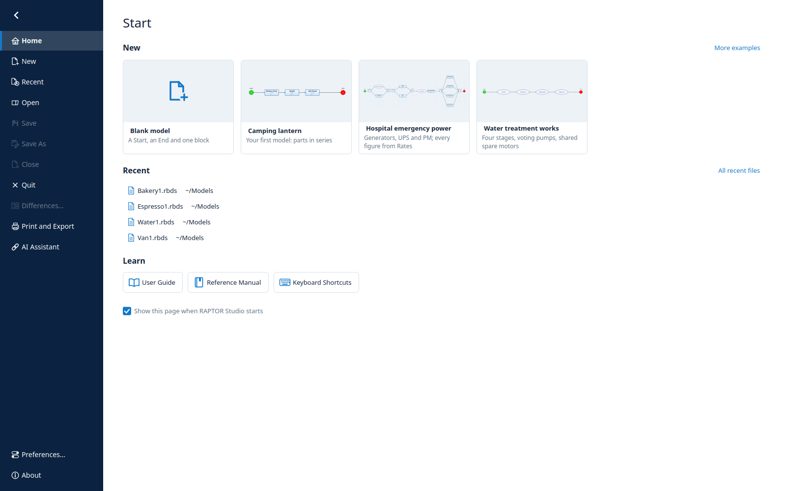
Pick Blank model, an example, or a recent file — or press Esc for an empty workbench. The workbench is a ribbon with tabs, a canvas in the middle, and dockable panels around it:
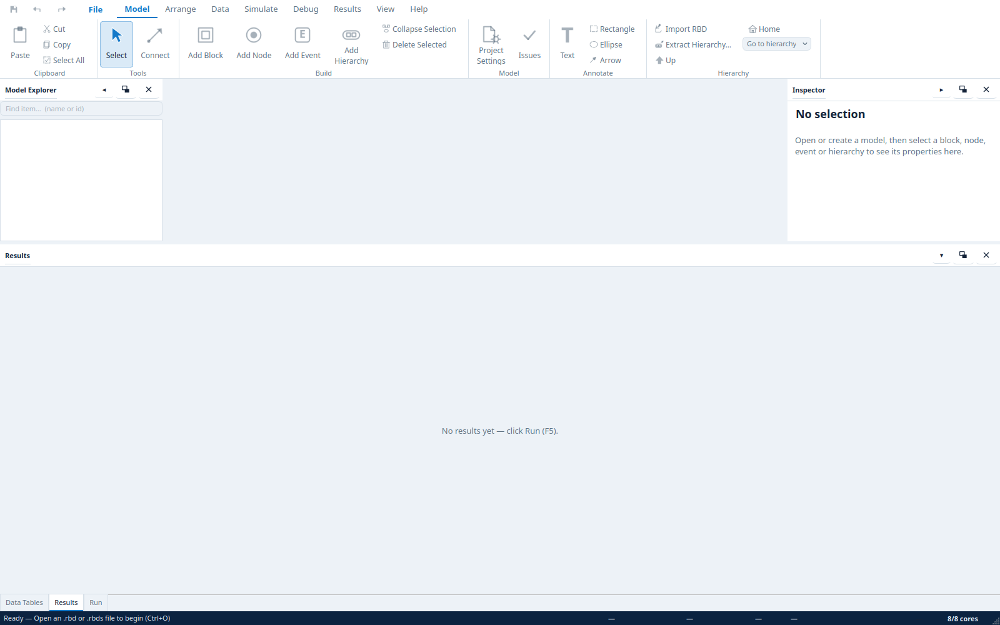
-
Model Explorer (left): a list of every part of your model.
-
Canvas (centre): your diagram. You draw here.
-
Inspector (right): details of whatever you select.
-
Data Tables (bottom): a spreadsheet-like view of all blocks, nodes, and events. Fast for typing many numbers.
-
Results (bottom): appears after you run a simulation.
-
Run (bottom, a tab beside Results): trials, run length, analyses and recording for the next run.
The blue File button, left of the tabs, brings the start page back: New (a blank model, or any example as a new, unsaved copy), a searchable list of your recent files, Open, Save, Save As and Close, and a Print and Export page (Print, Export PDF, Export Tables, Export Diagram SVG, Save Bitmap, Copy View). Press Esc to go back to the model.
The New page offers a blank model and every example: the Basics, one idea each from this guide, and the Advanced ones — a hospital’s emergency power, a water-treatment works, a data centre and a phased flight — larger systems that use several features at once, with a Rates library behind their numbers.
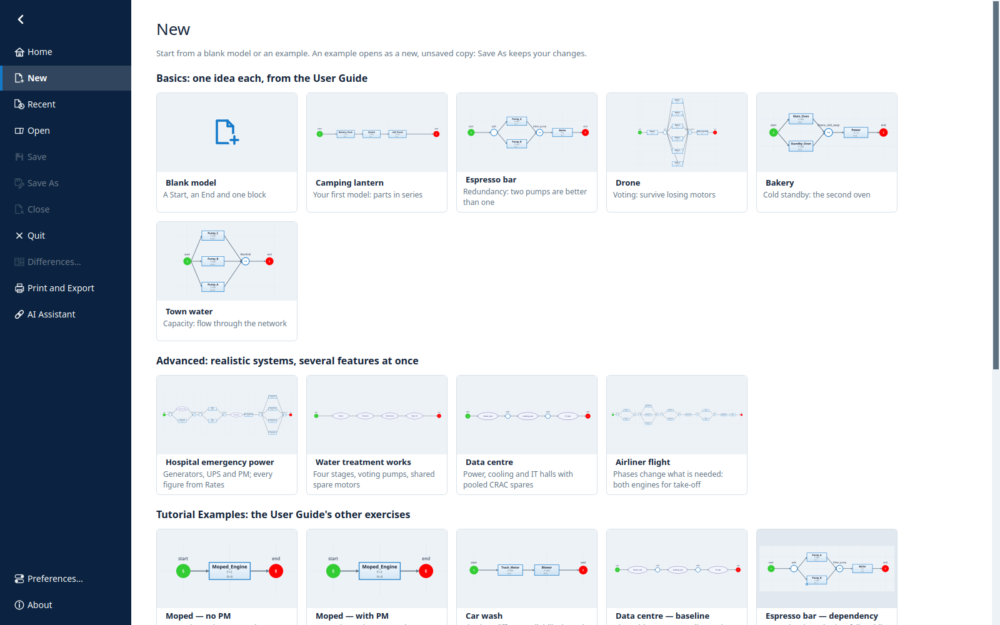
The ribbon tabs:
| Ribbon tab | What lives there |
|---|---|
Model |
Paste, Cut, Copy, Select All; Select and Connect; Add Block/Node/Event/Hierarchy, Collapse, Delete; Project Settings and Issues (F7): a tick when the model can run, a red cross when it cannot, click it for the list; Annotate (Text, Rectangle, Ellipse, Arrow); Import RBD, Extract Hierarchy and hierarchy navigation |
Arrange |
Auto Layout and Snap to Grid; stacking order (Bring to Front … Send to Back); Align & Distribute, Flip |
Data |
Phases, Rates, Spare Pools, Resources, Triggers; Block Defaults and Mass Edit; Export and Import Library |
Simulate |
Run (F5) and Animate; Trials and Cores; Run Settings; Pause, Stop, Jump; animation speed; Sweep and Compare. Trials, run length, the analyses (Weak Link, Cost, Capacity, Importance measures) and recording are set in the Run panel |
Debug |
The step debugger (Step, Next Time, Finish, More Steps, Restart, Terminate); Failure Effects (fail / repair a component and watch the consequences) and phase stepping |
Results |
Show Results, Float Window, Clear Results, Single-Point Failures, Domains; Show on Canvas (Weak Links, Capacity, Cost, Spares and Importance colourings) and their Bands |
View |
Zoom (Fit, Selection, In/Out, percent, Hierarchy); every panel (Explorer, Inspector, Results, Run, Data Tables, Reset Layout); Theme and Preferences |
Help |
User Guide, Reference Manual, Formulas, AI Assistant, Keyboard Shortcuts, About, Report Issue |
|
Tip
|
The Data Tables panel — a spreadsheet-like view of every block, node and event, fast for typing many numbers — is not its own tab. Open it from View → Panels → Data Tables. |
1.4. The one big idea
Reliability simulation answers one question:
If I run this machine for this long, how often does it still work at the end — and how often does it work along the way?
To answer it, the simulator needs three things:
-
Parts that can fail — called blocks.
-
Rules for how the parts connect — called the diagram.
-
Rules for how parts fail and get fixed — distributions.
That is all. The next chapter starts with one part and one rule.
1.5. Check yourself
1 |
What program do you use in this book, and what older tool does it match? |
2 |
Name the three things the simulator needs. |
Answers
-
RAPTOR Studio, the open Python program you are using. It carries on from Raptor 7, opens its models, and reads and writes
.rbdsfiles. -
Parts (blocks), connection rules (links and nodes), and failure and repair rules (distributions).
1.6. Annotating your diagram
The Model ribbon has an Annotate group with Text, Rectangle, Ellipse and Arrow tools; their stacking order is on the Arrange ribbon. Click the canvas to place; drag to move; use the corner handle to resize shapes. Right-click an annotation for Colours & Font (border, fill, text colour and font family/size/ bold/italic). Delete with the Del key as usual.
Annotations are saved in the native .rbds format. The older
.rbd format cannot store them — RAPTOR Studio warns before
dropping them if you save as .rbd.
Annotations can be anchored so they travel with the diagram. Select one and use the Inspector’s Anchor group: choose a target (block, node, event, hierarchy or another annotation), a Location — Right, Left, Above, Below or Centre — and a gap. Centre sits the annotation over its target and ignores the gap. Pick on canvas… arms a click: the next element or annotation you click becomes the target, and Esc cancels. An anchored annotation follows its target through drags, Align and Auto Layout, and anchored notes can chain. Drag an anchored note wherever you like and it keeps following its target from there; Reset position returns it to its Location and Break link frees it. (Dragging an anchored arrow still frees it.)
2. Your First Model: The Camping Lantern
Time: about 20 minutes. New ideas: blocks, a series chain, Start and End, the Run button, reliability.
2.1. You will learn
-
What a block is and what a link is.
-
How a series connection behaves.
-
How to run a simulation and read one number: reliability.
2.2. You need
-
Chapter 1, Welcome finished — you know your way around the window.
-
The file
models/Lantern1.rbds, or the patience to build it yourself.
2.3. The story
You are going camping for the weekend. Your trip lasts 48 hours. Your lantern has three parts:
-
a battery pack — it dies of old age, usually near 60 hours of use,
-
a switch — cheap part, on average it survives about 200 hours,
-
an LED panel — very reliable, typically lives past 100 hours.
If any part dies, the lantern is dark. You want to know: what is the chance my lantern is still burning at hour 48?
2.4. One new idea: a series chain
When parts are connected so that every part must work, engineers call it a series connection. Think of old Christmas lights: one dead bulb killed the whole string.
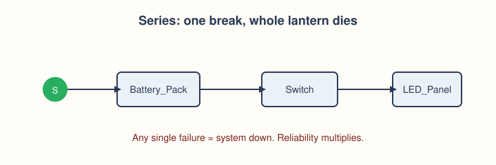
Rules to remember:
-
A block is one part that can fail.
-
An arrow between blocks is a link. It says "power flows here".
-
Every model starts at a green dot (Start) and finishes at a red dot (End). The End point is the whole system.
-
In a series chain, the system works only while every block works.
|
Tip
|
A good mental model: water flows from Start to End. If any pipe is broken, no water reaches End, and the system is down. |
2.5. Open the model
-
In RAPTOR Studio, pick File → Open (Ctrl+O).
-
Choose
models/Lantern1.rbds. -
Pick View → Fit (Ctrl+0) if the diagram looks small.
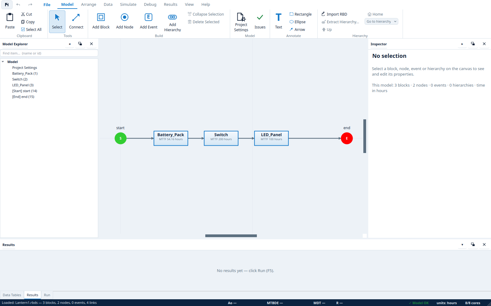
You see three blocks in a row between Start and End. That is the whole model.
2.6. Or build it yourself
The rest of this chapter uses the ready-made file, but it is only three blocks, and building one is worth doing once before the models get bigger. There are two ways; both end with the same diagram.
|
Tip
|
Follow one of these, not both. If you use an assistant with the RAPTOR MCP server connected (Chapter 22, RAPTOR from an AI Assistant), take the With an assistant route — it is two tool calls and it doubles as your introduction to the MCP tools. The GUI route is the one you will use for everything else in the book. |
2.6.1. With an assistant
Ask for the model by name. A session looks like this (each line is a tool call the assistant makes; you do not type them yourself):
build_model name="Lantern1" spec={
"nodes": [
{"name": "start", "type": "start"},
{"name": "end", "type": "end"}
],
"blocks": [
{"name": "Battery_Pack", "fail_dist": 15, "fail_params": [1.5, 60, 0]},
{"name": "Switch", "fail_dist": 4, "fail_params": [200, 0]},
{"name": "LED_Panel", "fail_dist": 8, "fail_params": [100, 10]}
],
"links": [
{"from": "start", "to": "Battery_Pack"},
{"from": "Battery_Pack", "to": "Switch"},
{"from": "Switch", "to": "LED_Panel"},
{"from": "LED_Panel", "to": "end"}
]
}That builds the same diagram as models/Lantern1.rbds, so the numbers
later in this chapter apply to what you just built.
Two things in that spec are worth noticing, because build_model will
refuse to build without them:
-
The Start and End nodes are declared explicitly. Unlike File → New, a spec has no implied Start or End, so
linksthat refer to them cannot resolve until they are listed innodes. -
fail_paramsis in the distribution’s own parameter order, not a mean and a spread. A Weibull is(shape, scale, location), so[1.5, 60, 0]is "shape 1.5, scale 60 h" (the scale is the characteristic life, a little above the mean). Asklist_distributionswhen you are unsure; getting the order wrong is the single easiest way to build a model that runs but says nothing.
build_model assigns the ids, wires the links, syncs the element counts
and tidies the layout in one call.
To place the blocks one at a time instead — which is how you add to a model that already exists — the order matters:
-
Add every block and event first, then add the nodes, then connect. Nodes are what fan-out and fan-in route through, so deciding where they go is a separate decision from placing components.
-
Call
add_blockonce per component. Leavefail_distout and the block takes the model’s defaults; setfail_dist(a code fromlist_distributions) andfail_paramstogether, or not at all. -
Call
add_nodefor each node, settingkexplicitly. A node’sncounts its incoming links, so wire the blocks into it before you expectnto mean anything. -
Call
connectto wire them up. A block takes at most one link in and one link out — where flow splits or rejoins, route through a Node rather than adding a second link to a block. -
Call
auto_layoutonce at the end. This is the only step that arranges the diagram;render_diagramdraws the positions as they stand.
Then check your work: validate_model reports anything illegal, and
render_diagram shows you the picture.
2.6.2. With the GUI
-
Pick File → New (or the Blank model card on the start page). You get a Start, an End and one block, Block_1, wired between them.
-
Select Block_1 and, in the Inspector, rename it Battery_Pack.
-
Click the link from Battery_Pack to End and press Del: the two new blocks go in between.
-
Click Model → Add Block, then click two empty spots on the canvas. The tool stays on until you press Q (or right-click), so one click on the button places as many blocks as you need. Rename them Switch and LED_Panel.
-
Click Model → Connect, then click the source and then the target: Battery_Pack → Switch, Switch → LED_Panel, LED_Panel → End. Right-click empty canvas to cancel a connection in progress.
-
Give each block its failure rule from the table below, in the Inspector's Failure tab: pick the distribution, then fill in its parameters. Take the parameter order from the field labels, not from habit — a Weibull’s first parameter is its shape, not its mean life. On the Repair tab choose None: a new block comes with a repair rule, and a lantern part that dies stays dead.
-
In the Run panel (bottom), set Run length to 48 hours and Trials to 10. A new model runs for 1,000 hours, which no lantern survives.
-
Pick Arrange → Auto Layout (Ctrl+L) to arrange the diagram.
-
Check the Issues button on the Model tab (F7): a tick means the model can run.
You did not add a node, and you did not need one. A block takes one link in and one link out, so a plain chain of blocks wires up directly. You reach for a Node the moment flow splits or rejoins — the redundancy in Chapter 3, Redundancy: Two Pumps Are Better Than One is the first place that happens.
The two ordering rules worth remembering, because they are what makes a model work rather than merely look right:
-
Place all your blocks, events and hierarchies first, then connect them using nodes and links.
-
If you have two components, only one of which is required, put a node near them. That node is what says "one of these two will do".
2.7. Read the data
Open the Data Tables panel (View ribbon tab, Panels group). The Blocks tab shows each block’s failure rule:
| Block | Failure dist | Param 1 | Param 2 | Repair |
|---|---|---|---|---|
Battery_Pack |
Weibull |
1.5 |
60 |
None |
Switch |
Exponential |
200 |
— |
None |
LED_Panel |
Normal |
100 |
10 |
None |
What does this say?
-
Failure dist picks the dice the engine rolls for "how long until this part dies". Chapter 6, Distributions: Same Average, Different Luck explains the different dice. For now: Weibull and Exponential are classic lifetime curves; Normal is the familiar bell curve.
-
Repair says
Nonefor all three. When one of these parts dies, it stays dead. There is no repair shop in the woods. -
The simulation settings (in Model Explorer → Project Settings) say: stop at 48 hours, do 10 trials.
2.8. Run it
Press F5, or pick Simulate → Run. Watch the Results panel.
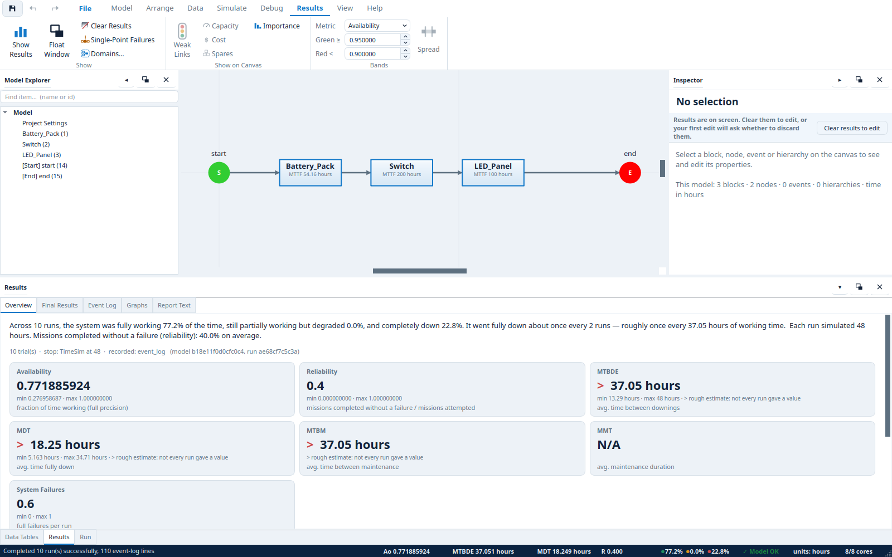
In the Results panel, open the Final Results tab and find the summary table. Look at the Reliability row, Mean column.
With these exact files and 10 trials you should see something like:
| Measure | Typical value |
|---|---|
Reliability (Mean) |
about 0.3 to 0.5 |
System Failures (Mean) |
about 0.5 to 0.7 per trial |
2.9. What just happened
The simulator played your camping trip 10 times. Each play is one trial. In each trial:
-
Each block rolled its own private dice for its death time.
-
If a block died before hour 48, the flow stopped there, and the lantern counted as failed.
-
At hour 48, the engine wrote down: did the lantern survive?
Reliability = (number of trials alive at hour 48) ÷ 10.
Our long-run answer (thousands of trials) is close to 0.38. So on roughly 4 trips out of 10, this lantern dies before the weekend ends. Time for a better battery pack!
|
Note
|
Why is your number maybe not 0.38? Ten trials is a tiny sample. One extra lucky trip changes the answer by 0.1. Chapter 8, How Many Trials? Trusting Your Numbers shows exactly how many trials you need. |
|
Note
|
Limits of this model
The engine rolls one private die per block: the battery’s death and the switch’s death are drawn independently. That is a modelling choice, not a fact about lanterns. If the real battery pack sometimes leaks and corrodes the switch contacts, the two parts' failures are correlated — and a model that assumes independence will always be too optimistic about how often "both fail together" happens. Series logic (any one death kills the system) is still exactly right here; it is the independent dice assumption underneath it that a real study must check. |
2.10. Check yourself
1 |
In a series chain of 5 blocks, how many blocks may fail and still leave the system working? |
2 |
What does one trial mean? |
3 |
Where does the engine write the reliability number? |
Answers
-
Zero. Series means every block must work.
-
One simulated play of the mission — 48 lantern hours with fresh dice rolls.
-
In the Results panel, Final Results tab, Reliability row.
2.11. Exercise
Change the battery pack’s Param 1 from 1.5 to 1.1 in the Data
Tables (keep Param 2 = 60). Run again with more trials: set the run
count (Trials in the Run panel) to 100 first.
Hint: a smaller shape parameter means failures spread out more, with many early deaths. Does reliability go up or down?
Answer
Reliability drops. With shape 1.1 the battery produces many very early deaths, and the chain has no spare parts. Expect roughly 0.25–0.30 at 100 trials.
2.12. What you learned
-
A model is blocks plus links plus failure rules.
-
Series means: all blocks must work.
-
Reliability counts trials that reach the mission end alive.
-
Few trials give wobbly answers.
Next chapter: how to make a machine that keeps working even when a part dies.
3. Redundancy: Two Pumps Are Better Than One
Time: about 20 minutes. New ideas: parallel branches, the OR node, why redundancy helps.
3.1. You will learn
-
What a redundant connection is.
-
How to split and rejoin branches with a node.
-
What the node rule "need 1 of 2" means.
3.2. You need
-
The file
models/Espresso1.rbds.
3.3. The story
You run an espresso cart. Your machine has one boiler and one water pump. When the pump dies mid-morning, you sell nothing until it is fixed. Painful.
So you buy a second pump. Now the machine works while at least one pump still lives. Engineers call this redundancy: extra copies of a part so one failure does not kill the system.
Question for the simulator: how much does the second pump really buy me? Mission: survive a 500-hour season without any downtime.
3.4. One new idea: the OR node
A series chain cannot express "either pump is fine". We need a junction. In RAPTOR Studio a junction is called a node.
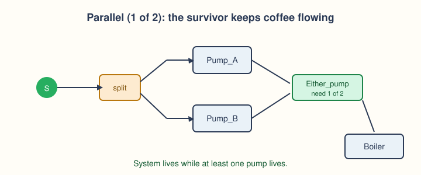
Our model:
-
Flow leaves Start and reaches the split node.
-
The split node feeds two branches: Pump_A and Pump_B.
-
Both branches flow into the node Either_pump.
-
Either_pump has the rule "need 1 of 2": it stays up while at least one input branch works.
-
From there, flow passes through the Boiler, then to End.
|
Tip
|
Read nodes as voting rules. "Need 1 of 2" is an OR gate. "Need 2 of 2" is an AND gate. Chapter 5, Voting: A Drone That Survives Losing Motors generalizes this to votes like "need 4 of 6". |
3.5. Open the model
Open models/Espresso1.rbds. Compare the canvas with the diagram above.
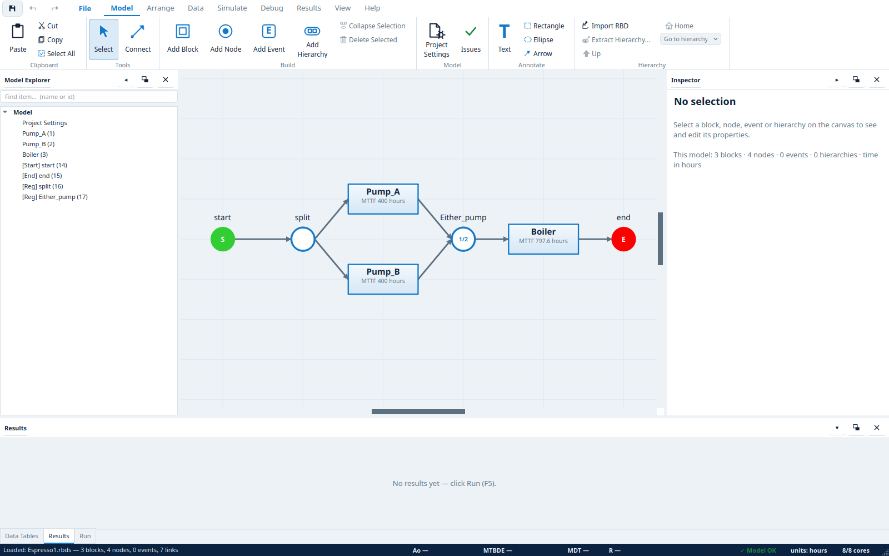
Select the green Either_pump node and look at the Inspector: the node type is Regular, with k = 1 (need) out of n = 2 (inputs).
The block data:
| Block | Failure dist | Param 1 | Param 2 | Repair |
|---|---|---|---|---|
Pump_A |
Exponential |
400 |
— |
None |
Pump_B |
Exponential |
400 |
— |
None |
Boiler |
Weibull |
2.0 |
900 |
None |
Mission settings: stop at 500 hours, 10 trials.
3.6. Run it
Set the run count to 10 on the Simulate tab and press F5.
Look at Reliability (Mean) in Final Results. With many trials the long-run answer settles near 0.37.
Now do the comparison that makes the lesson stick. Delete Pump_B (select it, press Del), connect Pump_A straight to Either_pump’s position so the model is a plain series chain again, and run again. One-pump reliability lands near 0.21.
| Machine | Chance to survive 500 h |
|---|---|
One pump (series) |
about 0.21 |
Two pumps (parallel) |
about 0.37 |
Almost double — from one €40 part.
|
Note
|
Why not 0.21 × 2 = 0.42? Redundancy never doubles reliability. While both pumps live, the spare one just idles. It only pays when the first one dies — and both die eventually. The engine counts every one of those stories. |
3.7. Watch one trial
The Results panel’s Event Log tab shows one trial as a list of moments. Find a trial where both pumps died. You will see lines like:
241.299072 Block Pump_A Failed Operating_time=241.299072 241.299072 Block Pump_A Done No_repair 241.299072 Node Either_pump Degraded 1-1/2 ...
Read it like a story: Pump_A dies at hour 241. The node notices it lost one of its two inputs, but keeps flowing — Degraded, not dead. The system shrugs and carries on. Later, if Pump_B also dies, the node goes Bad, and End goes down with it.
This ripple — part fails, node re-checks, system re-checks — is how every event in every model travels.
|
Note
|
Limits of this model
The 0.37-vs-0.21 result only holds because Pump_A and Pump_B fail independently — the engine draws each one’s death time from its own private stream. Real twin pumps often share a power supply, a water line, or a mounting bracket. If a surge fries both pumps at once, that shared cause is invisible to this model — it would need dependency between the blocks to capture, which this book reaches only in a later chapter. Never trust a redundancy number until you have asked what the two parts have in common besides the job they share. |
3.8. Check yourself
1 |
What node rule models "the system works while at least one of its two parts works"? |
2 |
Your cart has two pumps AND one boiler. Why did we not put a second boiler in? |
3 |
In the event log, what is the difference between a Degraded node and a Bad node? |
Answers
-
A node with k = 1, n = 2 — "need 1 of 2".
-
The boiler is in series: a second boiler would help, but the point of the lesson is the OR node. Also: one boiler, two pumps matches the cart’s actual plumbing.
-
Degraded: the node lost inputs but still has enough to pass flow. Bad: not enough inputs remain; flow stops and the system goes red.
3.9. Exercise
Make the pumps unequal: set Pump_B’s failure Param 1 from 400 to
150 (a cheap, weak pump). Predict first: does 500-hour reliability go
up or down, and by roughly how much? Then run 100 trials and check.
Answer
down. A 150-hour pump is near-dead by hour 500 (survival ≈ 3.6%), so the second pump almost never rescues a season. Expect roughly 0.30 at 100 trials — most of the gain from Pump_A alone.
3.10. What you learned
-
Parallel branches plus a "need 1 of n" node give redundancy.
-
Redundancy helps a lot, but never doubles reliability.
-
Nodes re-check themselves after each failure and pass the news on.
Next chapter: what happens to that math when the "backup" secretly answers to the primary.
4. Dependency: The Backup That Wasn’t
Time: about 25 minutes. New ideas: dependency, the idle state, why a diagram can lie about redundancy.
4.1. You will learn
-
What it means for one block to depend on another.
-
Why a dependent block’s own failure clock can pause.
-
How to catch redundancy that exists on the page but not in practice.
4.2. You need
-
Chapter 2, Your First Model: The Camping Lantern and Chapter 3, Redundancy: Two Pumps Are Better Than One finished.
-
The file
models/EspressoDep1.rbds.
4.3. The story
Remember the espresso cart from Chapter 3, Redundancy: Two Pumps Are Better Than One? Two pumps, either one keeps the pressure up, reliability climbed from about 0.21 to about 0.37. The cart has been running for a season now, and the mechanic who serviced it made one small change to save a part: instead of wiring Pump_B’s activation relay to its own switch, she spliced it into Pump_A’s control board. Cheaper. Fewer wires. The diagram in the shop manual still shows two independent pumps.
Is it still two independent pumps?
4.4. One new idea: dependency
Every block you have built so far answers to nothing but its own dice. Real parts are not always so private. A dependent block watches another element and reacts to it: when the thing it depends on goes down, the dependent block is pulled into an Idle state — not failed, not running, just paused. Its own failure clock stops counting. The moment the depended-upon element comes back, the dependent block picks up exactly where it left off.
Open models/EspressoDep1.rbds. On the canvas it is pixel-for-pixel
Espresso1: Pump_A and Pump_B feed Either_pump ("need 1 of 2"), then
the Boiler, same as before. Look closely at Pump_B’s box, though — a
small blue circle sits in its bottom-left corner. Hover over the block
and a dashed line appears, running straight to Pump_A:
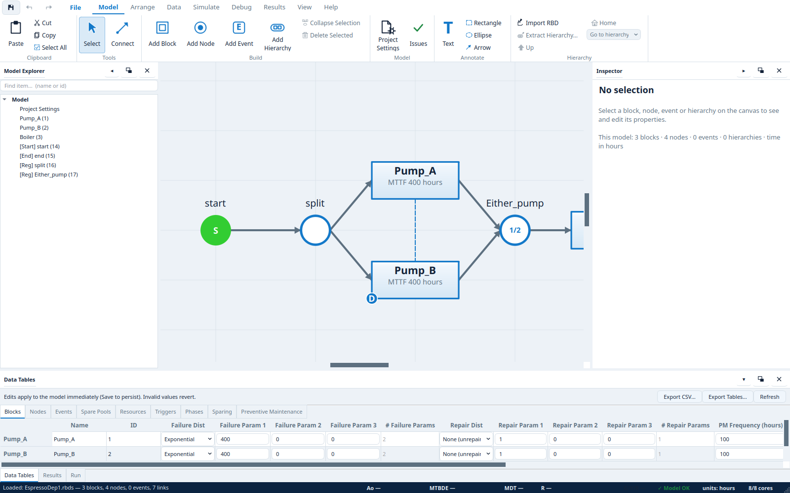
That badge and its connector are how a dependency shows on the canvas: without them it would have no visual feedback at all, and you would have to keep a separate hand-drawn dependency diagram just to avoid losing track of it. RAPTOR Studio draws the link for you — but only if you notice the badge. Two boxes, two links into a vote node: at a glance, this diagram still looks exactly like chapter 2’s independent pair, which is precisely how the mechanic’s wiring shortcut goes unnoticed until someone hovers, clicks, or opens the Inspector.
|
Tip
|
This is the simplest of three dependency flavors the full engine recognizes — an elemental dependency, one block depending on one named other block (badge glyph D). Local dependency ties a block to its own downstream node instead (glyph L), and system dependency ties it to the whole model’s up/down status (glyph S). This chapter’s model, and the mechanism verified below, is the elemental case. |
4.5. Open the Inspector
Select Pump_B and check its Deps tab. The Dependency group has
Dependent on: selected, with the combo pointing at Pump_A block -
001. Underneath, the Effects (%) group reads:
| Field | Value |
|---|---|
Nothing % |
0.00 |
Idle % |
100.00 |
PM % |
0.00 |
Failure % |
0.00 |
100% Idle, no other outcome possible: Pump_B is set to go Idle, every time, the instant Pump_A is down. Select Pump_A and its own Dependency group shows Independent — it answers to nothing. Both pumps still use the same dice as before — Exponential, mean 400 hours, no repair.
4.6. Run it
Press F5 at 10 trials, then raise it to 2000 for the long-run number. Watch one trial’s event log for the moment it happens:
0.000000 Block Pump_A Good InitializeStress=1.000000 0.000000 Block Pump_B Good InitializeStress=1.000000 241.299072 Block Pump_A Failed Operating_time=241.299072 241.299072 Block Pump_A Done No_repair 241.299072 Block Pump_B Idle Dependence 241.299072 Node Either_pump Degraded 1-1/2_ur4_di5 241.299072 Node Either_pump Idle 0-1/2_df4_di5
Read the last four lines slowly. Pump_A dies. Pump_B — perfectly
healthy, still well inside its own 400-hour mean — is yanked into
Idle on the very same line, tagged Dependence. The node briefly
shows Degraded (one of two branches still reads as up) and then
immediately drops to Idle once it notices Pump_B’s branch went with
it. The two-branch vote never actually had two independent branches to
vote on.
| Model | Reliability at 500 h |
|---|---|
Espresso1 (independent pumps, Chapter 3, Redundancy: Two Pumps Are Better Than One) |
about 0.37 |
EspressoDep1 (Pump_B depends on Pump_A) |
about 0.21 |
That second number is not a new figure. It is Chapter 3, Redundancy: Two Pumps Are Better Than One's own single-pump result, to three digits. Wiring Pump_B’s relay off Pump_A did not weaken the redundancy a little. It deleted it. Pump_B can be in perfect health for the entire mission — it never once gets the chance to matter, because the moment it would matter (Pump_A being down) is exactly the moment it is forced to sit out.
|
Note
|
Why so exact? Whenever Pump_A is up, the "need 1 of 2" node is already satisfied by Pump_A alone — Pump_B’s own state is irrelevant. Whenever Pump_A is down, Pump_B is forced Idle by the dependency, so it can never be the one covering. There is no scenario left in which Pump_B’s health changes the outcome. Two parallel boxes on the canvas, one working system underneath. |
4.7. Check yourself
1 |
Pump_B is healthy and Pump_A is Repairing. What state is Pump_B in, and why? |
2 |
A colleague says "the numbers can’t be right — Pump_B still shows up in the diagram working fine most of the time." Is that consistent with reliability collapsing to the single-pump figure? Why? |
3 |
Name the one change to |
Answers
-
Idle, tagged
Dependence— the dependency forces it into Idle the instant Pump_A (what it depends on) is anything but Running, and Pump_A entering Repairing counts. -
Yes. Pump_B being "healthy" only means it hasn’t independently failed — it says nothing about whether it’s ever actually covering for Pump_A. Since Pump_B is forced Idle for the entire time it would need to cover, its own health never once changes the system’s outcome.
-
Clear Pump_B’s dependency fields (
DepNum=0,DepType=None) so it goes back to answering only its own dice — that is exactly Espresso1 from Chapter 3, Redundancy: Two Pumps Are Better Than One.
4.8. Exercise
Before running anything: if you rewired the other way — Pump_A’s
relay spliced onto Pump_B’s control board instead, so Pump_A is now the
dependent one — would reliability end up higher, lower, or about the
same as this chapter’s ~0.21? Write down your answer. Then edit the
file (swap which pump carries the depnum/depType/depIdle fields),
run 2000 trials, and check yourself. What does the result tell you
about whether it was ever really about which pump was better?
Answer
About the same, ~0.21–0.22 either way. Both pumps draw from the identical Exponential(400) distribution, so it makes no difference which one is nominated as "the real one" — the system’s reliability is always whichever pump is independent, alone.
|
Note
|
Limits of this model
This chapter used the simplest dependency: 100% Idle, one block depending on one other block. A dependent block can also be set to go Idle only some of the time (and otherwise keep running, be sent for maintenance, or be induced to fail outright), using the percentages in its dependency settings; this chapter does not demonstrate those mixes. In the field, dependency is also easy to introduce by accident: a shared power rail, a shared control signal, a single technician who can only be in one place. None of those show up as a D badge unless someone has already told the model about them — the badge warns you about dependency you declared, not dependency you forgot to notice in the first place. |
4.9. A dependent block also breaks the path it sits on
Idle does not mean "out of the way". An Idle block is not carrying anything, so the path through it is broken for as long as it is Idle. That is the whole point in the backup story above (the backup is Idle exactly when it is needed), and it has a second use.
Suppose one physical item appears in two places on the diagram, and
when it is down both places must be down. Draw the item once as a
normal block. At the second place, draw a block that never fails (a
very large time to failure, such as 9e8, which is under the 999,999,999.999999 limit)
and make it depend on the first block with 100% Idle. While the
first block is down, the second is Idle and its path is broken; while
the first is up, the second never fails, so it adds no failures of its
own.
For example, with block X working in parallel with W, followed in series by a never-failing Twin that depends on X (100% Idle): failing X alone leaves the system Yellow without the Twin (W carries the load), and turns it Red with it, because Twin goes Idle in series.
|
Warning
|
A dependent block is not independent redundancy. Used as a stand-in for the same item it is exactly what you want; used as a "backup" it sits Idle exactly when the thing it follows is down. Check which of the two you are drawing before you trust the result, and read the dependency badge (D) on the canvas to see what a block follows. |
4.10. What you learned
-
A dependent block pauses (Idle) while what it depends on is down, and its failure clock resumes exactly where it left off.
-
Dependency has its own small badge and hover connector — real, useful, and easy to miss on a diagram that otherwise looks ordinary.
-
An Idle block breaks the path through it, so a never-failing block that depends on another at 100% Idle is a way to show one item in two places.
-
A redundant-looking diagram can hide a single point of failure: if the backup depends on the primary, the system’s real reliability is the primary’s alone, no matter how good the backup is.
Next chapter: voting with more than two — six motors, four needed.
5. Voting: A Drone That Survives Losing Motors
Time: about 20 minutes. New ideas: the k-of-n vote node, mixing series and parallel structure, degraded-but-working states.
5.1. You will learn
-
How a vote node works: "need k of n".
-
How to combine a series part with a voted group.
-
Why the system health bar shows yellow.
5.2. You need
-
Chapter 2, Your First Model: The Camping Lantern and Chapter 3, Redundancy: Two Pumps Are Better Than One finished.
-
The file
models/Drone1.rbds.
5.3. The story
A delivery drone has six motors. Here is the fun part of aircraft design: it does not need all six. Four healthy motors can hold the frame steady. Five is comfortable. Three is a crash.
So the drone flies while at least 4 of its 6 motors work. This rule is called a k-of-n vote. Your laptop’s battery cells, a data centre’s servers, a rocket’s engines — same trick.
The rest of the drone stays simple:
-
one Battery — no spare, no flying without it,
-
one Flight_Controller — its brain.
Mission: fly 48 hours of total service time. What are the odds?
5.4. One new idea: the vote node
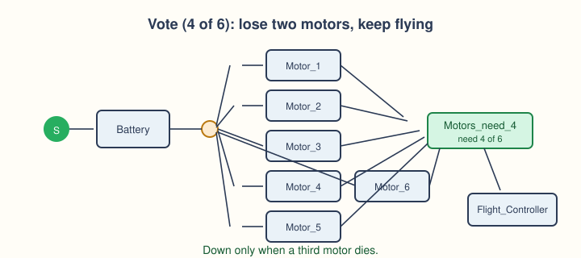
The model has three layers:
-
Series start: Battery sits alone in the flow.
-
Voted middle: all six motors feed one node with rule need 4 of 6.
-
Series end: Flight_Controller, then End.
|
Tip
|
Series, redundancy and voting are really one idea wearing three costumes. "Need n of n" is series. "Need 1 of n" is parallel redundancy. Any k in between is a vote. One knob — the k — gives you every flavor. |
5.5. Open the model
Open models/Drone1.rbds and select the Motors_need_4 node. In the
Inspector you see k = 4, n = 6. Change those two numbers here when you
do the exercise.
The block data:
| Block | Failure dist | Param 1 | Param 2 |
|---|---|---|---|
Battery |
Normal |
60 |
6 |
Motor_1 … Motor_6 |
Exponential |
120 |
— |
Flight_Controller |
Weibull |
1.2 |
300 |
Mission settings: stop at 48 hours, 10 trials.
5.6. Run it
Press F5. With many trials, long-run reliability settles near 0.59 — call it a coin flip with good odds. Now look at the Results Overview tab and find the System health bar:
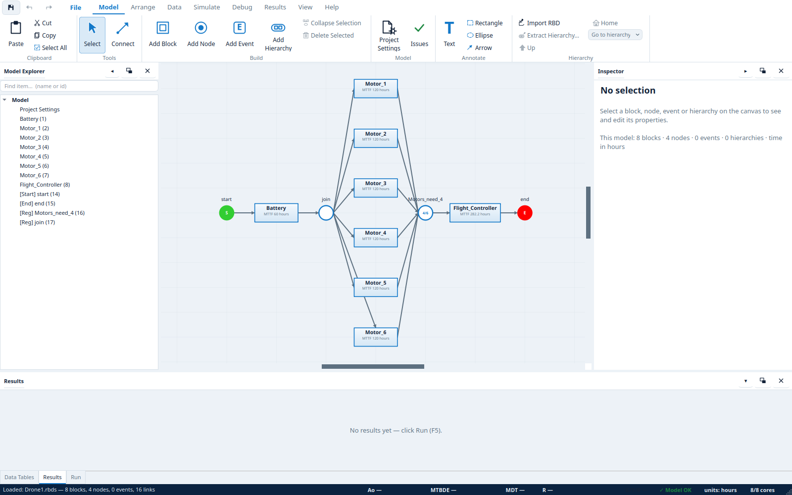
You will often see a yellow slice. Yellow means degraded: the drone lost a motor or two, but still flies. The engine tracks three colours at every instant:
Green |
every block that matters is up |
Yellow |
some blocks down, but the system still works |
Red |
system down |
Redundancy does not just raise reliability — it buys you warning time. The yellow hours between "first motor died" and "third motor died" are your landing window.
5.7. Do the math check (optional but satisfying)
Each motor survives 48 hours with probability e^−48/120 ≈ 0.67. The chance that at least four of six survive works out to about 0.69. The battery and controller survive with about 0.98 and 0.90. Multiply: 0.69 × 0.98 × 0.90 ≈ 0.61 — right where the simulator lands (0.59).
When a simulation agrees with pencil-and-paper theory, both deserve trust. For big models, only the simulator survives.
|
Note
|
Limits of this model
A k-of-n vote only protects you against independent motor failures. Six real drone motors share one battery, one frame, and often one electronic speed controller board — a hard landing or a battery fault can take out several at once, in a single shared instant no k-of-n vote can absorb. The 0.59 reliability figure is the best case: motors failing for unrelated reasons, one at a time. A real flight-safety case would need to add that shared risk explicitly, not trust the vote node alone. |
5.8. Check yourself
1 |
What k would turn Motors_need_4 into a pure series chain? |
2 |
What k would make it a full 6-deep redundancy? |
3 |
A trial ends with reliability counted how — green, not-yellow, or something else? |
Answers
-
k = 4, n = 4 — every motor required.
-
k = 1 — any single motor keeps the drone airborne (physically silly, mathematically fine).
-
Reliability counts trials that finish with the system never going red. Yellow time inside a trial still counts as a success.
5.9. Exercise
Cheap airline: the operator removes Motor_6 to save weight and cost. Set k back to 4 but delete Motor_5 and Motor_6 so only 4 motors feed the node (n = 4). Predict reliability before running. Then run 100 trials. Was losing two motors worth it?
Answer
Reliability falls hard — roughly 0.42 at 100 trials. Losing two of six motors removes most of the vote’s protection: the node now fails on the second motor loss.
5.10. What you learned
-
A k-of-n node votes: system up while k of n inputs live.
-
Series = need all, parallel = need one, vote = anything between.
-
Degraded (yellow) time is real, visible, and useful.
Next chapter: the dice themselves. What Exponential, Weibull, and friends actually mean — and why the average alone lies to you.
6. Distributions: Same Average, Different Luck
Time: about 25 minutes. New ideas: failure distributions, why the shape matters, the warranty trap.
6.1. You will learn
-
What a failure distribution is and how to read its parameters.
-
Why two parts with the same average life behave totally differently.
-
How to pick a distribution without fooling yourself.
6.2. You need
-
Chapter 2, Your First Model: The Camping Lantern, Chapter 3, Redundancy: Two Pumps Are Better Than One and Chapter 5, Voting: A Drone That Survives Losing Motors finished.
-
The three files
models/Toaster_Fixed.rbds,models/Toaster_Expo.rbds,Open Toaster_Expo in RAPTOR Studio and
models/Toaster_Weibull.rbds.
6.3. The story
Three factories sell heating elements. All three claim: "average life about 1000 hours." You run a toaster warranty service. Your warranty: 600 hours, full refund.
Same promise, three contracts. But averages hide the shape of the risk. One factory builds parts that die like clockwork at exactly 1000 hours. One builds parts where any hour is equally dangerous. One builds parts that usually live long but sometimes fail in the first weeks (a bad batch from a dirty oven — it happens).
Question: which factory costs us the least in refunds?
6.4. One new idea: the failure distribution
A failure distribution is the dice the engine rolls for each block’s death time. You already met three of them. Now look under the hood:
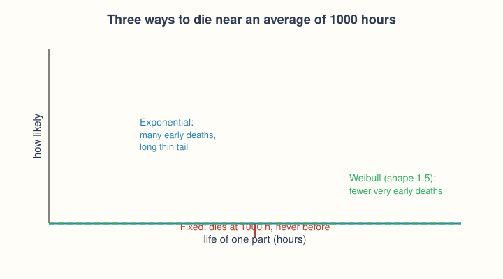
| Distribution | Parameters | Character |
|---|---|---|
Fixed |
life |
Dies on schedule. Zero surprise. |
Exponential |
mean |
No memory. Every hour carries the same risk, so many very early failures. |
Weibull |
shape, scale |
Tunable. Shape > 1 means parts wear out; early failures get rare. |
How to read the curves above:
-
Red spike (Fixed): nothing happens for 1000 hours, then the part dies. Within your 600-hour warranty: never.
-
Blue curve (Exponential): highest risk is right now, at age zero. A scary share of parts die young even though the average is still 1000 hours.
-
Green curve (Weibull, shape 1.5): risk starts low, grows with age. Fewer early deaths than Exponential.
|
Tip
|
The Exponential’s "no memory" property is real physics for electronics: a transistor does not know how old it is. It is terrible physics for toaster elements, which clearly wear out. Choose dice that match the physics, not dice that match the spreadsheet. |
6.5. Run the trio
Open each file and press F5. All three use 40 trials and stop at 600 hours. Then raise the run count to 500 for smoother numbers.
| Element | Reliability at 600 h | Refund rate |
|---|---|---|
Toaster_Fixed |
1.00 |
0% |
Toaster_Weibull |
about 0.67 |
about 33% |
Toaster_Expo |
about 0.55 |
about 45% |
About one in ten toasters from the Exponential factory dies before 100 hours — 1 − e^(−100/1000) ≈ 9.5% — while its brochure still says "average 1000 hours". The Fixed factory never pays a refund but also never surprises anyone. This gap between average and early-failure risk is called the warranty trap, and whole product lines have died in it.
6.6. Where these names come from
You will meet more dice later (Normal, Gamma, Lognormal, Triangular, Empirical). Two rules cover most choices:
-
If parts fail from random events, not wear (electronics, software, power cuts): Exponential.
-
If parts wear out (bearings, belts, heating elements, tires): Weibull with shape between 1.5 and 3.
When you have real repair records, the Empirical distribution uses your data directly as the dice — no guessing about families at all.
|
Note
|
Very large means. RAPTOR Studio, like Raptor 7, rejects a mean (or
scale, or constant) of 999,999,999.999999 or more in the model’s time
unit. Very reliable parts can exceed that: a mean time to failure of
4×109 hours is over the limit. The way round it is the model’s time
unit, not the number: switch the unit to days (or weeks, months or
years) and convert the other times in the model to match. The
validation message names the smallest larger unit that brings the value
in range. For a block that should never fail, any value below the limit
that is far longer than the run (for example |
6.7. One more idea: the hazard function and the bathtub curve
There is a name for "how risky is this part right now, given it has survived this long": the hazard function. It is not the same question as "what’s the average life" — a part can have a long average life and still be extremely risky at this exact moment.
Three shapes cover almost every real component, and they stack into the classic bathtub curve:
| Life stage | Hazard shape | Matches |
|---|---|---|
Infant mortality |
falling — early failures thin out |
Weibull, shape < 1 |
Useful life |
flat — memoryless, age does not matter |
Exponential |
Wear-out |
rising — risk grows with age |
Weibull, shape > 1 |
This is why the toaster factories' shapes matter so much: Exponential sits permanently in the flat middle of the bathtub (constant risk, forever), while Weibull-1.5 starts in the falling-risk zone and slides into the rising one. Burn-in testing exists to walk a part past the falling-early-life knee before it ships to you. Chapter 12, Preventive Maintenance: The Careful Commuter exists to pull a wear-out part off the rising edge before it climbs too high, by resetting its clock on a schedule.
The full 22-distribution table — every mean formula and when to reach for each family — lives in the Formulas quick reference; this chapter only needed the three that make the shape argument.
|
Note
|
Limits of this model
Choosing Fixed, Exponential or Weibull for these toasters was a modelling decision, not a measurement. With only a handful of real field failures, several distribution families can fit the data about equally well while implying very different early-life risk — exactly the gap this chapter is built around. A small sample tells you less about the shape of the risk than it feels like it should. |
6.8. Check yourself
1 |
Two parts have equal mean life. Can one be much worse inside a short warranty? How? |
2 |
Which distribution has no memory? |
3 |
Your bearings crack from metal fatigue, which gets worse with age. Which family fits: Exponential or Weibull with shape 2? |
Answers
-
Yes. Give one part a distribution with heavy early risk — for example Exponential — while the other is Fixed or a wear-out Weibull. Equal averages, very different early-failure rates.
-
Exponential.
-
Weibull with shape 2: risk grows with age, which is what fatigue does.
6.9. Exercise
The warranty office proposes cutting the warranty to 400 hours. For
Toaster_Expo, compute the expected refund rate by hand:
P(die before t) = 1 − e^(−t/1000). Check your answer against a 500-trial
run.
Answer
1 − e^(−400/1000) = 1 − 0.670 ≈ 33%. The simulation agrees (about 0.33 at 500 trials).
6.10. What you learned
-
Distributions are dice; parameters set their shape, not just their average.
-
Equal averages do not mean equal risk, especially early in life.
-
Match the dice to the physics: random shocks → Exponential, wear-out → Weibull.
Next chapter: parts that get repaired. Availability, MTBF, and why a machine that always breaks can still be a good machine.
7. Repair: The Vending Machine That Keeps Getting Up
Time: about 25 minutes. New ideas: repair distributions, availability versus reliability, MTBDE, MDT.
7.1. You will learn
-
How to give a block a repair rule.
-
Why availability, not reliability, is the right measure when things get fixed.
-
What MTBDE and MDT tell you about your maintenance game.
7.2. You need
-
Chapter 2, Your First Model: The Camping Lantern through Chapter 6, Distributions: Same Average, Different Luck finished.
-
The file
models/Vendo1.rbds.
7.3. The story
A soda vending machine stands on a school corridor. It has two parts that matter:
-
the Compressor — fails about every 400 hours, but the repair technician fixes it in about 4 hours,
-
the Keypad — fails about every 600 hours, and the replacement part ships slowly: a fixed 12 hours of waiting.
The machine serves for a full school year: 8760 hours. It will break many times — that is fine. The question is not "will it fail?" but "how much of the year is it actually selling soda?"
7.4. One new idea: the repair rule
Until now, every block had Repair = None: die once, stay dead. Real machines get repaired. Give a block a repair distribution and the engine sends it to a repair queue when it fails:
-
Block fails. The event log writes
Failed, thenRepairing. -
The engine rolls the repair dice for the fix duration.
-
The block returns to service and starts a fresh failure clock.
Open models/Vendo1.rbds and its Data Tables panel (Chapter 2, Your First Model: The Camping Lantern's
spreadsheet-like view of every block, one row each):
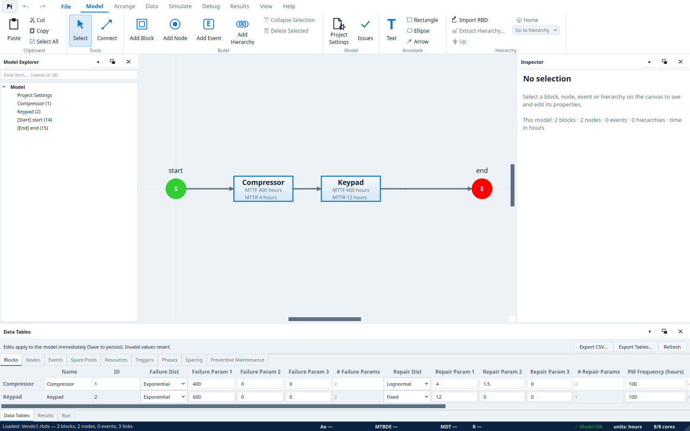
The same numbers, read off that grid:
| Block | Fail dist | F P1 | Repair | R P1 | R P2 |
|---|---|---|---|---|---|
Compressor |
Exponential |
400 |
Lognormal |
4 |
1.5 |
Keypad |
Exponential |
600 |
Fixed |
12 |
— |
Mission: stop at 8760 hours, 20 trials.
7.5. Run it and meet the numbers
Press F5. The Results Overview tab now shows the repair-era metrics (image from a 20-trial run):
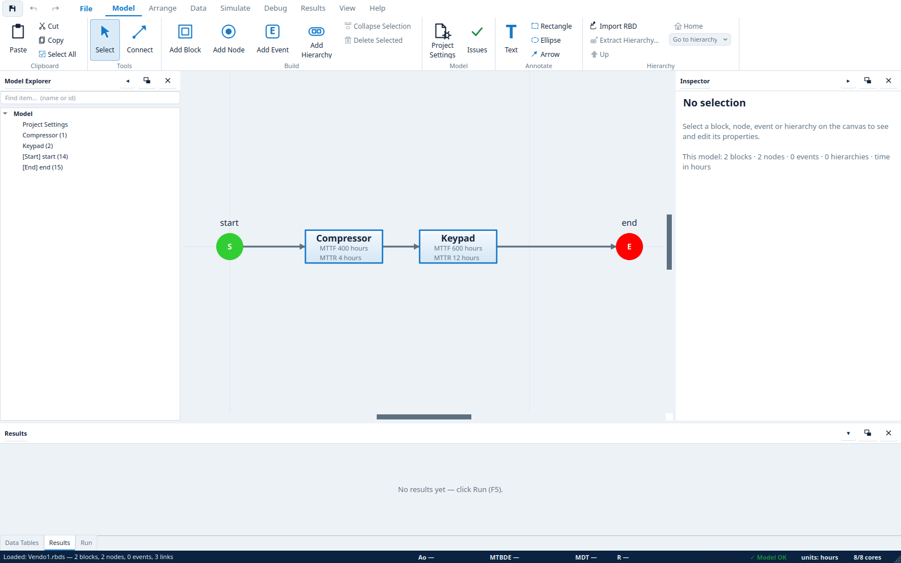
| Metric | Meaning |
|---|---|
Availability |
fraction of the year the machine sells soda (here about 0.97) |
MTBDE |
Mean Time Between Downs — about 237 hours between full stoppages |
MDT |
Mean Down Time — about 7 hours per stoppage |
System Failures |
about 35 stoppages per year |
Sanity check: 35 stoppages × 7 hours ≈ 245 down hours ≈ 2.8% of the year. Availability ≈ 97.2%. The numbers agree with each other — a habit worth copying.
7.6. Reliability vs availability: the exam question
Scroll to the Final Results tab. Reliability is 0.00. Correct! The chance of surviving a whole year without a single stoppage is essentially zero.
This is the most common beginner mistake in reliability work:
| Reliability | Availability | |
|---|---|---|
Question |
"Did it run non-stop to the end?" |
"What fraction of time did it work?" |
Right when |
failure is one-shot (spacecraft, fire alarm) |
repair exists (cars, servers, vending machines) |
Our vending machine |
0.00 |
0.97 |
A machine with reliability 0.00 and availability 0.97 is a good machine. A fire alarm with those numbers is a criminal offense. Pick the measure that matches the mission.
|
Tip
|
Two levers raise availability: fail less often (better parts, redundancy — Chapter 3, Redundancy: Two Pumps Are Better Than One, Chapter 5, Voting: A Drone That Survives Losing Motors) or stay down less long (faster repairs, spares on the shelf). MDT tells you which lever is yours to pull. Here the 12-hour keypad wait is the biggest single contributor. |
7.7. One more idea: five letters that get mixed up constantly
MTBDE and MDT are system-level numbers — this report’s own words for "how the whole vending machine behaves". Reliability conversation also uses three component-level letters, and confusing the two levels is the most common mix-up in the field:
| Term | Meaning |
|---|---|
MTTF |
Mean Time To Failure — one part’s own average life (the Compressor’s Exponential mean, 400 h, is its MTTF) |
MTTR |
Mean Time To Repair — one part’s own average fix time (the Keypad’s Fixed 12 h is its MTTR) |
MTBF |
Mean Time Between Failures — MTTF + MTTR for one repaired part, so it only equals MTTF when repair is instant |
The system’s MTBDE is not the smallest component’s MTBF, and it is not their sum either — it depends on the whole diagram (series parts each contribute a chance to bring the system down; redundant parts mostly don’t). Reach for the exact formulas in the Formulas quick reference rather than guessing from a part’s datasheet number.
|
Note
|
Limits of this model
This model assumes a repair technician (or a replacement keypad) is available the instant a part fails — there is no queue, no waiting for a busy crew, no competition with other machines in the corridor for the same spare part. Chapter 10, Sparing: The Taco Truck’s Propane Shelf starts to relax that assumption by giving a part its own private stock of spares; a shared repair crew or a shared spares warehouse across many machines needs the Resource pooling this book only mentions in passing. |
7.8. Check yourself
1 |
Availability is 0.97 for a 8760-hour year. Roughly how many hours was the machine down? |
2 |
Why is reliability the wrong headline number here? |
3 |
Which repair in this model is deterministic, and how do you know from the table? |
Answers
-
About 260 hours (3% of 8760).
-
Because the machine is repaired and will surely fail sometime in a year; the useful question is what fraction of time it works.
-
The Keypad: its repair is Fixed, one number, 12 hours, no spread.
7.9. Exercise
Buy a spare keypad so repairs take 2 hours instead of 12: change the
Keypad’s Repair Param 1 from 12 to 2. Predict the new availability
before running. Run 100 trials. Was the spare shelf worth it?
Answer
Availability rises to roughly 0.985–0.99. The keypad’s share of downtime shrinks by a factor of 6, so MDT drops from about 7 hours to about 4 and the machine sells soda nearly all year.
7.10. What you learned
-
A repair distribution turns a one-death story into a break–fix loop.
-
Availability measures time-working fraction; reliability measures no-break-at-all odds.
-
MTBDE and MDT split the problem into "fails too often" versus "stays down too long".
Next chapter: how many trials make a number you can trust.
8. How Many Trials? Trusting Your Numbers
Time: about 20 minutes. New ideas: seeds and repeatability, convergence, the standard error (SEM).
8.1. You will learn
-
Why running the same model twice can give different numbers — and when it cannot.
-
How to watch an estimate settle down as trials pile up.
-
How to use SEM to decide when to stop.
8.2. You need
-
Chapter 2, Your First Model: The Camping Lantern through Chapter 7, Repair: The Vending Machine That Keeps Getting Up finished.
-
models/Lantern1.rbdsagain.
8.3. The story
In Chapter 2, Your First Model: The Camping Lantern, your ten camping trips gave a reliability somewhere near 0.4 — maybe 0.3, maybe 0.5. A colleague runs the same model and gets a different number. Someone asks the awkward question:
Which answer is true?
The honest answer: neither, exactly. Each is a measurement of the same underlying truth, made with noisy dice. This chapter turns "trust me" into arithmetic.
8.4. One new idea: seeds make dice repeatable
The engine’s randomness is not truly random. Every block’s dice come from a seeded generator: the same seed produces the same sequence, always. That gives you two superpowers:
-
Repeatability. Run the same model with the same settings twice, digit for digit identical results. Engineers debug with this.
-
Independence between trials. Each trial keeps drawing from the stream, so trial 2 differs from trial 1 — like re-dealing a deck.
There is a third superpower worth knowing about even before you need it: fair comparisons. If you want to know whether a design change actually helped, run the old and the new model on the same seeds. Sharing seeds is called common random numbers — both models see the same run of "luck", so the difference between their results is the change you made, not noise. Comparing two designs on independent seeds buries a real effect under sampling noise that a shared seed removes for free.
8.5. Watching the wobble shrink
Run Lantern1.rbds with these run counts: 10, then 50, then 200, then
1000 (set Trials in the Run panel each time — the dock at the
bottom of the window, next to Results). Note Reliability (Mean) after
each run:
| Trials | What you see |
|---|---|
10 |
jumps around: 0.2 … 0.6 depending on the day |
50 |
still moves, but less |
200 |
usually within ±0.05 of the truth |
1000 |
pinned near 0.38 |
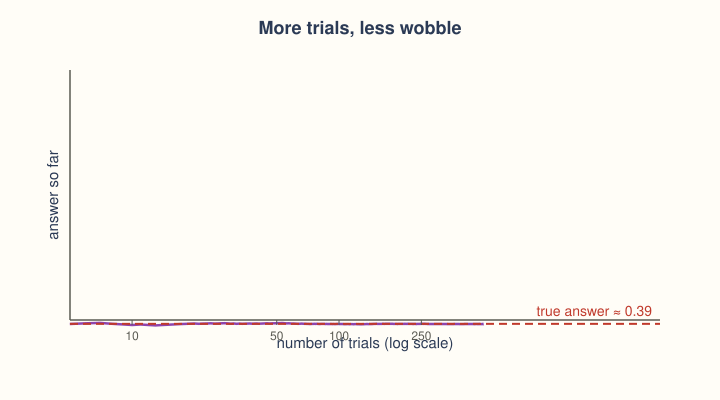
The purple line is the running answer as trials accumulate; the red dashed line is the long-run truth (about 0.38). Early estimates are wild because one trip is 10% of the whole sample at ten trials. At a thousand trials, one trip barely moves the needle.
This pattern has a name: convergence. Simulation does not remove uncertainty — it shrinks it in a predictable way.
8.6. One more idea: let the report tell you when to stop
Open Final Results after any run and find the summary table. The last column of the statistics block is SEM — standard error of the mean. Read it as the size of your remaining doubt:
Answer ≈ Mean, plus or minus about 2 × SEM.
For a proportion like reliability, SEM ≈ √(p(1−p)/n), where n is the number of trials. Two consequences worth memorizing:
-
4× more trials → 2× smaller error. Precision costs square law rent: the last decimal place is always the most expensive.
-
Decide your tolerance first. "I need reliability within ±0.02" sets n for you; do not guess it.
|
Tip
|
A good habit: run small, look at SEM, multiply trials until 2 × SEM is inside your tolerance. For engineering decisions, ±0.03 on reliability is often plenty — your failure data itself was never that clean. |
8.7. One more warning: "±2×SEM" gets worse near the edges
The Mean ± 2×SEM interval is a normal approximation — it assumes the estimate’s own uncertainty looks like a bell curve. That is a fine assumption when the answer is somewhere in the comfortable middle, say 0.3 to 0.7. It quietly breaks down near 0 or 1 — exactly where a "99.98% availability" target lives. Chasing a rare event (a four-nines target is really asking the simulator to pin down a probability near 10⁻⁴) needs dramatically more trials than chasing an ordinary one: halving the target unavailability roughly doubles the trials needed for the same relative precision. The Formulas quick reference has the trial counts by target; the data centre in the book’s capstone runs straight into this problem.
8.8. Check yourself
1 |
You double your trials from 400 to 1600. What happens to the SEM? |
2 |
Same model, same file, run twice: why are the outputs identical? |
3 |
Your result is 0.75 with SEM 0.01. State your confidence interval. |
Answers
-
It halves. SEM shrinks with the square root of trials: 4× trials, 2× error.
-
The dice are seeded generators: the same seed replays the same sequence, so the run is exactly repeatable.
-
0.75 ± 0.02, that is, roughly 0.73 to 0.77.
8.9. Using every core
More trials cost time, and a modern computer has several processor cores. Run uses them: with Animate off it runs at full speed in the background, splitting the trials across the cores shown in the Cores box beside it on the Simulate tab ("8 of 8": automatic uses them all). The same count is in the status bar and in the Run panel’s ready line.
If the computer is needed for something else while a long run is going, lower the Cores field in the Run panel: the run carries on, on fewer cores, within a run or two, and the numbers are the same. Raise it again, up to the number it started with, to spread out once more.
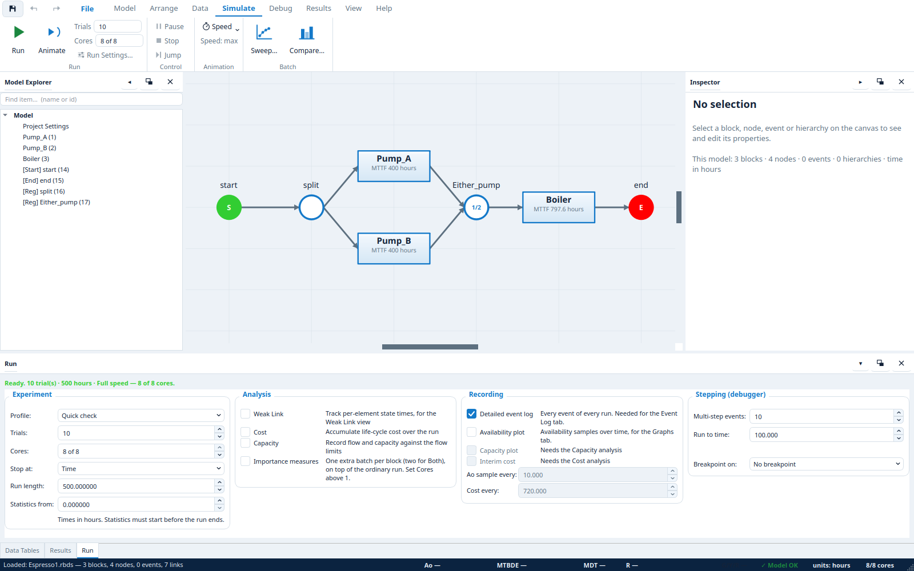
Animate is the other way to run: one core, every event drawn on the diagram as it happens. Its numbers are the exact sequence Raptor 7 produces. A full-speed run gives each slice of trials its own fresh dice, so its numbers differ slightly from the one-core run, but they are statistically the same answer, and the same on any machine whatever the Cores setting. To repeat a result exactly, run it the same way again.
8.10. Asking "what if?": Sweep and Compare
Two buttons in Simulate ▸ Batch run the model many times at full speed, on a copy (the open model is never changed):
-
Sweep changes one number over a range — a block’s MTBF, a rate, how many paths a k-of-n node needs — runs the model at each value and plots the result with its ±2×SEM band. Sweep a rate to move every block that uses it at once.
-
Compare runs this model beside other model files with the same number of trials, and puts the results side by side with the best value in each row in bold.
Both show the trials and cores they will use before you press Run, and both export a CSV.
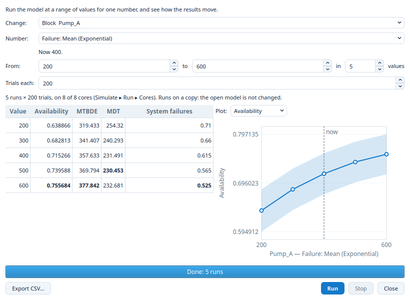
8.11. Exercise
Take Espresso1.rbds. Your boss needs season-survival probability to
±0.02. Start at 25 trials and grow the count until 2 × SEM ≤ 0.02.
Record how many trials it took. Compare with a classmate: did you both
land near the same count?
Answer
Expect a few hundred trials — typically 300–600. Different people stop at slightly different counts; both answers sit inside ±0.02 of the same truth (about 0.37).
8.12. What you learned
-
Seeded generators give exact repeatability plus fresh dice per trial.
-
Estimates converge; error shrinks with the square root of trials.
-
SEM converts "looks stable" into "known to ±this much".
-
Run uses every core; Animate is the one-core run you watch; Sweep and Compare ask "what if?" at full speed.
You now have the core toolkit: structure (Chapter 2, Your First Model: The Camping Lantern–Chapter 5, Voting: A Drone That Survives Losing Motors), failure physics (Chapter 6, Distributions: Same Average, Different Luck), repair economics (Chapter 7, Repair: The Vending Machine That Keeps Getting Up), and statistical honesty (this chapter). The next chapters put that toolkit to work on logistics, standby, maintenance, and whole systems.
9. Transients: The Honeymoon Every New Machine Gets
Time: about 25 minutes. New ideas: startup transients, steady-state behaviour, delayed statistics gathering.
9.1. You will learn
-
Why every simulation starts with a hidden, optimistic bias.
-
How to tell a "new machine" number from a "steady state" number.
-
How to discard the honeymoon and measure what a system is really like once it has settled in.
9.2. You need
-
Chapter 2, Your First Model: The Camping Lantern through Chapter 8, How Many Trials? Trusting Your Numbers finished.
-
The file
models/Laundromat1.rbds.
9.3. The story
Every model in this book so far has started the same way: at t = 0, every part is brand new. That is not a modelling choice you made — it is the simulator’s own default, and it is not always true to life. A laundromat’s washing machine, fresh out of the crate, is not a fair stand-in for the same machine three years into daily service. If you only ever simulate short missions, you are quietly asking "how good is this thing when it’s new?" — even when the question you meant to ask was "how good is this thing, most of the time, for years to come?"
9.4. One new idea: the startup transient
Open models/Laundromat1.rbds. One block, Washer, Weibull wear-out
(shape 2.5, scale 200 hours), repaired in about 12 hours when it
breaks. The file ships set to a 200-hour mission — one wear cycle,
roughly the kind of mission length Chapter 2, Your First Model: The Camping Lantern through
Chapter 8, How Many Trials? Trusting Your Numbers have all used. Press F5 at 200 trials.
| Measure | This 200-hour run |
|---|---|
Availability |
about 0.96 |
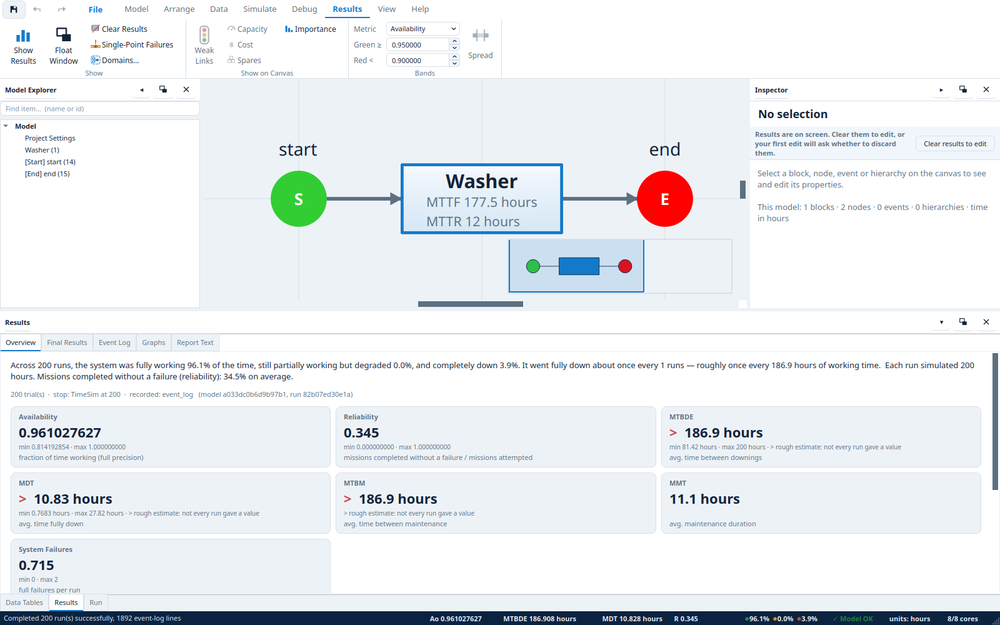
That number is not wrong. It is answering a real question: "how does a fresh washer perform over its first 200 hours?" But every one of those 200 trials started the same way — brand new, zero wear, zero chance yet to have failed even once. This early-life advantage is called a startup transient: a real, measurable bias toward optimism that fades only once a system has lived through enough of its own history to behave like itself, not like a showroom model.
|
Tip
|
A startup transient is not a modelling mistake — it is simulation theory, the same way sampling noise in Chapter 8, How Many Trials? Trusting Your Numbers is not a mistake. Every simulator that starts "as good as new" carries this bias; the question is only whether your mission length is short enough for it to matter. |
9.5. Find the steady state
Open Project Settings. Stretch the mission from 200 to 2200 hours — long enough that the first 200 "new machine" hours become a small fraction of the whole — and run 200 trials again.
| Measure | 200 h (naive) |
|---|---|
2200 h (full run) |
Availability |
about 0.96 |
about 0.94 |
The number moved. Not because anything about the washer changed — the same dice, the same wear curve — but because a longer run dilutes the honeymoon with a much larger stretch of ordinary, already-broken-in behaviour. This is the system settling into its steady state: the behaviour it actually has, most of the time, once "new" has worn off.
9.6. One more idea: delayed statistics gathering
Stretching the mission and eyeballing the drift works, but it mixes the honeymoon back in — it is diluted, not gone. RAPTOR Studio has a sharper tool: Statistics start time, in the same Project Settings dialog. Set it to 2000 hours (keep the mission at 2200) and run again:
| Measure | 200 h (naive) |
|---|---|
2200 h, delayed to 2000 h |
Availability |
about 0.96 |
about 0.94 |
Watch the event log for the moment it happens:
1903.428623 System State_change Green system_change_status 2000.000000 Started Gathering Statistics 2058.425471 Block Washer Failed Operating_time=154.996848
At exactly t = 2000, every counter in the report — Availability,
MTBDE, MDT, all of it — zeroes out and starts over, mid-run, with the
washer already mid-life. The final report reads as if the mission
began at 2000 hours, in whatever state the system had already
reached by then. Everything from 0 to 2000 hours ran, and mattered —
it is why the washer is mid-life at the reset — but none of it is
counted.
|
Note
|
Naive and delayed-stats gave nearly the same number here (about 0.94 either way) because 2200 hours is already long enough to mostly dilute a 200-hour honeymoon on its own. The gap would be far starker on a shorter total run — try 400 hours total with statistics starting at 200, and compare. Delayed-stats gathering does not depend on the total mission being long enough to dilute the bias; it removes it outright, however long the honeymoon actually is. |
9.7. Check yourself
1 |
Why is the 200-hour, brand-new-washer number not a wrong answer — just an answer to a different question than "steady state"? |
2 |
What happens to every report counter at the instant Statistics start time is reached? |
3 |
A colleague proposes fixing the bias by just running 10x more trials at 200 hours each. Would that remove the startup transient? Why or why not? |
Answers
-
It answers a real question — "how good is a fresh washer over its first 200 hours?" — honestly. It is only the wrong number if the question you actually meant was about long-term, steady-state behaviour instead.
-
Every monitored counter (Availability, MTBDE, MDT, and the rest) zeroes out and restarts from that instant, using the system’s CURRENT state as the new starting point — the time before the reset still happened and still shaped that current state, it is just no longer counted.
-
No. More trials at the same 200-hour length gives a tighter estimate of the same biased "new machine" number — narrower error bars around the wrong target, not a shift toward the true steady-state figure. Only a longer mission, or Statistics start time, removes the bias itself.
9.8. Exercise
The laundromat’s owner wants to quote new customers a number: "how
reliable is this washer in its first week?" Which of this chapter’s
two numbers should go on the flyer — and which one should go in the
maintenance budget spreadsheet instead? Then verify your instinct: run
Laundromat1.rbds at its original 200-hour, zero-delay setting for
2000 trials, and compare the tightness of that estimate (its SEM)
against a 2000-trial run of the 2200-hour, 2000-hour-delayed setting.
Answer
The first-week number (about 0.96) belongs on the flyer — it is a true, honest answer to "how will this feel to a new customer." The steady-state number (about 0.94) belongs in the budget — it is what the owner should actually plan repair costs and staffing around for the long haul. The two 2000-trial SEMs come out close to each other (both a few thousandths) — running longer per trial does not cost you much precision, so there is little reason to prefer the naive setting once you know the honeymoon is there to be removed.
|
Note
|
Limits of this model
This chapter used a single wearing-out part, which makes the honeymoon easy to see and easy to explain. Real startup transients are often driven by more than part age: the manual’s own version of this lesson uses a model with spare-parts logistics, where the bigger bias is that every stockroom starts completely full and every resource starts completely available — a bias about supply, not about wear. A system with sparing (Chapter 10, Sparing: The Taco Truck’s Propane Shelf) or shared resources carries both kinds of transient at once, and this chapter’s simple single-part case does not show you the logistics half. |
9.9. What you learned
-
Every simulation starts "as good as new" by default — a real bias, not a modelling error, called a startup transient.
-
A long enough mission dilutes the bias; Statistics start time removes it outright, at whatever instant you choose.
-
Neither the "new" number nor the "steady-state" number is universally right — pick the one that matches the question you are actually asking.
Next chapter: parts that run out, and what happens when the shelf finally goes bare.
10. Sparing: The Taco Truck’s Propane Shelf
Time: about 25 minutes. New ideas: spare parts on the shelf, custom sparing, running out of spares for good.
10.1. You will learn
-
What a sparing type is.
-
How a block consumes spares from its own stock.
-
Why "out of spares" is a different kind of death.
10.2. You need
-
Chapter 2, Your First Model: The Camping Lantern through Chapter 7, Repair: The Vending Machine That Keeps Getting Up finished. Chapter 8, How Many Trials? Trusting Your Numbers helps but is not required.
-
The file
models/TacoTruck1.rbds.
10.3. The story
Your taco truck grills with propane. A tank lasts about 200 hours of service, and swapping an empty tank takes 2 hours — you carry spares, so this is no disaster.
But your shelf holds exactly 3 spare tanks. Nobody delivers to the festival grounds. When the fourth tank runs empty, the truck closes for the season. Mission: a 1000-hour season. Will the shelf last?
10.4. One new idea: the sparing type
Until now every repairable block had an invisible assumption: infinite spares. Repairs always found what they needed. RAPTOR Studio makes this explicit. Each block has a sparing setting:
| Sparing type | Meaning |
|---|---|
Infinite |
repair never wants for parts |
Custom |
the block owns a fixed pile of spares; each repair takes one |
Pooled |
several blocks share one restocked pool (Spare Pools tab) |
Resource |
repairs share a pooled crew/equipment resource, cost per use (Resources tab) |
|
Note
|
This chapter only builds Custom sparing — one block, one private shelf, no restocking — because it is the simplest case to reason about first. Pooled and Resource sparing use the Data Tables' Spare Pools and Resources tabs and are covered later. |
Open models/TacoTruck1.rbds and select Propane_Tank. In the Data
Tables or Inspector you see:
| Setting | Value |
|---|---|
Failure dist |
Exponential, mean 200 h |
Repair dist |
Fixed, 2 h |
Sparing type |
Custom |
Stock |
3 |
The second block, Grill, is ordinary: Weibull wear-out, Lognormal repair, infinite spares.
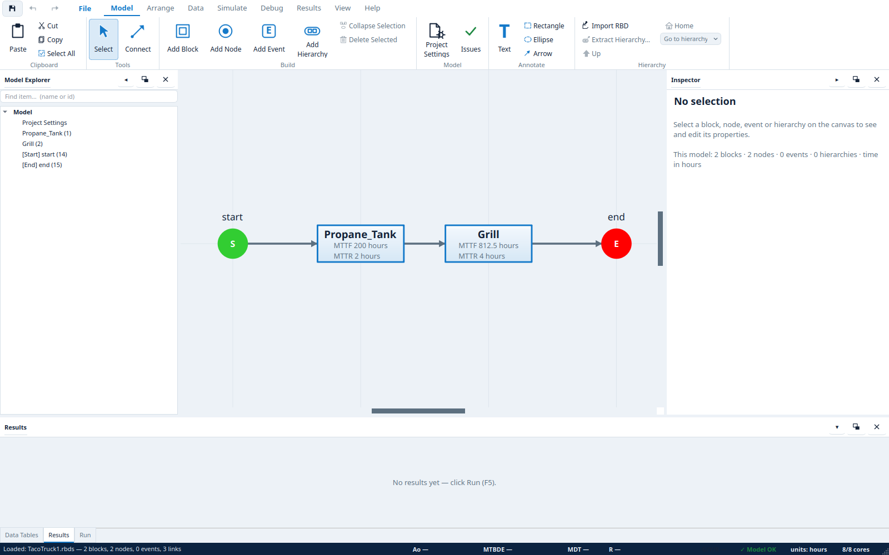
Mission settings: stop at 1000 hours, 20 trials.
10.5. Run it
Press F5. Typical results:
| Measure | Typical value |
|---|---|
System failures per run |
about 4 |
Availability |
about 0.63 |
Reliability |
0.00 |
Now read the Event Log tab for one trial. The story has three acts:
tank fails -> Repairing (a spare comes off the shelf) tank fails again -> Repairing (second spare gone) tank fails again -> Repairing (last spare gone) tank fails again -> No_spare_in_stock-Custom -> Done "No_spares"
The fourth failure is different from every failure in earlier chapters. No repair starts. The block goes Done permanently, and so does the truck. With mean tank life 200 h, four tanks last about 800 h — the truck dies in act four, somewhere near hour 800, and availability lands near 800/1000 plus small change.
|
Tip
|
"Out of spares" converts a maintenance problem into a logistics problem. The engine does not care how good your technicians are when the shelf is empty. This is why real sparing studies pair the simulation with delivery times — the Spare Pools tab’s arrival and emergency-order fields exist for exactly that. |
|
Note
|
Limits of this model
This truck’s three tanks are a private, fixed shelf — no restocking, no lead time, no competition with any other truck for the same propane supplier. Real fleets usually share a warehouse, and a bad week (a festival season, a supplier strike) can starve every truck at once — a shared-cause risk this Custom-sparing model cannot see by design. Pooled sparing (several blocks drawing from one restocked pool, mentioned above) starts to capture that; a full supply-chain study would model the restocking lead time explicitly too. |
10.6. Check yourself
1 |
A Custom-spare block has Stock = 5. How many repairs can it survive before its next failure is fatal? |
2 |
Why did reliability come out 0.00 instead of "small"? |
3 |
Which chapter-5 metric would you watch to argue for a bigger shelf? |
Answers
-
Five repairs — the sixth failure finds an empty shelf.
-
Because with mean tank life 200 h and only 4 tanks (the installed one plus Stock 3), the truck almost surely dies before hour 1000 — no trial survives, so the reliability count is exactly zero.
-
Availability — or downtime per run. The shelf size changes how long the truck runs per season, which is availability’s job; reliability stays pinned at 0 either way.
10.7. Exercise
The supplier offers a bulk deal: Stock 3 → 6. Before simulating, estimate the expected season end time by hand (four more failures × mean 200 h). Then set Stock = 6 in the Data Tables and run 100 trials. Did availability rise the way you predicted?
Answer
Hand estimate says the season should stretch to roughly (1 + 6) × 200 ≈ 1300–1400 h, past the mission end, so availability should jump toward ~0.95+. At 100 trials you should see about 0.95 with failures per run around 3–3.5 and few or no "No_spares" endings left.
10.8. What you learned
-
Sparing types say where repair parts come from.
-
Custom spares are a countdown: each repair spends one.
-
Exhaustion is permanent — a logistics failure, not a repair failure.
Next chapter: spares that are not parts on a shelf, but whole machines waiting switched-off in the dark.
11. Cold Standby: The Bakery’s Second Oven
Time: about 25 minutes. New ideas: cold standby, switch priority, the cost of waking up.
11.1. You will learn
-
What cold standby means and how it differs from parallel running.
-
How the engine picks which unit runs and which sleeps.
-
Why a switch takes time, and what that costs you.
11.2. You need
-
Chapter 2, Your First Model: The Camping Lantern through Chapter 10, Sparing: The Taco Truck’s Propane Shelf finished.
-
The file
models/Bakery1.rbds.
11.3. The story
A bakery cannot sell bread without one working oven. Running two ovens side by side would work — that is Chapter 3, Redundancy: Two Pumps Are Better Than One. But two full ovens burning all day is expensive, and both wear out twice as collectively fast.
Instead: one oven bakes, one oven waits in the cold. The standby oven does not age while it waits. When the main oven fails, the baker switches over. Waking a cold oven takes about half an hour — you cannot bake during that gap.
Mission: one 720-hour month. How often is the bakery dark?
11.4. One new idea: the cold node
Chapter 3, Redundancy: Two Pumps Are Better Than One's OR node kept both pumps running. A cold standby node keeps exactly one input running and holds the rest asleep:
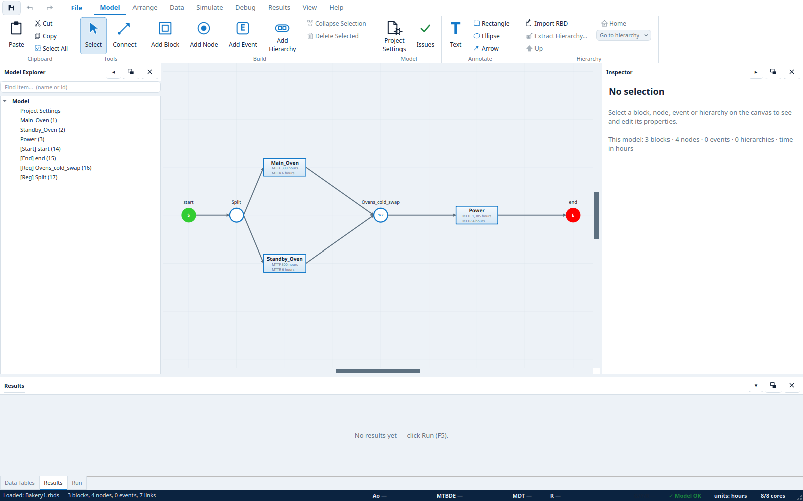
Open models/Bakery1.rbds. The pieces:
| Piece | Setting |
|---|---|
Main_Oven |
Exponential failures, mean 300 h; Lognormal repair ≈ 6 h |
Standby_Oven |
same dice as Main_Oven |
Ovens_cold_swap (node) |
need 1 of 2, Cold on, one active slot |
Link priorities |
Main_Oven priority 25, Standby_Oven priority 50 — lower number wins the active slot |
Switch time |
automatic switch after 0.5 h |
Power |
series block behind the ovens, as always |
|
Tip
|
Read "cold" literally: a sleeping machine collects no operating hours, so its failure clock stands still. That is the whole economic argument for standby over hot redundancy. |
11.5. Run it and read the story
Press F5. Then open the Event Log for trial 1. It opens like this:
0.000000 Block Standby_Oven Standby Too_many_on 180.974 Block Main_Oven Failed Operating_time=180.974304 180.974 Node Ovens_cold_swap Bad 0/2 ... 181.474 Block Standby_Oven Good Prior=Standby 185.791 Block Main_Oven Repaired
Four beats, worth naming:
-
Kickoff (hour 0). Both ovens start running; the node notices only one may, and puts Standby_Oven to sleep (
Too_many_on). -
Failure. Main_Oven dies at hour 181. The node has zero live inputs — the bakery goes red.
-
The wake-up gap. Half an hour later the standby wakes. Note its log line says
Prior=Standby: it slept, so it aged zero hours. -
Repair race. The main oven gets fixed ~5 h later and returns. Now the node has two candidates again — it keeps the running one and sends the repaired oven to the shelf.
Typical numbers at 20 trials: availability about 0.997, about 3 stoppage events per month.
|
Note
|
Compare with a hot-redundant pair of the same ovens (Chapter 3, Redundancy: Two Pumps Are Better Than One style): no wake-up gap ever, but both ovens burn hours from minute zero. Cold standby trades a short dark gap at every switchover for a much longer total service life. Which wins depends on how much a dark half hour costs your bakery. |
|
Note
|
Limits of this model
The two ovens fail independently, and the switch itself never fails — this chapter’s Cold node always succeeds at waking the standby unit within its 0.5 h. Real kitchens have shared risks a cold-standby diagram does not draw: a grease fire or a breaker trip can take out both ovens at once, and the transfer switch itself is a physical part that can jam. RAPTOR Studio can model an imperfect switch — a chance the transfer itself fails, not covered in this book — to relax the second assumption; shared physical risk to both units needs dependency modelling to relax the first. |
11.6. Check yourself
1 |
While Standby_Oven sleeps, what happens to its failure clock? |
2 |
Why did the system flash red between the failure (hour 181.0) and the wake-up (hour 181.5)? |
3 |
If both ovens had priority 25, which would run first? |
Answers
-
Nothing — a sleeping unit collects no operating hours, so its failure clock is frozen until it wakes.
-
The node had zero live inputs during the switch: the standby could not take over instantly. Those 0.5 hours are real dark time for the bakery, visible as a red blip in the timeline.
-
Tie on priority number; the engine keeps whichever input reached it first in link order — here Main_Oven, since its link was defined first. Ties are legal but sloppy; always give distinct priorities.
11.7. Exercise
Baker’s nightmare: make the switch manual instead of automatic. In
each oven→node link set AProb from 1 to 0.9, AutoTime to 0,
ManTime to 3. Now 10% of switches need the owner to drive in:
3 extra dark hours each time. Run 50 trials before and after, and
compare availability.
Answer
Availability drops noticeably — typically from ~0.997 to ~0.98–0.985 at 50 trials. Each switchover now risks a 3-hour manual drive-in, and with several failures per month those extra hours pile up fast.
11.8. What you learned
-
A cold node keeps k = 1 units running and parks the rest.
-
Link priority numbers decide who runs; ties break by order.
-
Sleeping units do not age; waking them costs a visible gap.
Next chapter: stop waiting for things to break. Service them on a schedule.
12. Preventive Maintenance: The Careful Commuter
Time: about 30 minutes. New ideas: scheduled service, refreshing the clock, the trade you actually made.
12.1. You will learn
-
What preventive maintenance (PM) means to a simulation.
-
How a PM schedule is written on a block.
-
How to compare "run it until it dies" against "service by the calendar" using real numbers.
12.2. You need
-
Chapter 2, Your First Model: The Camping Lantern through Chapter 11, Cold Standby: The Bakery’s Second Oven finished.
-
The files
models/CarCare0.rbds(no PM) andmodels/CarCare1.rbdsOpen CarCare1 in RAPTOR Studio (with PM).
12.3. The story
Your moped engine wears out. Its lifetime follows a Weibull curve with shape 2.0 and scale 800 h — that shape-2 curve is the classic "wear-out" signature from Chapter 6, Distributions: Same Average, Different Luck: unlikely to die young, increasingly likely to die old.
When it does fail, the breakdown repair is ugly: a Lognormal job averaging about 8 hours, sometimes much longer (that fat right tail again).
You have a better idea: every 400 hours, do a scheduled service. A service takes only 2 hours, and afterward the engine runs like new.
Mission: 2000 hours of commuting. Is the schedule worth it?
12.4. Two models, one question
Open CarCare0.rbds. One block, Moped_Engine, between start and end:
Failure dist |
Weibull(2.0, 800) |
Repair dist |
Lognormal, mean ≈ 8 h |
PM |
off |
Now open CarCare1.rbds and select the engine. The PM rows appear:
| Setting | Value |
|---|---|
Uses PM |
on |
PM interval |
400 h |
PM duration |
Fixed, 2 h |
PM refresh |
like new (clock resets) |
Defer PM until idle |
off |
|
Tip
|
The interval counts operating time, not wall time — same rule as the failure clock. An engine parked in winter does not need its 400-hour service while asleep. |
12.5. Run both, then argue
Run each file at 200 trials (set the run count before pressing F5).
The Overview tab summarizes a run at a glance — this one is
CarCare1.rbds at 20 trials, so its numbers wobble a little from the
200-trial figures below, exactly as Chapter 8, How Many Trials? Trusting Your Numbers predicts:
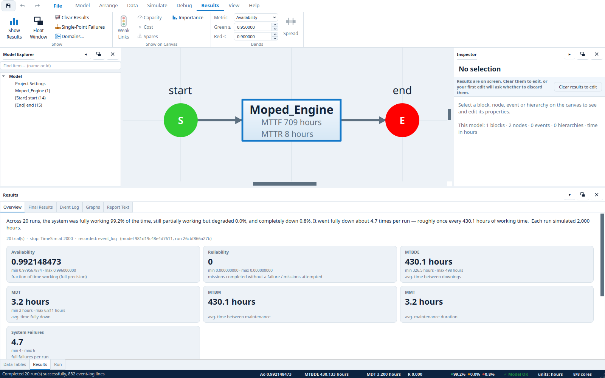
Typical results at 200 trials:
| Measure | CarCare0 (no PM) | CarCare1 (with PM) |
|---|---|---|
Availability |
about 0.990 |
about 0.992 |
Mean downtime per stop (MDT) |
about 8.1 h |
about 3.3 h |
MTBDE |
about 969 h |
about 423 h |
System failures per run |
about 2 |
about 5 |
Read those numbers like a mechanic would:
-
Availability barely moves. Both mopeds are up ~99% of the time.
-
But look at how they spend their down time. Without PM, the moped vanishes into rare multi-hour breakdowns. With PM, it visits the shop often — but each visit is a quick 2-hour service.
-
MTBDE dropped. That sounds bad! It is not: more frequent stops, most of them planned. The event log shows them plainly —
400.000 Block Moped_Engine PM_is_due Scheduled_PM 402.000 Block Moped_Engine Good PM_done
|
Note
|
This is the single most useful habit in reliability work: never judge a policy by one number. "Failures per year" went up under PM, yet the commuter’s life got better. Always pair frequency with cost per stop. |
The trade in one line: PM converts rare, long, surprise outages into frequent, short, scheduled ones.
|
Note
|
Limits of this model
This model’s PM refresh is "like new" — every 400-hour service resets the wear clock completely, as if the engine were replaced. Real servicing is rarely that perfect: a mechanic can tighten belts and change fluids without undoing every hour of wear, especially on parts the service does not touch. An imperfect PM (the block ages a little even after service) sits between "like new" and "no PM at all," and is more realistic for most mechanical parts. RAPTOR Studio’s PM either refreshes the block fully or leaves its wear untouched, with nothing in between, so a real study would need to know which side of "like new" its own maintenance program actually falls on. |
12.6. Check yourself
1 |
Why did MTBDE fall from ~969 h to ~423 h even though PM makes the engine healthier? |
2 |
PM refresh is set to "like new." What would change if the service only restored half the remaining life? |
3 |
The engine’s Weibull shape were 1.0 instead of 2.0. Would a 400-hour service still be worth 2 hours of downtime? Think before simulating. |
Answers
-
Because PM stops are frequent by design. Every 400 operating hours there is a service, so the mean time between all stops falls — but most of those stops are cheap planned ones instead of rare expensive breakdowns.
-
Failures would still cluster after long service, so breakdowns would creep back between PM visits: MDT and failure severity rise, availability gains shrink. "Like new" refresh is what makes a fixed interval safe.
-
No. Shape 1.0 means Exponential — constant risk, no aging. A service cannot reset risk that does not grow; every PM visit buys nothing and costs 2 hours. This is why PM pays on wear-out parts (shape > 1) and wastes money on chance failures.
12.7. Exercise
Tune the schedule. Try PM intervals of 300, 400, and 500 hours (100+ trials each). For each, record availability and total downtime per run. Plot downtime against interval. Where does the curve bottom out, and why does moving the interval down eventually make things worse?
Answer
Total downtime per run has a U shape. At very short intervals the moped spends all its life being serviced (2 h × many visits). At very long intervals big Lognormal breakdowns dominate. The bottom sits somewhere near 400–600 h at these settings — and the exercise’s real lesson is that the optimum exists and is findable by simulation.
12.8. What you learned
-
PM is a second clock on a block: interval, duration, refresh rule.
-
Scheduled stops are visible as their own log events.
-
The right comparison is availability plus the shape of downtime — not any single headline metric.
You now hold the full basic toolkit: series, parallel, k-of-n, all five life distributions, repairs, sparing, standby, and preventive maintenance. The next chapters move from parts to systems: shared pools, hierarchies, capacity, money, and finding your weakest link.
13. Hierarchies: The Delivery Van, Tidied Up
Time: about 25 minutes. New ideas: hierarchies (boxes inside boxes), the In/Out doors, why structure is not behaviour.
13.1. You will learn
-
What a hierarchy is and when a diagram needs one.
-
How flow crosses a hierarchy’s boundary.
-
The one rule every modeler must memorize: collapsing changes the picture, never the numbers.
13.2. You need
-
Chapter 2, Your First Model: The Camping Lantern through Chapter 12, Preventive Maintenance: The Careful Commuter finished.
-
The files
models/Van1.rbdsandmodels/VanFlat.rbds.
13.3. The story
A delivery van has an engine problem and a tire problem. Its diagram so far would be six blocks on one flat sheet: Fuel_Pump and Engine_Core in a row, then four tires voting "at least 3 of 4". Chapter 5, Voting: A Drone That Survives Losing Motors taught you the vote; this chapter is about paperwork.
Real systems do not live on one sheet. A van engineer draws the engine on one page, the chassis on another, and the whole van on a cover page. RAPTOR Studio has exactly this idea: the hierarchy, a box that hides a whole sub-diagram inside itself.
13.4. Two views of the same van
Open models/Van1.rbds. The home level is almost empty — two big
ovals and some nodes:
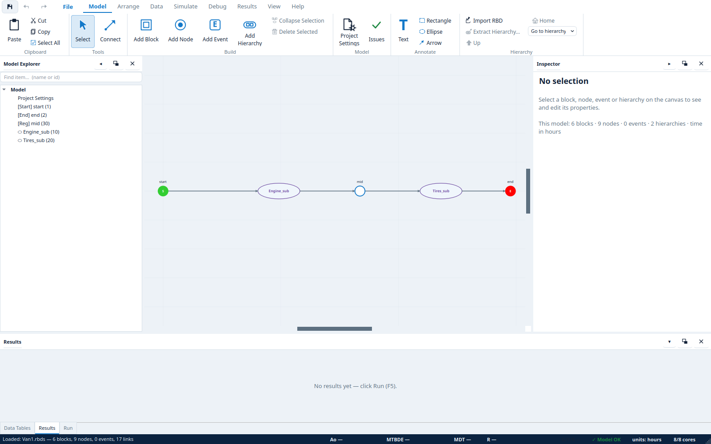
Each oval is a door into a hidden drawing. Double-click Engine_sub (or use the Model Explorer tree) to descend:
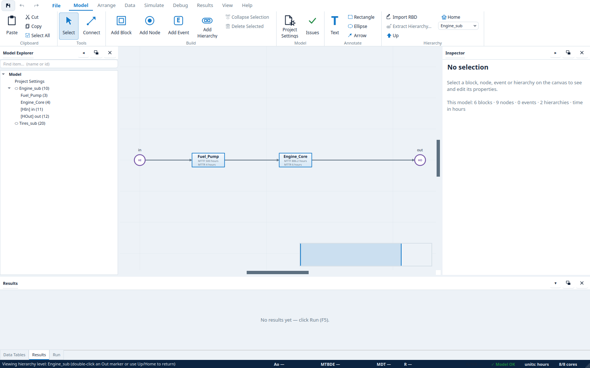
Inside lives a plain series chain you could have drawn in Chapter 2, Your First Model: The Camping Lantern. Climb back out (double-click the Out marker or the Up button) and descend into Tires_sub instead:
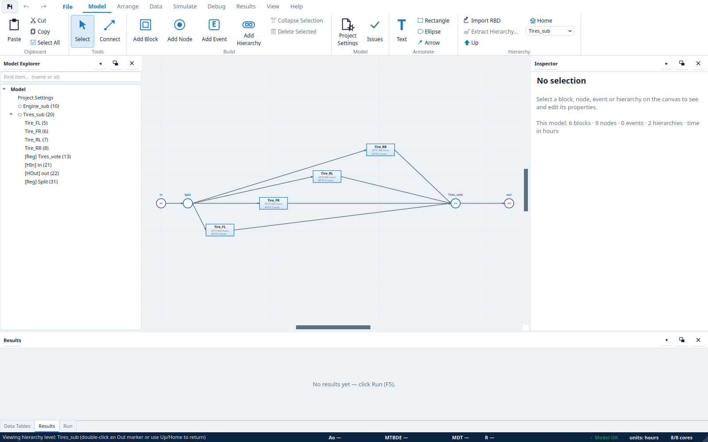
The four tires fan out from the In marker and rejoin at a vote node — Chapter 5, Voting: A Drone That Survives Losing Motors's k-of-n, wearing overalls.
|
Tip
|
Every hierarchy has two special markers. In is the door where flow enters; Out is where it leaves. Anything between them is invisible from outside — the parent diagram only sees one oval. |
The oval itself has two readings. Its body colour is the hierarchy’s own status: green when nothing is lost, yellow when it still works but something inside has failed, red when the subsystem is down, plus blue for standby, brown for idle and orange for preventive maintenance. The two downward triangles in the middle are Raptor’s Descendant Status Indicator (DSI): the worst status of the hierarchies inside this one. Green body with a yellow or red DSI means this subsystem still works but something deeper is degraded or down; a red body means the subsystem itself is down. The name sits inside the oval at rest; while a run is animated, stepped or shown with its triangles, it moves under the oval, as in Raptor, so the triangles keep the middle of the body to themselves.
While you animate or step a run, both are live. After an ordinary run (with Weak Link analysis on), the triangles show the share of time, over every run, that the inside was working, partly failed, on standby or down. Point at the oval and it says which.
13.5. The experiment that proves the point
Here is the claim worth testing: the hierarchy changed nothing
physical. VanFlat.rbds is the same six blocks with no ovals at all.
Run both files at 200 trials:
| Measure | Van1 (hierarchical) | VanFlat (flat) |
|---|---|---|
Availability |
about 0.987 |
about 0.987 |
MTBDE |
about 421 h |
about 421 h |
MDT |
about 4.6 h |
about 4.6 h |
Identical — digit for digit. The engine does not know an oval from a straight line. A hierarchy is pure organisation: it exists so a human can draw, read, and reuse big diagrams without a wall-sized sheet.
So when does a real study need them?
-
The diagram has more than a screenful of blocks.
-
Whole subsystems repeat (four wheels, each its own brake-and-tire group — draw once, place four ovals).
-
Different teams own different parts and want their own page.
|
Note
|
Collapsing and uncollapsing are safe because they preserve results. That is also why they are dangerous nowhere else: if someone tells you a subsystem was "simplified during collapse", ask for both runs' numbers. They must match. |
|
Note
|
Limits of this model
Van1 and VanFlat matched digit for digit because nothing in this van needs anything more than a block to die for the system to notice — and block deaths do cross a hierarchy boundary cleanly. A node going Bad (a lost vote, a stalled switchover) is a different story: that status change does not propagate out through a hierarchy’s Out marker the way a block failure does. Keep any vote or switch logic you care about, and the parts that react to it, on the same hierarchy level — splitting them across a boundary is a real engine limit, not just a drawing choice. |
13.6. Checking one part on its own
|
Note
|
This section is about running one hierarchy on its own. Its results are labelled as an isolated run everywhere they appear, and are never presented as whole-model results. To see a hierarchy’s figures inside the whole model, run the whole model and read the weak-link results. |
When you are building a big model one part at a time, you often want to know how just the tires behave before the rest of the van exists. Pick the hierarchy (the Model Explorer or the canvas), choose Extract Hierarchy… on the Model ribbon, and RAPTOR Studio builds a small standalone model: the hierarchy’s contents become the whole diagram, its In door becomes the Start and its Out door the End. You can run it, save it. From the command line the same thing is:
raptor extract Van1.rbds --hierarchy Tires_sub -o tires.rbd
raptor run Van1.rbds --hierarchy Tires_subWhat the input means. The extract assumes the hierarchy’s input is always available. Anything upstream of the door is outside and ignored, and every result says so.
What is lost at the boundary. Some things inside a hierarchy are tied to things outside it. RAPTOR Studio scans for three kinds, tells you which it found, and lets you pick what to do about each:
| Kind | What it is | Choices (the first is the default) |
|---|---|---|
Outside dependencies |
A block inside follows a block, node, event or hierarchy outside, or follows the whole system. |
|
Shared pools and resources |
A spare pool or resource used by blocks inside and outside. |
|
Random-number streams |
Blocks inside draw from a stream that blocks outside also use. This is the normal case: most blocks use the shared system stream. |
|
|
Important
|
No choice can make an isolated run reproduce the numbers the hierarchy produced inside the whole model. Shared streams are consumed in model-wide event order, and that order is gone once the rest is removed; the results differ by statistical noise, never by a bias you cannot explain. An "always down" choice is deliberately not offered: a block that is permanently idle or failed is never what someone checking a part of a model wants. |
Costs, weak-link and capacity results describe the extract only. A model that ends after N system failures (or N phase cycles) now counts the hierarchy’s failures, not the system’s. If the hierarchy is itself phased, its own Cut or Linked phases are ignored in the isolated run, and you are warned.
13.7. Check yourself
1 |
A hierarchy’s Out marker fails like a block. What happens to the parent diagram? |
2 |
In VanFlat the tires' vote sits directly in the main flow. Where did it go in Van1? |
3 |
You move a repairable block from inside a hierarchy to the top level without touching its dice. Which numbers change? |
Answers
-
Nothing directly — but if flow can no longer pass through the hierarchy (its interior cannot reach the Out marker), the parent loses that path exactly as if an ordinary block had died. The oval is only a window; failures inside are what matter.
-
Nowhere visible from the home level — it lives inside Tires_sub, behind the In/Out doors. The parent shows one oval where the flat model shows four blocks and a node.
-
None. Same dice in the same streams give the same event log; availability, MTBDE, MDT all stay put. Only the picture changes — which is exactly the chapter’s point.
13.8. Exercise
Give the van a spare wheel. Inside Tires_sub, add a fifth block
Tire_Spare (Exponential, mean 800 h, Fixed 2 h repair) feeding the
same vote node, and raise the vote to n = 5 while keeping k = 3.
Before running: does availability rise or fall? Then run 100 trials
and compare against the table above.
|
Note
|
Adding an element into a hierarchy is the one placement task with a
trick to it, so here is the whole sequence. The hierarchy’s id is the
number after the colon in its name in the Model Explorer tree
(
The same three things are what an assistant needs, and they are the
fiddly part: |
Answer
Availability rises. With five tires and "need 3", the van tolerates two flat tires instead of one; expected availability climbs from about 0.987 toward roughly 0.99+ at 100 trials. The spare wheel is cheap insurance because the vote still forgives two losses.
13.9. What you learned
-
A hierarchy is a named box hiding a sub-diagram behind In/Out doors.
-
Descending and ascending are navigation, never simulation changes.
-
Structure and behaviour are independent: flattening must reproduce every number exactly.
Next chapter: make the pipes matter — capacity, flow limits, and what happens when a surviving part simply cannot carry the load alone.
14. Capacity: The Thirsty Town
Time: about 30 minutes. New ideas: flow and demand, nominal vs. maximum pipe size, lost flow, why availability can look perfect while the system is quietly failing.
14.1. You will learn
-
How capacity analysis differs from the up/down world of earlier chapters.
-
What nominal and maximum flow mean on a link, and how the engine fills them.
-
The number availability cannot see: lost flow.
14.2. You need
-
Chapter 2, Your First Model: The Camping Lantern through Chapter 13, Hierarchies: The Delivery Van, Tidied Up finished.
-
The file
models/Water1.rbds.
14.3. The story
A small town drinks 180 megalitres of water per hour, pumped through three pipes from the wells to the manifold. Heat wave: the demand is more than any two pipes can carry. The pipes themselves almost never break — but pipes have sizes, and sizes are numbers, and numbers can be compared with thirst.
This is a new kind of question. Until now a part was alive or dead. Now we ask: how much gets through?
14.4. Two numbers per pipe
Open the model. Three pumps fan out from start, meet at the Manifold, and flow on to end:
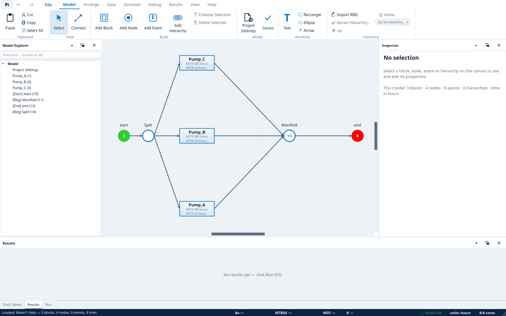
Each pipe (the link from its pump into the Manifold) carries two numbers:
-
Nominal flow — what the pipe is meant to carry in normal service. The town’s pipes are rated 30, 30, and 50.
-
Max flow — the hard ceiling in an emergency. Here 50, 60, and 80. All three ceilings together: 190 — barely more than the town’s 180.
The engine fills every pipe to its nominal first. If demand is still unmet, the leftover is spilled into the pipes' headroom, best pipe first, until the ceilings are reached or the thirst is quenched. Whatever thirst remains is lost flow — and lost flow is money (Chapter 15, Cost: The Bill Arrives will bill for it).
|
Note
|
Capacity lives on links, not on blocks. A pump that is down simply
makes its pipe unusable; the pipe’s size is a property of the
connection. In the |
14.5. Open the model
Load models/Water1.rbds. In Model → Project Settings notice
two settings that were never there before:
-
Flow generated: 180 — the demand, offered at the start every hour.
-
Capacity analysis: checked — tells the engine to track flow, not just up/down.
14.6. Run it
Run 200 trials of the 8760-hour mission (one year). The summary still opens with the old friends:
| Measure | Result |
|---|---|
Availability |
about 0.9999 |
Reliability |
about 0.94 |
Units produced |
about 1 514 000 |
Mean flow |
about 173 of 180 |
Availability looks perfect — and that is exactly the trap. The system is "up" whenever any path from start to end exists; with three pumps, that is nearly always. Meanwhile the town lost about 63 000 megalitres over the year — roughly one day in twenty, drained away into yellow time that availability cannot see.
The new Capacity section of the end-of-run report tells the real story. The system’s maximum deliverable flow is 190 when all pumps run. Watch what one failure costs, straight from the run-1 log:
| Event | Flow now | Lost per hour |
|---|---|---|
All pumps up |
180 |
0 |
Pump_A down |
140 |
40 |
Pump_B down |
130 |
50 |
Pump_C down |
110 |
70 |
The biggest pipe causes the biggest thirst when it dies. Sizing redundancy by "any two cover it" hides this: 140, 130, 110 all sound fine until you remember the town wants 180 every single hour.
|
Tip
|
The health bar now earns its keep: yellow means "delivering, but short". Over the year the model sits in yellow about 13% of the time and in red essentially never (about 0.007% — all three pumps down at once). If your study only counts red, it misses the entire drought. |
|
Note
|
Limits of this model
Flow in this model is instantaneous and has no memory: the moment Pump_A dies, the town immediately gets less water, and the moment it is fixed, full flow is immediately restored. Real water systems have a reservoir that buffers a short outage, and pumps that take minutes to ramp back to full pressure rather than switching on like a light. A town with real storage would lose noticeably less than this model’s 63 000 megalitres; a model built to size that storage would need to add it explicitly — capacity analysis here answers "what got through the pipes this instant," not "what’s in the tank." |
14.7. Check yourself
1 |
The year’s availability is 0.9999. Why is this number nearly useless for the water company? |
2 |
Demand is 180 and the three ceilings sum to 190. Why does the model still lose water in a year when nothing fails twice? |
3 |
Nominal flow is 30 on Pump_A’s pipe and its ceiling is 50. When does the extra 20 get used? |
Answers
-
Because the town is almost never down — a path from wells to manifold exists even with a pump out, so the red-light measure stays at 0.9999 while the water company is quietly shorted by about 4%. Availability counts stoppages; capacity analysis counts thirst.
-
The 190 total is the sum of the ceilings, but demand is offered continuously: whenever one pump is down (about 13% of the year collectively), the survivors' ceilings of 130–140 sit far below the 180 wanted. Each single outage spills 40–70 units per hour, and those hours add up to the ~63 000 lost over the year.
-
During the spill phase. Every pipe is first filled to its nominal (30); only after all nominals are satisfied does the leftover demand flow into Pump_A’s headroom up to its ceiling of 50.
14.8. Exercise
The council upsizes Pump_C’s pipe: nominal 60, max 100 (edit the
nomFlow/MaxFlow columns of that link in Water1.rbds, or ask for
the updated file). Before running: predict the new lost-per-hour when
each single pump is down. Then run and check. Which pump’s failure
hurts most now — and is the answer still the biggest pipe?
Answer
With Pump_C’s pipe at nominal 60 / max 100, the ceilings are 50 + 60 + 100 = 210. One pump down: Pump_A out → 60 + 100 = 160 (lose 20); Pump_B out → 50 + 100 = 150 (lose 30); Pump_C out → 50 + 60 = 110 (lose 70). The biggest pipe still hurts most — upsizing a dominant pipe does nothing for the case when it fails.
14.9. What you learned
-
Capacity analysis tracks how much flows, not just whether the path exists.
-
Links carry nominal (soft target) and max (hard ceiling) flow; nominal fills first, leftovers spill to the ceiling.
-
Lost flow is the drought availability cannot see — a system can score 0.9999 and still short the town by four percent.
Next chapter: put a price tag on every failure, every repair, and every lost megalitre.
15. Cost: The Bill Arrives
Time: about 30 minutes. New ideas: cost analysis, purchase vs. operating cost, the price of lost flow, reading the COST report.
15.1. You will learn
-
What the engine bills for: repairs, downtime, and (with Chapter 14, Capacity: The Thirsty Town) every lost megalitre.
-
How the COST section is organised — Operating, Life_cycle_cost, Cost_Summary, Grand_Total.
-
Why the biggest line item is usually one you never budgeted.
15.2. You need
-
Chapter 2, Your First Model: The Camping Lantern through Chapter 14, Capacity: The Thirsty Town finished.
-
The files
models/Water2.rbds(the water utility, now with a bill).
15.3. The story
The pumps held, the pipes held — and then the invoice from reality arrived. Every pump repair sends a crew (money per hour) and a callout fee. Every hour the town is completely dry, the utility trucks in emergency water. And every megalitre that never made it through the pipes — the yellow-time shortfall of Chapter 14, Capacity: The Thirsty Town — has a price too.
Simulation already knew about all of it. Cost analysis just adds up the arithmetic.
15.4. Three places money lives
Open models/Water2.rbds and choose Model → Project Settings:
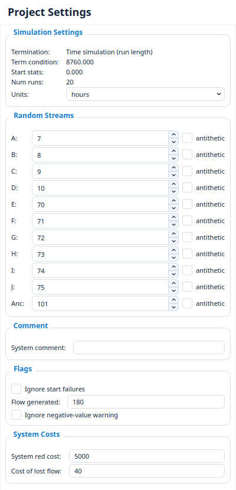
Money is configured in three places:
-
Per block — each pump carries its own price tag: 40 000 to buy, a 2 000 callout per repair, and 100 per repair-hour of crew time. (These live on the block’s row in the
.rbdsfile — fourteen cost fields covering purchase, running, repair, PM, and spares.) -
System red cost: 5 000 per hour — the emergency-trucking bill while the whole town is dry.
-
Cost of lost flow: 40 per megalitre — Chapter 14, Capacity: The Thirsty Town's shortfall, now with a price.
|
Note
|
Cost analysis and capacity analysis are independent switches. With cost on but capacity off, you still get repair and downtime bills — there is simply no lost-flow line, because nothing is being lost. |
15.5. Run it
Run 200 trials of the 8760-hour mission. The end-of-run report grows a COST section. For one typical run:
| Cost section row | This run |
|---|---|
Operating → Repair totals |
about 180 000 |
Life_cycle_cost → Purchase |
120 000 |
Cost_Summary → SystemLostFlowCost |
about 2 200 000 |
Cost_Summary → SystemDownCost |
0.00 |
Grand_Total |
about 2 400 000 |
Averaged over the year of 200 trials:
| Where the money goes | Per year |
|---|---|
Lost water (40 × shortfall) |
about 2 500 000 |
Pump repairs (callout + crew) |
about 215 000 |
Pumps themselves (bought once) |
120 000 |
Grand total |
about 2 900 000 |
Read that table twice. The three pumps — bought, crewed, called out — cost about 335 000 a year. The water the town never received costs 2 500 000. The failure bill is not the repair bill; it is the shortfall bill, and it is seven times larger.
|
Tip
|
SystemDownCost is zero here because the town is almost never fully dry (Chapter 14, Capacity: The Thirsty Town: red about 0.007% of the year). If your cost report shows a fat SystemDownCost row, your problem is stoppages; if it shows a fat SystemLostFlowCost row, your problem is size — and no repair crew on earth can fix size. |
|
Note
|
Limits of this model
Every price in this model is a flat, unchanging number: a repair costs the same in year one and year ten, and a dollar today is worth exactly one dollar next year. Real budgeting cares about when money moves — a dollar spent buying reliability today is worth more than a dollar saved on downtime a decade out, once you discount for inflation and the time value of money. This engine happily totals costs across any mission length you set, but it will not discount them for you; a multi-year business case built on these numbers needs that layer added by hand afterward. |
15.6. Check yourself
1 |
Why does the Repair column differ from the callout fee times the number of failures? |
2 |
The utility doubles the price of water to 80 per megalitre. Which report rows change, and which stay put? |
3 |
Purchase cost appears once in Life_cycle_cost but the mission is one year. What happens to its share of Grand_Total on a ten-year study? |
Answers
-
The Repair column bills the whole visit: the 2 000 callout plus the crew’s 100 per hour for a 24-hour fix — 4 400 per failure, times roughly sixteen failures per pump per year.
-
Only SystemLostFlowCost doubles (and Grand_Total follows). Repair, Purchase, and SystemDownCost stay put: the physics did not change, only the price tag attached to the shortfall.
-
Purchase is charged once at the start of each run, so it stays 120 000 while ten years of repair and shortfall bills stack up around it. Its share of Grand_Total shrinks — one reason long studies make durable equipment look good.
15.7. Exercise
Chapter 14, Capacity: The Thirsty Town's exercise upsized Pump_C’s pipe to nominal 60 / max 100.
Do it again on Water2.rbds (edit that link’s nomFlow/MaxFlow in
the file), run 100 trials, and compare grand totals. Estimate the
yearly saving, then answer: if the bigger pipe costs 250 000 to
install, how soon does it pay for itself?
Answer
The upsize cuts the shortfall from about 63 000 to about 50 000 megalitres a year, so the lost-water bill drops from about 2.5 M to about 2.0 M — a saving near 500 000 per year. A 250 000 pipe pays for itself in about six months. (Your trial-to-trial numbers will wander; the saving is far larger than the noise.)
15.8. What you learned
-
Cost analysis sums three streams: per-block costs, red-hour costs, and lost-flow costs.
-
The COST section reads top to bottom: per-block Operating, then Life_cycle_cost, then Cost_Summary and Grand_Total.
-
The dominant cost is often the invisible one — flow that never arrived.
Next: put series, sparing, PM, and cost together on one production line, then find the part that deserves your money — the weak link.
16. Capstone: The Line That Paid for Its Spares
Time: about 40 minutes. New ideas: finding your own weak links on a pure series chain, the RSO switch that turns "has spares" into "has a spares plan," and reading a cost comparison instead of an availability comparison.
16.1. You will learn
-
Why a pure series chain collapses ch13’s frequency table and importance table into one — and how to use that shortcut.
-
What "Routine Spare Ordering" actually does, and why Chapter 10, Sparing: The Taco Truck’s Propane Shelf's Taco Truck never got to show you the other half of it.
-
How to ask "did this investment pay for itself," using a real Grand_Total, not just an Availability number.
16.2. You need
-
Chapter 2, Your First Model: The Camping Lantern through Chapter 15, Cost: The Bill Arrives finished — this chapter leans on series links, Weibull wear-out (Chapter 6, Distributions: Same Average, Different Luck), Custom sparing (Chapter 10, Sparing: The Taco Truck’s Propane Shelf), preventive maintenance (Chapter 12, Preventive Maintenance: The Careful Commuter), and cost analysis (Chapter 15, Cost: The Bill Arrives).
-
The files
models/ProdLine0.rbds(as commissioned) andmodels/ProdLine1.rbds(after the ops review).
16.3. The story
A bottling line: rinse, fill, cap, inspect the cap, label, date-code, form the carton, pack the case, seal it, inspect it, palletize, wrap, ship. Fourteen stations, bolted together in one straight chain. Chapter 2, Your First Model: The Camping Lantern's oldest rule, scaled up fourteen times: one broken link and the whole line stops.
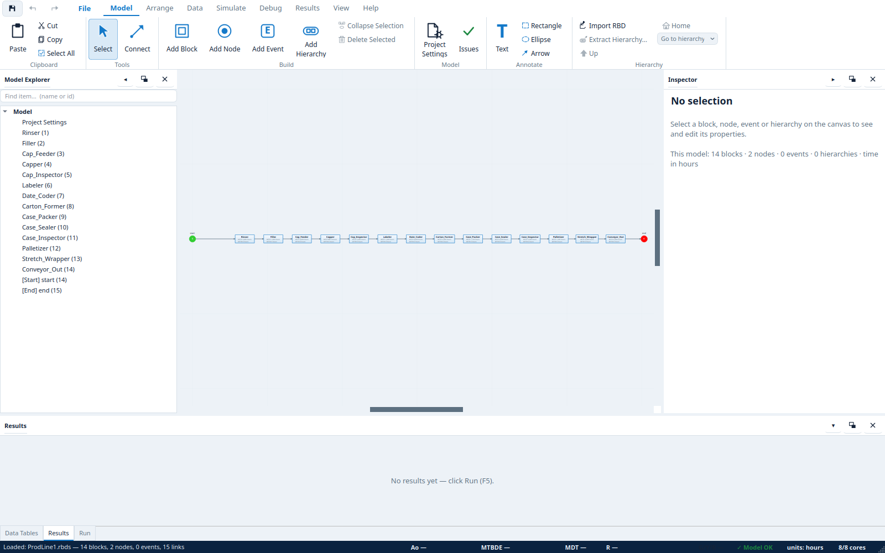
The plant manager has a budget question, not an engineering one: the line carries a modest spares shelf and a maintenance contract that together cost real money every year. Is any of it worth what it costs?
16.4. Find your own weak link
Open models/ProdLine0.rbds — the line exactly as it was commissioned,
no changes yet. This time nobody hands you a blame table the way
Chapter 17, Weak Links: Blame the Right Part will. Work it out yourself, and notice why it is
easier here than it will be there: this line is pure series, with no
vote to forgive anything. On a system like that, "how often does a
part fail" and "how much does its failure hurt" are the same
number — every failure, anywhere, stops the whole line. Chapter 17, Weak Links: Blame the Right Part
needs two separate tables because VanFlat’s tires fail constantly but
mean almost nothing; this line has no tires. One table is enough.
Run 200 trials, open Data Tables → Sparing, and read
Spares_Utilization’s `AveUsed column — for a block still on
Infinite sparing, it is simply a per-run failure count. Three stations
stand well clear of the rest:
| Station | Failures per run |
|---|---|
Capper |
about 9.1 |
Filler |
about 7.6 |
Case_Packer |
about 7.0 |
Every other station sits under 3. All three leaders share the same
signature — a Weibull curve with shape well above 1, Chapter 6, Distributions: Same Average, Different Luck's
wear-out shape. That is not a coincidence you need statistics to see;
it is the whole reason ProdLine1 only ever touches these three
stations.
16.5. One new idea: RSO turns "has spares" into "has a plan"
Chapter 10, Sparing: The Taco Truck’s Propane Shelf's Taco Truck kept three propane tanks on a shelf that
nobody ever restocked — when the fourth failure came, the truck closed
for the season. That chapter’s whole point was showing you what
happens without a resupply plan. Open ProdLine0.rbds and select
Filler: it is Custom-spared, stock 3, exactly like Propane_Tank,
right down to the field that made the truck’s ending permanent —
RSO=0, no routine spare ordering. Capper carries the same setup,
stock 2.
Now open ProdLine1.rbds and select the same block:
| Setting | ProdLine0 | ProdLine1 |
|---|---|---|
Sparing type |
Custom |
Custom |
Stock |
3 |
3 |
Routine Spare Ordering (RSO) |
off |
on |
Resupply interval |
— |
every 720 h (30 days) |
Emergency Spare Ordering (ESO) |
off |
on |
Emergency lead time |
— |
48 h |
RSO=1 turns the shelf into a standing purchase order: a fresh tank
arrives every 30 days whether or not one was used, and if the shelf
ever actually runs dry anyway, an emergency shipment lands in 48
hours instead of never arriving at all. Case_Packer gets the third
piece of the review: scheduled PM every 600 hours
(Chapter 12, Preventive Maintenance: The Careful Commuter's pattern exactly), refreshing it before its Weibull clock
ever gets the chance to wear it out.
No other station changes between the two files.
16.6. Run both
Run 200 trials of the 8 760-hour year on each file:
| Measure | ProdLine0 | ProdLine1 |
|---|---|---|
Availability |
about 93.5% |
about 96.5% |
MDT |
about 11.4 h |
about 5.3 h |
System failures per run |
about 50 |
about 59 |

Read that middle row carefully before the cost table: failures per run went up after the fix, not down. A line that is actually running is a line that can fail again; a line stuck dead on its fourth Capper failure, like ProdLine0 spends real time being, cannot rack up a fifth. Count alone would tell you the wrong story — MDT is the number that says each of those failures now costs less than half as much time.
Now the number the plant manager actually asked about. Both files carry a System red cost of $8 000 per down-hour (Chapter 15, Cost: The Bill Arrives's field, same one DC1/DC2 used):
| Cost_Summary line | ProdLine0 | ProdLine1 |
|---|---|---|
Blocks (spares + PM) |
about $35 000 |
about $52 000 |
SystemDownCost |
about $4 561 000 |
about $2 487 000 |
Grand_Total |
about $4 596 000 |
about $2 540 000 |
The review spent about $17 000 a year more on parts and maintenance. That $17 000 bought back about $2.07 million a year in avoided downtime. Chapter 15, Cost: The Bill Arrives's lesson from the little bakery repeats here at industrial scale: the line item you can see on an invoice (spares, service contracts) is never the number that decides whether a fix was worth it — the downtime bill is, and on a fourteen-station chain, it dwarfs everything else once even a couple of stations are left unmanaged.
|
Tip
|
Notice what did not change: eleven of fourteen stations, every
failure and repair distribution, the mission length, the $8 000
red-cost rate. One field ( |
|
Note
|
Limits of this model
Every station’s Weibull clock is drawn independently — a real bottling line often buys identical seals, motors, or bearings for several stations from the same supplier and the same production batch, so a bad batch can age several "independent" parts together (Chapter 20, Capstone: The Data Centre, Engineered to a Target's common-cause caveat applies here too). The $8 000 down-hour rate and the specific spare and PM costs are teaching numbers chosen to make the arithmetic land cleanly, not a real bottling plant’s invoice — trust the ratio this chapter demonstrates, not the digits. And Case_Packer’s 600-hour PM interval was picked once, not tuned; Chapter 12, Preventive Maintenance: The Careful Commuter's own playbook (try a few intervals, watch what moves) was never run against it here. |
16.7. Check yourself
1 |
Why does "how often it fails" equal "how much it hurts" on this line, when Chapter 17, Weak Links: Blame the Right Part's van needed two separate tables to tell them apart? |
2 |
ProdLine1 has more system failures per run than ProdLine0, yet costs less and is more available. Explain why a rising failure count is not automatically bad news here. |
3 |
Filler and Capper share the same resupply policy but different stock sizes and different per-event costs. If Capper’s spare price rose five-fold, would you still expect ProdLine1 to beat ProdLine0 on Grand_Total? What would you check first? |
4 |
Name one experiment from Chapter 12, Preventive Maintenance: The Careful Commuter's own playbook you would run before trusting Case_Packer’s 600-hour interval. |
Answers
-
Nothing here forgives a failure — no vote, no standby, no hierarchy layer absorbs anything. Every station sits on the one series chain, so a station’s failure count is its stoppage count; VanFlat needed two tables only because its vote let the tires fail constantly without ever being blamed.
-
A dead line cannot fail again — ProdLine0 spends long stretches stuck down between Capper’s fourth failure and its eventual repair, during which the clock simply is not running for any station. Fix the shelf and the line spends far more of the year actually operating, which is exactly the condition under which a station can fail again. More failures at a lower cost each beats fewer failures that each cost far more.
-
Not necessarily — check Capper’s per-event spare cost against its own AveUsed first. At roughly nine replacements a year, a five-fold price rise adds real money to the Blocks line; whether it still beats the $2 million-plus SystemDownCost gap depends on how far that one number moves, not on whether the sparing policy itself is still sound.
-
Run the interval at a couple of neighboring values (300 h, 900 h, say) and compare Grand_Total, the same before/after comparison Chapter 12, Preventive Maintenance: The Careful Commuter ran on CarCare0/CarCare1 — a single untested number is a guess wearing a schedule’s clothing.
16.8. Exercise
Pick one of the eleven untouched stations. Read its AveUsed from
Spares_Utilization and decide honestly whether it belongs anywhere
near the top of the table you built above. If it does not, predict —
before touching the model — that giving it a Custom shelf and an RSO
resupply plan will cost money and buy almost nothing back. Then do it
anyway: pick a stock size, turn RSO on, run 200 trials, and check
Grand_Total. Were you right?
Answer
Answers vary by which station you pick, but any station
outside the top three should show AveUsed under 3 per run — spend
money there and Grand_Total should barely move, since its Blocks cost
rises while SystemDownCost, already small for that station’s share,
has almost nothing left to give back.
16.9. What you learned
-
On a pure series chain, the frequency table and the importance table are the same table —
Spares_Utilization’s `AveUsedcolumn finds your weak links without any extra machinery. -
RSOis the field that decides whether "has spares" means anything: off, a shelf is a countdown to a permanent stop; on, it is a plan. -
A cost comparison is the honest way to ask whether a fix was worth it. An investment that barely moves Availability can still be crushing the downtime bill that mattered all along — and one that moves nothing at all is money spent on a station that was never the problem.
Chapter 17, Weak Links: Blame the Right Part next turns what you just did by hand — squint at
AveUsed, guess, check the cost — into a repeatable two-table method,
on a system where frequency and importance genuinely disagree.
17. Weak Links: Blame the Right Part
Time: about 30 minutes. New ideas: weak-link analysis, frequency vs. importance, fixing the weak link and meeting the next one.
17.1. You will learn
-
Why the part that fails most is often not the part that hurts most.
-
How to find the true weak link: who is to blame when the system actually stops?
-
What happens after you fix it (hint: a new weak link volunteers).
17.2. You need
-
Chapter 2, Your First Model: The Camping Lantern through Chapter 13, Hierarchies: The Delivery Van, Tidied Up finished.
-
The file
models/VanFlat.rbdsand its event log habit from Chapter 3, Redundancy: Two Pumps Are Better Than One.
17.3. The story
The van’s mechanic wants attention paid to the tires — "they fail constantly!" The dispatcher disagrees: "When did a tire ever stop a delivery?" Both are holding real data. Only simulation can settle whose data matters.
17.4. Busy is not the same as harmful
The van has two kinds of parts. The four tires fail often — but the 3-of-4 vote from Chapter 5, Voting: A Drone That Survives Losing Motors forgives any single flat, so the van limps on, marked yellow. The fuel pump and the engine core sit in the series chain: when either dies, the delivery dies with it.
So we expect two different league tables:
-
a frequency table — who fails most (the tires, comfortably);
-
an importance table — who causes stoppages (spoiler: not the tires).
The weak link is the top of the importance table. Money spent anywhere else buys almost nothing.
17.5. Open the model
Load models/VanFlat.rbds. In Model → Project Settings, tick
Weak Link analysis and Apply. That one checkbox tells the engine
to keep a per-part timesheet: hours running, hours under repair, per
trial.
17.6. Run it
Run 200 trials of the 2000-hour mission and open one trial’s report. Each part’s timesheet, averaged over the trials:
| Part | Hours running | Hours in repair |
|---|---|---|
Fuel_Pump |
about 1 984 |
about 15.7 |
Engine_Core |
about 1 990 |
about 10.5 |
each Tire (×4) |
about 1 995 |
about 4.9 |
The tires combined rack up more repair time than either series part — the mechanic’s data is honest. Now the importance table: read 200 event logs (Chapter 3, Redundancy: Two Pumps Are Better Than One's skill) and ask, at every moment the system went down (red), which part was down?
| Blamed for a stoppage (red) | Share |
|---|---|
Fuel_Pump |
about 68% |
Engine_Core |
about 31% |
any Tire |
about 1% |
And the same count for yellow (degraded but drivable) moments: the tires own essentially all of them — about 1 900 flat-tire events across the trials, and the van kept driving through nearly every one.
That is the whole trick of weak-link thinking in one table. The tires are the busiest parts in the van and almost the least important. The fuel pump fails a third as often and causes two-thirds of the stoppages.
|
Tip
|
A part’s importance is set by two dials: how often it fails, and what its failure costs the system. Series parts have maximal cost — any failure is a stoppage. Redundant parts have small cost — their failures are absorbed. When you budget improvements, multiply frequency by cost, and look at the product, not the frequency. |
17.7. Let the colours do the reading
Results ▸ Show on Canvas ▸ Weak Links paints each block by its availability against two thresholds, Green ≥ 0.95 and Red < 0.90 unless you change them. In a well-designed system every block can sit above 0.95, so everything comes out Green. Press Spread beside it: it moves them to the quartiles of the result set’s averages, so the worst quarter of the blocks turns Red and the best quarter Green. It ranks the blocks against each other, not against an absolute target, so read it as "where to look first".
17.8. Fix the weak link, meet the next one
The fuel pump is guilty. Upgrade it: change `Fuel_Pump’s failure mean from 500 to 1500 hours (F Param 1 in the Data Tables), run 200 trials again, and compare:
| Measure | Before | After |
|---|---|---|
Stoppages per trial |
about 5.7 |
about 3.4 |
MTBDE |
about 420 h |
about 755 h |
Availability |
about 0.987 |
about 0.992 |
Real improvement — MTBDE up four-fifths. But look again at the importance table: the fuel pump’s share collapsed, and Engine_Core inherited the crown (now roughly half of all stoppages). Systems do not run out of weak links; they promote new ones. Tuning is a loop: measure, fix the leader, re-measure — exactly the loop the final chapter’s data centre will put to work.
|
Note
|
Limits of this model
The importance table’s whole logic — "redundant parts divide their cost, series parts multiply it" — assumes each part’s failure is a private event. If a pothole blows two tires at once, or a single bad fuel batch stresses the pump and the engine core together, the real importance ranking shifts in ways this per-part timesheet cannot see: shared causes make redundant-looking parts behave more like series parts. Weak-link analysis tells you where to spend money given the independence assumption; it is silent about whether that assumption holds. |
17.9. Check yourself
1 |
The tires accumulate more total repair hours than the fuel pump. Why do they cause almost no stoppages? |
2 |
You replace the 3-of-4 tire vote with 2-of-4 (two flats tolerated). What happens to the tires' share of the importance table? |
3 |
The fuel pump upgrade improved MTBDE by 80%, not the 200% its failure-rate improvement suggests. Where did the missing improvement go? |
Answers
-
The 3-of-4 vote absorbs any single flat: a tire failure degrades the system (yellow) but almost never stops it. Repair hours and stoppage blame are different tables — the vote is what decouples them.
-
The tires' share of yellow time shrinks further, but it was already near zero on the importance table. Stoppage blame stays with the series pair — redundancy upgrades protect the part, not the weak link.
-
The stoppages the pump no longer causes were only part of the total; the engine core’s stoppages remain untouched. Improvement is bounded by the sum of all causes, so removing one cause of 68% cannot yield 200% — and the engine’s share grows as the pump’s shrinks.
17.10. Exercise
Without running anything: the engine core now causes about half of stoppages. Predict the MTBDE if Engine_Core’s Weibull mean doubles (shape stays 2, mean 1000 → 2000; F Param 2 in the Data Tables). Then run 200 trials and check yourself. Did the next weak link already appear?
Answer
Red events fall from about 3.4 to about 2.1 per trial and MTBDE roughly doubles, to about 1 170 h (availability ≈ 0.995). The prediction "engine stoppages halve" is close — slightly optimistic, since doubling a wear-out part’s mean pushes many failures past the mission’s end. And yes, a weak link always volunteers: with both upgrades in place the fuel pump is the top cause again (about 65% of what little remains).
17.11. Which part would you fix first?
Weak links rank parts by how much time they cost. There is a second question, and it is the one budgets are actually spent on: if I could make one part better, which one buys the most?
Switch on Run ▸ Analysis ▸ Importance measures (leave it on Both) and run the same 200 trials. That costs twelve more batches, one per block per variant, so it takes a few minutes — set Cores above 1 first. Open Results ▸ Final Results ▸ Importance:
| Block | Share of the downtime | RRW |
|---|---|---|
Fuel_Pump |
about 56% |
about 2.3 |
Engine_Core |
about 37% |
about 1.6 |
each tire |
about 0% |
about 1 |
Two parts hold 94% of the van’s downtime between them. That matches the weak-link chapter’s story, and it is the same answer reached a different way: weak links read the state timesheet, importance reads what happens to the system when this block is taken out of the picture.
The tires are the interesting row. Their share is a hair below zero, which looks like nonsense until you know what the number is made of: each measurement is two extra batches of simulated futures, and those draw their own random numbers, so a part that does not gate the system lands either side of zero on noise. At or below zero means "no measurable effect", not "fixing this makes it worse". That is why the column has a standard error beside it, and why the page ranks by share of downtime rather than by Birnbaum — in a series van Birnbaum reads about 0.99 for every part, which tells you nothing about which to fix.
Change Measured on to Reliability and the ranking can move: a part can be cheap in downtime and expensive in failed missions. Which of the two you want is a question about your van, not about the arithmetic.
17.12. What you learned
-
Weak-link analysis separates busy parts from important parts.
-
Importance = failure frequency × what the failure does to the system; series position multiplies, redundancy divides.
-
Fixing a weak link promotes the runner-up — improvement is a loop, not a destination.
Next chapter: a part that doesn’t wear out at all — it just works or it doesn’t, decided once, in an instant.
18. Events: The Finale That Fires Once
Time: about 20 minutes. New ideas: the event, a one-shot Bernoulli decision, why some questions have no "how long" in them at all.
18.1. You will learn
-
What an event is, and how it differs from a block.
-
Why an event’s whole story happens at a single instant — the very start of the mission.
-
Which report numbers stop meaning anything once nothing takes time.
18.2. You need
-
Chapter 2, Your First Model: The Camping Lantern and Chapter 5, Voting: A Drone That Survives Losing Motors finished.
-
The file
models/FinaleShow1.rbds.
18.3. The story
You run the fireworks crew for a summer festival. The grand finale is one button press: five shells, wired to one control board, all fired at once. Each shell either lights or it doesn’t — there is no "half a second later" to speak of, no wearing out, no warming up. It works or it is a dud, decided the instant the button goes down.
The crowd will forgive one dud among five. They will not forgive a sad little finale. You need at least 3 of the 5 shells to fire for the show to land. Question: with shells you’d rate at 80% reliable each, how often does the finale actually land?
18.4. One new idea: the event
Every block in this book fails and lives across time — a clock ticks, dice get redrawn, days pass. An event is different: it is a single Bernoulli coin flip, decided once, at the very start of the mission, and never touched again. RAPTOR Studio draws it as a hexagon, not a rectangle, so you can tell the two apart on sight.
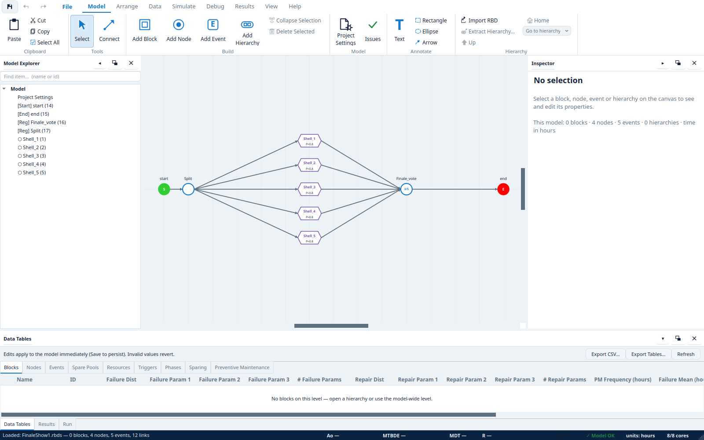
Notice this model has zero blocks — the status bar says so. Five
events (Shell_1…Shell_5), each an independent 80% chance of firing,
feed the same kind of vote node Chapter 5, Voting: A Drone That Survives Losing Motors already taught you: need
3 of the 5 inputs alive for the node — and the mission — to count as a
success.
|
Tip
|
An event’s parameter is a plain probability, not a distribution family with a mean and a shape. There is nothing to fit, no warranty trap, no bathtub curve — just "how often does this exact thing work when asked." That simplicity is the whole point of reaching for an event instead of a block: use it for a pass/fail decision, not a part. |
18.5. Run it
Press F5. Watch the event log for one trial:
0.000000 Event Shell_1 Armed Initialize 0.000000 Event Shell_1 Success Fired 0.000000 Event Shell_2 Armed Initialize 0.000000 Event Shell_2 Success Fired 0.000000 Event Shell_3 Armed Initialize 0.000000 Event Shell_3 Success Fired 0.000000 Event Shell_4 Armed Initialize 0.000000 Event Shell_4 Success Fired 0.000000 Event Shell_5 Armed Initialize 0.000000 Event Shell_5 Failed Fired 0.000000 Node Finale_vote Degraded 4-3/5_... 0.000000 System State_change Yellow system_change_status 0.000000 System Phase_change Mission_success Finished_a_mission 0.000000 System Simulation_Terminate -- --
Every single line lands at t = 0.000000. Shell_5 was a dud, but four
of five still clears the 3-of-5 bar — the health bar shows Yellow,
not Red, and the mission still counts as a success. Then the run
simply ends: Simulation_Terminate fires immediately, because once
every event has resolved, nothing in this model can ever change again.
There is no rest of the mission to simulate.
| Measure | Value |
|---|---|
Reliability (long-run) |
about 0.94 |
Availability |
1.000 — always |
MTBDE / MDT |
N/A |
Do the math check: five independent 80% shells, need at least three.
P(≥3 of 5) = C(5,3)·0.8³·0.2² + C(5,4)·0.8⁴·0.2 + 0.8⁵ = 0.2048
0.4096 + 0.32768 = 0.94208 — the simulator’s own long-run number,
to the fourth decimal. A high-trial run (20 000+) lands on 0.9423; a
quick 20-trial run in the app might not, and that is Chapter 8, How Many Trials? Trusting Your Numbers's
lesson again, not a new one.
|
Note
|
Availability, MTBDE and MDT all either read 1.000 or N/A here, on purpose, not as a bug. Those numbers measure time spent working versus down — and this mission has no duration to spend. A model whose every event resolves at the same instant it starts is a model with nothing to be available over. Reliability — did the mission succeed, yes or no — is the only question an events-only model can actually answer, which is exactly Chapter 7, Repair: The Vending Machine That Keeps Getting Up's reliability-versus-availability lesson wearing a new hat. |
18.6. Check yourself
1 |
Why does Availability read exactly 1.000 in every run, even the runs where the finale is a bust? |
2 |
One shell is a dud, but the health bar shows Yellow, not Red. Why doesn’t one dud alone sink the mission? |
3 |
Every event’s log lines land at the same instant. Name one report
column that would be meaningless for this model but essential for
|
Answers
-
Availability measures the fraction of a mission’s duration spent working. This mission has no duration to spend — every event resolves at t = 0 and the run ends immediately, so there is no "time" for Availability to divide against, and it defaults to 1.000 regardless of outcome.
-
The vote only needs 3 of 5. One dud still leaves 4 up, which clears the bar — the node reads Degraded (yellow), not Bad, and the mission still counts as a success.
-
MTBDE (or MDT): both measure time between or time spent downing events, which only mean something for a model where things happen at different times.
Vendo1.rbdshas 20 000 hours of history to measure; this model has none.
18.7. Exercise
The town council tightens the bar: they now want 4 of the 5 shells to fire, not 3. Before running anything, use the same kind of arithmetic as above to predict the new reliability. Then change the vote node’s k from 3 to 4 in the Data Tables and run 2000 trials to check yourself. How much did one extra required shell cost you?
Answer
n=5, p=0.8, need k=4: P(≥4) = C(5,4)·0.8⁴·0.2 + 0.8⁵ = 0.4096 + 0.32768 = 0.73728. A 2000-trial run lands close to 0.737 — one extra required shell costs about 20 points of reliability (0.942 → 0.737), a steep price for one more "must-fire."
|
Note
|
Limits of this model
Every shell is wired to the same control board and fires from the same battery, yet this model draws all five as independent coin flips — the same independence assumption every earlier chapter has made, now applied to a one-shot decision instead of a wearing-out part. A damp fuse box or a low battery would drag every shell’s odds down together, not one at a time; that shared risk needs the same kind of dependency modelling Chapter 4, Dependency: The Backup That Wasn’t introduced, and this book’s events do not yet combine with it in a worked example. |
18.8. What you learned
-
An event is a single Bernoulli decision, made once at the start of the mission — no operating clock, no distribution family to pick.
-
Events combine with the vote nodes you already know; RAPTOR Studio draws them as hexagons so you can spot them at a glance.
-
Time-based reports (Availability, MTBDE, MDT) go quiet for an events-only model; Reliability is the number that still means something when nothing takes any time at all.
Next chapter: one system, three different mission stages, and the report that only exists once you tell the engine about them.
19. Phasing: The Wash That Doesn’t Run All Shift
Time: about 30 minutes. New ideas: mission phases, a part switched out on a schedule, and the one metric that only exists for a phased model.
19.1. You will learn
-
What a phase is, and how a model cycles through several of them.
-
How to take a block out of the circuit on a schedule, not by failing it.
-
Why Dependability exists as its own number, separate from Availability.
19.2. You need
-
Chapter 2, Your First Model: The Camping Lantern and Chapter 7, Repair: The Vending Machine That Keeps Getting Up finished.
-
The file
models/CarWash1.rbds.
19.3. The story
Your automatic car wash runs one car at a time through three stations: Soap, Rinse, Dry. Each station takes a couple of minutes, then the next car rolls in and the cycle starts again — all shift long. The dryer’s blower has one job, and it is not needed during Soap: running it into a car covered in suds just blows foam everywhere. So the control system switches the blower out of the circuit for Soap, and back in for Rinse and Dry.
Here is the billing question that matters to the owner: is a blower that is "down" for Soap actually broken? And if a customer complains the wash felt unreliable today, should the owner care about the whole shift, or just the two stations they actually paid to have work?
19.4. One new idea: the phase
Every model so far ran under one constant set of rules for its whole mission. A phase lets the model cycle through several stages, each with its own duration and its own rules for how individual parts behave — then wrap back to the first stage and repeat, for as long as the mission runs.
Open models/CarWash1.rbds. Two blocks in series, same shape as
Chapter 2, Your First Model: The Camping Lantern's lantern — except one of them looks different:
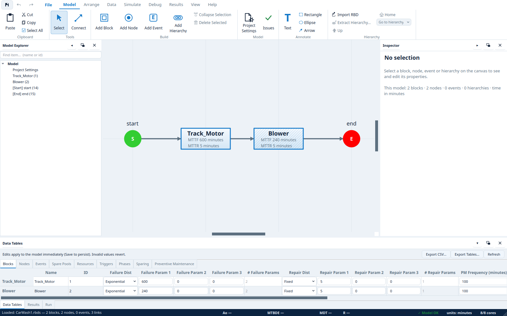
The diagonal hatching on Blower is RAPTOR Studio’s marker for a phased block. Select it and scroll its General tab to the Phasing group: a "Phased" checkbox, and one dropdown-plus-value pair per phase, named after the phase itself:
| Phase | Duration (Normal, minutes) | Blower’s rule |
|---|---|---|
Soap |
mean 2.0, sd 0.1 |
Cut — out of the circuit entirely |
Rinse |
mean 2.0, sd 0.1 |
Active — normal stress, normal risk |
Dry |
mean 3.0, sd 0.15 |
Active — normal stress, normal risk |
Track_Motor, which drives the car through all three stations, carries
no phase settings at all — it just runs, the whole shift, exactly like
every block in earlier chapters. Phasing is opt-in, block by block.
|
Tip
|
"Cut" is not the same as "Failed." A Cut block’s own failure clock does not run and it never logs a breakdown — it is deliberately parked, the scheduled equivalent of a mechanic unplugging a machine on purpose. A Failed block, by contrast, is supposed to be running and isn’t. RAPTOR Studio treats both the same way for one purpose only: the path through either one is unavailable right now. |
19.5. Run it
Press F5. The very first lines of the log show the mission starting already Red — Soap is phase 1, so Blower starts Cut:
0.000000 Block Track_Motor Good InitializeStress=1.000000 0.000000 Block Blower Cut Initialize 0.000000 Node end Bad 0-1/1_df3 0.000000 System State_change Red _c2 1.940641 System Phase_change Phase_change Begin_phase_Rinse 1.940641 Block Blower Good Phase_ChangeStress=0.000000 1.940641 Node end Good 1-1/1_ur3 1.940641 System State_change Green system_change_status 1.940641 System Phase_change Mission Began_a_mission
At t = 1.94 — Soap’s own draw from Normal(2.0, 0.1) — the wash
enters Rinse, Blower rejoins as Good, and the system turns Green
again. Watch a later cycle catch a real breakdown instead of a
scheduled one:
361.948607 Block Track_Motor Failed Operating_time=361.948607 361.948607 Block Track_Motor Repairing No_resources_used 361.948607 Node end Bad 0-1/1_df3 361.948607 System State_change Red _d1 365.733435 System Phase_change Mission_failure Finished_a_mission
Same red health bar either way — but the comment differs. A
scheduled Cut never produces a Mission_failure line; an actual
breakdown during a mission phase does.
| Measure | Value (long-run) |
|---|---|
Availability |
about 0.70 |
Dependability |
about 0.98 |
MTBDE / MDT |
about 4.8 min / about 2.1 min |
Availability counts every red minute — scheduled Soap pauses included — so it lands near 70%, dominated by the roughly 2 of every 7 minutes the blower spends deliberately parked. Dependability tells a different story: about 0.98.
19.6. One more idea: Dependability
Look back at each phase’s own Mission flag: Soap is Mission=0;
Rinse and Dry are Mission=1. The engine keeps a second clock that
only accumulates during Mission=1 time, and Dependability is
Green-plus-Yellow time on that clock, divided by that clock’s own
total — Soap’s downtime never enters the calculation at all, in either
the numerator or the denominator.
|
Note
|
This is the first chapter where Dependability actually appears — the report row has been sitting there since Chapter 7, Repair: The Vending Machine That Keeps Getting Up, unexplained, because it only ever prints for a phased model. Now you know why it exists: Availability answers "what fraction of the whole shift did the wash work," which is the wrong question when part of every cycle is deliberately, harmlessly offline. Dependability answers "what fraction of the time we actually promised did it work" — and for this wash, that number is 0.98, not 0.70. |
19.7. Changing the phase list
The Phases… button on the Data ribbon opens the phase list on the left and, on the right, one grid per kind of element (blocks, nodes, events, hierarchies) with a column for every phase. Four buttons change the list:
-
Insert before selected puts a new phase in front of the selected one, and every later phase moves one place along. Add at end puts it last.
-
Delete removes the selected phase, and every later one moves up.
-
Clear all removes every phase. Elements keep their "phased" tick; it means nothing until phases exist again.
Each element’s cells move with the phases, so nothing you set is lost. A new phase starts every phased element with a default cell: a block is Active at stress 1, an event is Prior, a node requires its own number of good paths (or is Linked if that number is 0), and a hierarchy is Active. The whole dialog is one undo step per button.
|
Note
|
A hierarchy has no phase columns of its own. Its Active, Linked and Cut cells are stored on its Out marker (the node they are read from), so editing the hierarchy tab edits that node. |
19.8. Check yourself
1 |
Why does Availability land near 70% when the blower is only ever Cut for about 2 of every 7 minutes? |
2 |
A scheduled Cut and a real Track_Motor breakdown both turn the health bar red. Name the one log comment that tells them apart. |
3 |
If Soap were marked |
Answers
-
Availability counts every red minute, and a Soap-phase Cut turns the system red for its entire ~2-minute duration, every single cycle — about 2 of every 7 minutes (Soap+Rinse+Dry), which is already close to 30% before a single real breakdown is counted.
-
Mission_failure(a real breakdown during a Mission=1 phase) versus no such line at all for a scheduled Cut — the health bar goes red either way, but only a genuine failure is tagged as one. -
The gap would close to zero: with Soap counted as mission time too, the same red minutes would land in both the Availability and the Dependability calculation, and the two numbers would read identically.
19.9. Exercise
Before running anything: predict what happens if you flip Soap’s own
Mission flag from 0 to 1 in the Phases tab, leaving everything else
untouched. Then make the change and run 1000 trials. Did Dependability
move — and if so, to what?
Answer
Flipping Soap to Mission=1 makes Dependability collapse to
match Availability exactly (both about 0.697 at 1000 trials) — with no
non-mission time left to exclude, the two metrics have nothing left to
disagree about.
|
Note
|
Limits of this model
This chapter’s own numbers hold up well — Availability and Dependability are both stable across thousands of trials. But building it surfaced a real, reproducible surprise: this book’s usual headline number, Reliability, comes out nonsensical here (a reported spread that swings outside the 0–1 range a fraction is supposed to live in). The cause traces to how the engine counts "missions completed" — every Rinse-Dry pair in this model is its own small mission, dozens of them per run, and that per-run counter was never exercised by a model with more than one mission before. It is a genuine, newly-found gap, not a mistake in this chapter’s own numbers — and a good reminder that even a well-tested engine can meet a combination nobody tried yet. Trust Availability and Dependability here; don’t trust Reliability until someone fixes the counter. |
19.10. What you learned
-
A phase is a repeating mission stage with its own duration; a block can be Cut, Active, or Linked differently in each one.
-
Cut is a schedule, not a failure — no breakdown line, no wear, just "not needed right now."
-
Dependability exists for exactly this situation: a number that ignores the downtime you scheduled on purpose, so it can tell you about the downtime you didn’t.
Next chapter: put every tool in this book to work on one serious system — a data centre engineered to a standard, then tuned until it meets its number.
20. Capstone: The Data Centre, Engineered to a Target
Time: about 45 minutes. New ideas: availability targets, N / N+1 / 2N design vocabulary, tuning a system against a standard, and every tool from the earlier chapters working together.
20.1. You will learn
-
How real availability tiers are stated — and what a "five nines" demand actually means in minutes per year.
-
How redundancy vocabulary (N, N+1, 2N) maps onto the RBD pieces you have been drawing since Chapter 5, Voting: A Drone That Survives Losing Motors.
-
The tuning loop: measure, find the weak link, fix it, re-measure — until the number is met.
20.2. You need
-
Chapter 2, Your First Model: The Camping Lantern through Chapter 17, Weak Links: Blame the Right Part finished — this chapter uses all of them.
-
The files
models/DC1.rbds(baseline) andmodels/DC2.rbds(tuned).
20.3. The story
A colocation provider wants a new hall and hands you a slide with one number on it: 99.98% availability. That is the neighbourhood of what the data-centre industry calls a Tier III facility — Uptime Institute’s tier scheme runs from about 99.67% (Tier I) to about 99.995% (Tier IV), and TIA-942 uses a similar rated-1-to-4 scale. Put the target in hours: one year is 8 760 hours, so 99.98% allows about 1.6 hours of downtime per year. Everything else in this chapter is the pursuit of those 96 minutes.
The industry’s shorthand for redundancy:
-
N — just enough capacity for the load. One of it fails, you’re down.
-
N+1 — one spare beyond need (Chapter 5, Voting: A Drone That Survives Losing Motors's k-of-n vote, one forgiven failure).
-
2N — a complete second copy of everything (two full chains, either alone carries the load).
You own the tools for all three. Time to build.
20.4. The facility, drawn as three ovals
Open models/DC1.rbds. Chapter 13, Hierarchies: The Delivery Van, Tidied Up's hierarchy idea, at building
scale — the home level is just three ovals in series (power, cooling,
IT), because the hall works only if all three work:
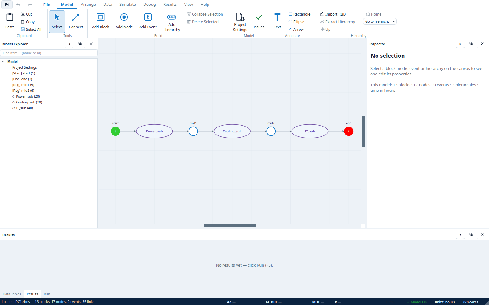
Step inside each oval (double-click, as in Chapter 13, Hierarchies: The Delivery Van, Tidied Up):
-
Power_sub — the grid feed
Utility_Awith a cold-standbyGeneratorbehind the automatic transfer switch (Chapter 11, Cold Standby: The Bakery’s Second Oven's pattern: the ATS needs 0.1 h to wake the genset), thenUPS, thenSwitchgear. -
Cooling_sub — three
CRACunits voting 2-of-3 (N+1 cooling), feeding aChill_Pump. All three CRACs draw replacement parts from one shared shelf,CRAC_Spares(Chapter 10, Sparing: The Taco Truck’s Propane Shelf's Pooled type, not Custom): three units in stock, resupplied every 30 days, with emergency shipping if the shelf ever actually runs dry. One shared shelf instead of three private ones is the realistic choice here — a facility rarely stocks a private spare per unit when the units are interchangeable. -
IT_sub — dual `PDU`s (either carries), then three `Server_Row`s voting 2-of-3 (N+1 rows).
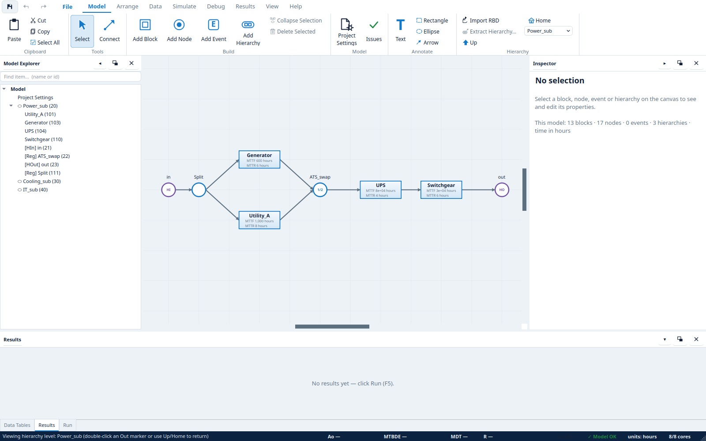
Twelve blocks, three hierarchies, one cold standby pair, two votes, one series backbone — every shape from the first ten chapters of this book, wearing hard hats.
20.5. Run the baseline
Run 200 trials of the 8 760-hour mission:
| Measure | DC1 result |
|---|---|
Availability |
about 99.948% |
Downtime per year |
about 4.5 h |
MTBDE |
about 1 090 h |
MDT |
about 0.5 h |
Stoppages per year |
about 9 |
Ninety-nine point nine five percent sounds excellent — and misses the target by nearly three times. The downtime budget was 1.6 hours; the facility spends 4.5. Now do what Chapter 17, Weak Links: Blame the Right Part taught: blame someone. Read the event logs and ask which part was down at each red:
| Blamed for downtime | Hours per year |
|---|---|
ATS transfer gaps (utility out) |
about 0.8 |
Switchgear (single string, N) |
about 2.1 |
UPS |
about 0.6 |
Generator fails while carrying |
about 0.5 |
Chill_Pump |
about 0.4 |
The table reads like a to-do list, sorted.
20.6. Tune it: three moves
Open models/DC2.rbds — the same facility after the design review.
Three changes, each answering one line of the blame table:
-
Dual switchgear strings, one under PM.
Switchgear_AandSwitchgear_Bnow sit in parallel — 2N for the distribution layer. Weekly preventive maintenance (Chapter 12, Preventive Maintenance: The Careful Commuter) on string A is now concurrent: string B carries the load for those two hours, so service costs zero availability. This is exactly what the standards mean by concurrently maintainable. -
A faster transfer switch. ATS gap 0.1 h → 0.05 h. The utility still fails eight-odd times a year; each transfer now costs half as much.
-
A priority spares contract. UPS and pump repairs drop from 4 h to 2 h (edit their repair parameter). Same failures, half the outage each.
Note what the moves have in common: none of them makes any part less likely to fail. They shrink the consequence of failure — Chapter 17, Weak Links: Blame the Right Part's other dial.
20.7. Run the tuned facility
Run 200 trials again:
| Measure | DC1 | DC2 |
|---|---|---|
Availability |
about 99.948% |
about 99.984% |
Downtime per year |
about 4.5 h |
about 1.4 h |
MDT |
about 0.50 h |
about 0.15 h |
Yellow time (degraded) |
about 1.6% |
about 2.8% |
The target was 1.6 hours; DC2 comes in at about 1.4 — Tier III reached, with a little margin. Notice the price, though: yellow time nearly doubled. Redundancy converts hard stoppages into soft degradation — the CRAC that used to stop the hall now merely trims its margin, the PM that used to be an outage is now a yawn on the health bar. A well-tuned facility is yellower than a fragile one.
|
Note
|
The simulator does not certify anything. Real standards compliance depends on construction, commissioning, operations, and audit — fault-tree detail no 12-block model carries. What the model does buy you is the ranking: which design moves buy hours, and which buy nothing. Spend the model, then spend the concrete. |
And Chapter 15, Cost: The Bill Arrives's question — what does downtime cost? — has a blunt answer here. At a data-centre rate of 300 000 per down-hour, DC1’s year costs about 1.36 million in outages; DC2’s about 0.42 million. The redundancy was not free to build, but the model says it pays for itself in months.
|
Note
|
Limits of this model
Two honesty checks belong on every number in this chapter. First, independence: every failure in DC1/DC2 is drawn on its own private dice, exactly like every earlier chapter — but a real hall has shared risk a twelve-block diagram cannot see (one utility substation feeding both "independent" strings, one cooling loop, one fire-suppression system). This is common-cause failure, and it is the single biggest reason paper redundancy calculations disappoint in practice — model it explicitly with dependency, or treat every redundancy number here as an optimistic ceiling. Second, precision: before quoting 99.984% to a customer, do the arithmetic Chapter 8, How Many Trials? Trusting Your Numbers taught you, rather than trusting a headline number on faith. |
20.8. Is 99.984% a real number, or 200-trial noise?
DC2’s own 200-trial run reports Availability Mean 0.999835, SEM 0.0000140. Apply Chapter 8, How Many Trials? Trusting Your Numbers's own rule of thumb:
Answer ≈ Mean ± 2 × SEM = 0.999835 ± 0.0000280, roughly 0.999807 to 0.999863.
The whole interval sits above the 99.98% (0.9998) target — DC2 clears its Tier III number with real margin, not by luck of the draw. That might be surprising: the Formulas quick reference warned that pinning down a rare event can need tens of thousands of trials. The difference is what is being counted. A four-nines Reliability figure (ch-events' own territory) is one 0-or-1 coin flip per run — you need enormous trial counts to see enough of the rare "1" outcomes to trust the average. Availability is not a coin flip: every one of these 200 runs already measures a full 8 760-hour year, hour by hour, so even one run carries far more information about the system’s true up/down ratio than one Reliability trial ever could. Precision comes cheap here because the metric itself is generous with data, not because 200 is a magic number — a model reporting Reliability at these odds would need Chapter 8, How Many Trials? Trusting Your Numbers's rare-event math in earnest.
|
Note
|
The normal-approximation interval above is least trustworthy exactly at the extremes (fractions very near 0 or 1) — the same warning Chapter 8, How Many Trials? Trusting Your Numbers gives for Reliability. It happens to hold up fine here because 2×SEM (0.0000280) is tiny next to the distance from 1.0 (about 0.00016): the interval never gets close enough to the boundary to distort. Always check that distance before trusting the interval, not just the SEM on its own. |
20.9. Check yourself
1 |
The three server rows vote 2-of-3. In N/N+1 vocabulary, what is that, and what failure does it not protect against? |
2 |
DC2 doubled the switchgear but kept a single utility feed and a single generator. Name one failure that still stops the whole hall. |
3 |
Why did yellow time rise after tuning, and why is that the expected signature of a good design? |
4 |
All three CRACs draw from one shared spare shelf instead of each keeping its own. Name one advantage and one risk of sharing. |
Answers
-
N+1 — one row beyond the two needed. It forgives any single row failure, but not two at once, and not a failure of the PDU pair or anything upstream of the vote.
-
Plenty of candidates: the generator failing while it carries the load during a utility outage, the UPS, the Chill_Pump, or both PDUs failing together — each is still a single point that stops every string. 2N switchgear removed only the switchgear’s own entry from the blame table.
-
Redundancy converts stoppages into degradations: a failed CRAC or row now trims margin (yellow) instead of stopping the hall (red), and PM happens under cover of the spare string. Yellow rising while red falls is the health-bar signature of consequence being traded for uptime.
-
Advantage: one shelf of 3 covers whatever mix of CRACs actually fails — three private shelves of one spare each would need to restock the specific unit that broke, wasting capacity sitting idle on the other two shelves. Risk: two CRACs failing close together now compete for the same stock, something three separate shelves could never let happen — pooling trades "wasted spares" for "a shared risk of running out."
20.10. Exercise
The provider now waves a new slide: 99.99%. DC2 is not there yet — find the next line of the blame table yourself. Run DC2, count the red-stretch causes from the event logs, and identify the single biggest remaining contributor. Then make one change to the model — a second utility feed so the generator never carries, a faster Chill_Pump repair, your pick — and run 200 trials. Did you clear 0.88 hours? What became the new weak link?
Answer
The blame table’s leaders are the ATS transfer gaps (about 0.4 h/yr) and generator failures while carrying (about 0.4 h/yr) — the same utility outage wearing two hats. Adding a second utility feed removes both (the generator never starts), taking the year to roughly 0.5–0.6 h of downtime — about 99.994%, past the 99.99% line. The new weak link is the Chill_Pump: a single, unredundant block in the cooling path, now responsible for a third of what little downtime remains. (It is N — and N is always next.)
20.11. What you learned
-
Availability targets convert to downtime budgets in hours per year; 99.98% means 1.6 hours — the number that disciplines every design choice.
-
N, N+1, and 2N are your old friends the series chain, the k-of-n vote, and the parallel pair, wearing industry badges.
-
Tuning is the Chapter 17, Weak Links: Blame the Right Part loop at facility scale: blame table, fix the leader by shrinking consequence, re-run, and stop when the budget is met — watching yellow grow as red shrinks.
You have come a long way from a camping lantern. Same dice, same event log, same three numbers — just aimed at bigger machines. Go point the simulator at something that matters to you.
Next, the strangest lens in the toolbox: watching the simulation think, one event at a time. Then one last capstone — the hardest of the three, because this time nobody hands you the model.
21. The Stepping Debugger: Watch the Machine Think
Time: about 30 minutes. New ideas: the stepped run, breakpoints, Run To, forcing failures on a paused simulation.
21.1. You will learn
-
How to run a simulation one event at a time and what each event does to the picture.
-
How breakpoints and Run To tame a long mission.
-
How to sabotage a healthy model mid-flight — and watch the cascade.
21.2. You need
-
Chapter 2, Your First Model: The Camping Lantern through Chapter 11, Cold Standby: The Bakery’s Second Oven finished (the bakery returns for a cameo).
-
The file
models/Bakery1.rbds.
21.3. The story
Everything so far ran in the dark: you pressed Run, and minutes of simulated life rushed past as a finished report. But sometimes you want to watch. Why did the system go red at 181 hours? What exactly happened in the half-second the transfer switch was thinking?
RAPTOR Studio has a debugger, the same way program editors do. You step. The machine advances one event. The diagram re-colours. The status bar narrates. You are watching the simulation think.
21.4. Step into the bakery
Open models/Bakery1.rbds and switch the ribbon to the Debug
tab. Ignore Run on the Simulate tab — that is the old batch world.
Press Step (F6) instead:
The first press does something subtle and important: it starts the run — every block initialised, the standby oven parked in its blue Standby slot — but the clock still reads 0.000000. Nothing has happened yet. Three event-log lines, no time elapsed.
Press Step again. And again. Each press advances exactly one event: a block’s state change, a node’s recalculation, a system colour change. Watch three things move together:
-
the diagram — blocks re-colour live: green running, red repairing, blue standby;
-
the event log in the Results dock — one new coloured row per press, the same rows Chapter 3, Redundancy: Two Pumps Are Better Than One taught you to read;
-
the status bar — plain words about the event you just witnessed, e.g.
Node end → Bad (t = 180.974304).
Step about thirty times and you reach the moment Chapter 11, Cold Standby: The Bakery’s Second Oven made
famous: Main_Oven Failed at t = 180.974304. The oven’s box turns
red, the swap node goes Bad, the end dot goes red, the system
line logs State_change Red:
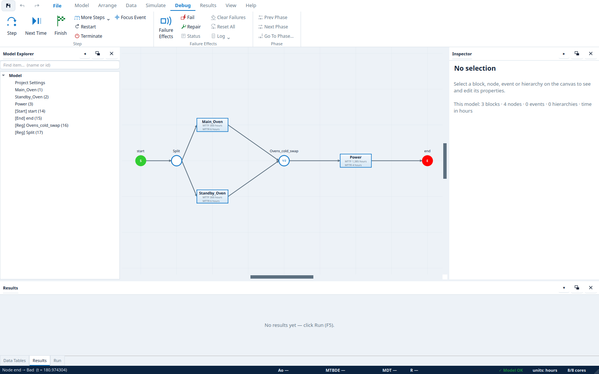
Half an hour of model time later, the
next step wakes Standby_Oven — its box shifts from blue standby to
green running, the end dot returns to life, and the system, still
yellow until the main oven is repaired, limps on. You have now
witnessed the wake-up gap that Chapter 11, Cold Standby: The Bakery’s Second Oven only reported as a number.
|
Note
|
The replay is honest. The stepped session uses the same seeded dice streams as a one-core batch run (Animate, or Cores set to 1), so this bakery fails its main oven at exactly t = 180.974304 — the same instant as run 1 of a 20-run batch run that way. Nothing is staged; you are watching run 1 from the inside. |
21.5. Taming the long stretches
Thirty presses to the first failure is fine. Three thousand would not be. Open the More Steps menu on the Debug ribbon for the bigger levers:
-
Multi — advance a whole batch of events at once. How many is set in the Run panel’s Stepping section (10 by default). The diagram jumps to the end state.
-
Run to time — advance until the clock reaches a target time, also set in the Run panel. "Run to 720" is the whole mission in one press.
-
Breakpoint — pick a block in the Run panel’s Breakpoint on field (say,
Power) and stepping stops dead the instant that block enters Repairing. This is the classic debugger breakpoint, aimed at hardware.
A comfortable rhythm: Run to time just before the interesting era, then single-step through the drama.
21.6. Sabotage: Failure Effects View
The Debug ribbon tab also has a Failure Effects group. It is a
separate mode, not part of a stepped run: press Failure Effects and
the diagram shows the bakery all-operating with no dice involved. Click
Power and it turns red — a blackout at a time of your choosing, with
the cascade and the end dot following at once. This is the simulator’s
version of pulling a breaker to see what the building does. Click it
again to put it back; Status says in words what is failed, what that
induced, and which nodes are down or degraded.
A stepped run in progress is discarded when you open the view (it asks first), and Run and Step are greyed out until you leave it.
To end a stepped run, press Finish. The session completes the run — remaining events, closing bookkeeping — and then every later run the model is set to make, and presents the full reports, exactly like a batch run: summary, event log, the works. A stepped session covers all the model’s runs: Jump lets the current run go by without stopping and pauses at the next run’s first change, with the dice carried on from where the run before left them. The session is single-use; the next Step starts a fresh one with fresh dice.
|
Note
|
Limits of this model — verification is not validation
Everything in this chapter proves one thing: the simulation does exactly what you told it to do. That is called verification — and it is genuinely valuable; every earlier chapter’s numbers are only trustworthy because the engine underneath them behaves as documented. But it answers a different question from validation: does the model itself match the real bakery? Stepping through a perfectly executed run of the wrong assumptions just shows you the wrong assumptions in slow motion. Use the debugger to confirm the model does what you built it to do; use field data, and a healthy skepticism about every "Limits of this model" box in this book, to confirm you built the right model in the first place. |
21.7. Check yourself
1 |
What does the first Step press do that no other press does? |
2 |
You step to t = 180.97, finish the session, and start stepping again from the same model. Does Main_Oven fail at the same instant? Why or why not? |
3 |
Why does a breakpoint on |
Answers
-
It builds the session: every block initialised, the standby parked, the clock still at 0.000000 — the kickoff without a single tick of model time.
-
Yes — the dice streams are seeded, so the fresh session replays run 1 exactly: Main_Oven fails at t = 180.974304 again. (Change the model’s seed and the story changes; change nothing and it never does.)
-
The breakpoint fires when the chosen block enters Repairing. Main_Oven fails often (it is the active oven, wearing out on every loaf); Standby_Oven only "fails" in the debugger’s sense if it breaks while it is the one carrying the load — a rare event, because it spends its life parked in standby.
21.8. Exercise
Load models/DC1.rbds, set a breakpoint on Utility_A, and press
Multi with 50 events per press until the breakpoint fires. Then
single-step through the transfer: count the event-log lines between
Utility_A Failed and Generator waking. That count — each line a
state change somewhere in the facility — is what a batch run
summarises in one red stretch. Note the moment Power_sub goes Bad
and the moment the system goes Red: same instant, one cascade.
Answer
Your exact count depends on where in the year the breakpoint caught the
outage, so there is no single number to check against — the shape is
the point. Expect a short burst of lines all stamped with the same
instant: Utility_A failing, the ATS node losing its live input,
Power_sub going Bad, the system turning Red — and then, one transfer
delay later, Generator waking and the whole chain unwinding back to
Green. Everything except the generator’s wake-up shares one timestamp,
which is what "same instant, one cascade" means: the engine did not
advance the clock at all while the consequences propagated. A batch run
prints none of this. It prints one downtime stretch as long as the
transfer delay, and the several state changes you just stepped through
are exactly what got summarised away.
21.9. What you learned
-
The debugger runs one real event per press, re-colouring the diagram and narrating in the status bar — the event log, live.
-
Multi, Run To, and breakpoints let you jump to the interesting part of a mission instead of stepping through years of quiet.
-
Fail and Repair force transitions on a paused model — cause-and-effect experiments with the dice removed.
-
Finish turns the stepped session into ordinary reports; sessions are single-use, and the replay matches the batch run for run. Jump moves on to the next run.
That is the whole toolbox: dice, diagrams, redundancy, standby, maintenance, hierarchy, dependency, events, phasing, capacity, money, weak links, a facility tuned to a standard, a line that paid for its own spares — and now a window into the machine itself.
One capstone is left, and it is the hardest of the three: this time, nobody hands you the model.
22. RAPTOR from an AI Assistant
Time: about 20 minutes. You need: RAPTOR Studio, and an MCP-capable AI assistant (Claude Code, Claude Desktop, OpenCode, or any other MCP client).
RAPTOR Studio can act as an MCP server (Model Context Protocol), letting an AI assistant build, simulate, analyse, and compare reliability models on your behalf. You describe what you want in plain language; the assistant drives the engine and brings back numbers, tables, and a block diagram.
This chapter covers installation, configuration for popular clients, the full tool catalogue, and worked examples.
The server exposes 66 tools (including the ping health check), a set of
resources, and three prompts. A standalone reference to every tool,
option and transport is in docs/MCP.md in the repository.
22.1. Prerequisites
-
Python 3.12+ installed and on your PATH.
-
RAPTOR Studio installed (
pip install "raptor-studio[mcp]") or running from a development checkout. -
An AI client that speaks MCP (Claude Code, Claude Desktop, OpenCode, or any client listed at https://modelcontextprotocol.io/clients).
Optional:
-
Qt’s system libraries — PySide6 is installed with the package, but
render_diagram(block diagram images) also needs the Qt runtime libraries the operating system provides. On a headless server without them the server still works; you just will not get images, and every number still arrives as Markdown and JSON. -
uv — recommended for running from a development checkout without installing.
22.2. Installing the MCP server
22.2.1. From PyPI
pip install "raptor-studio[mcp]"The [mcp] extra installs the MCP SDK (mcp>=2.2,<3) and pydantic, and
the raptor-studio-mcp console command. Verify it works:
raptor-studio-mcp --help22.2.2. From a development checkout
cd /path/to/RaptorStudio
pip install -e ".[mcp]"Or, without installing (using uv):
uv run python -m raptor.mcp --helpThere are three equivalent entry points, all leading to the same server:
raptor-studio-mcp --workspace ~/raptor-models
python -m raptor.mcp --workspace ~/raptor-models
raptor-studio --mcp --workspace ~/raptor-models22.3. Configuring your AI client
By default the MCP server communicates over stdio: your AI client launches the server as a child process and speaks JSON-RPC to it. Configuration means telling the client the command and arguments. The server can also serve MCP over HTTP; see Section 22.4.1, “Serving over HTTP”.
|
Note
|
From the app
File ▸ AI Assistant in RAPTOR Studio opens the Reference Manual’s
AI assistant section, with links
to this chapter and the generated MCP reference. The installer build does
not include the server; install the |
22.3.1. Claude Code
Claude Code is Anthropic’s terminal-based coding agent. Register the server with:
claude mcp add raptor-studio -- raptor-studio-mcp --workspace ~/raptor-modelsOr, from a development checkout without installing:
claude mcp add raptor-studio -- uv run python -m raptor.mcp --workspace ~/raptor-modelsVerify the server is registered:
claude mcp listYou should see raptor-studio in the list. Start a new Claude Code session and
ask it about RAPTOR — it will discover the available tools automatically.
To remove the server:
claude mcp remove raptor-studio22.3.2. Claude Desktop
Claude Desktop is Anthropic’s GUI application. Edit the configuration file directly:
-
macOS:
~/Library/Application Support/Claude/claude_desktop_config.json -
Windows:
%APPDATA%\Claude\claude_desktop_config.json
Add the raptor server:
{
"mcpServers": {
"raptor-studio": {
"command": "raptor-studio-mcp",
"args": ["--workspace", "/home/you/raptor-models"]
}
}
}If raptor-studio-mcp is not on your PATH (for example, in a virtual
environment), use the full path:
{
"mcpServers": {
"raptor-studio": {
"command": "/path/to/venv/bin/raptor-studio-mcp",
"args": ["--workspace", "/home/you/raptor-models"]
}
}
}From a development checkout with uv:
{
"mcpServers": {
"raptor-studio": {
"command": "uv",
"args": [
"run", "--directory", "/path/to/RaptorStudio",
"python", "-m", "raptor.mcp",
"--workspace", "/home/you/raptor-models"
]
}
}
}Restart Claude Desktop after editing the config. The raptor server will appear under the MCP icon.
22.3.3. OpenCode
OpenCode supports MCP servers via its configuration. Add the server under
mcp.servers in your opencode.json:
{
"$schema": "https://opencode.ai/config.json",
"mcp": {
"servers": {
"raptor-studio": {
"type": "local",
"command": [
"raptor-studio-mcp",
"--workspace", "/home/you/raptor-models"
]
}
}
}
}Or, from a development checkout:
{
"$schema": "https://opencode.ai/config.json",
"mcp": {
"servers": {
"raptor-studio": {
"type": "local",
"command": [
"uv", "run", "--directory", "/path/to/RaptorStudio",
"python", "-m", "raptor.mcp",
"--workspace", "/home/you/raptor-models"
]
}
}
}
}Or let OpenCode write the entry for you:
opencode mcp add raptor-studio -- raptor-studio-mcp --workspace ~/raptor-models
opencode mcp listOpenCode reloads its configuration when the file is saved; there is no need to restart the session.
22.3.4. Other MCP clients
Any client that speaks MCP over stdio (or HTTP) will work. The generic recipe is:
raptor-studio-mcp --workspace /path/to/workspaceFor clients that need a JSON config, the minimal form is:
{
"command": "raptor-studio-mcp",
"args": ["--workspace", "/path/to/workspace"]
}Development / Inspector. To test the server interactively (needs Node.js):
npx @modelcontextprotocol/inspector raptor-studio-mcp --workspace ~/raptor-modelsThis opens the MCP Inspector, where you can call every tool by hand and inspect its inputs and outputs.
22.4. Command-line options
| Flag | Default | Description |
|---|---|---|
|
|
Directory where models, runs, and renders are stored. |
|
|
Transport protocol. |
|
off |
Refuse every tool that would create, edit or delete a model, or export a
file. Opening models, analysing them and running simulations stay
allowed (they never change your source files), so |
|
off |
Do not expose |
|
(none) |
Extra directory |
|
(none) |
Extra directory |
|
30 |
Days to keep run and render artefacts before automatic cleanup. Models are kept indefinitely. |
|
5000 |
Hard cap on |
|
|
Logging verbosity ( |
Nothing outside the workspace is ever written unless --allow-write
permits it; open_model only reads the workspace, bundled examples and
--allow-read directories. Over stdio the server listens on no network
port.
22.4.1. Serving over HTTP
Use HTTP when several clients share one server, or the server runs in a container:
A token is required. Make one and keep it private:
head -c 32 /dev/urandom | base64 > ~/.raptor-token
chmod 600 ~/.raptor-token
raptor-studio-mcp --transport http --port 8765 --token-file ~/.raptor-tokenThe endpoint is http://127.0.0.1:8765/mcp by default. The server is
careful about what it exposes:
-
It refuses to start without a bearer token (
--token-file FILEor--token-env VAR, at least 16 characters).--allow-unauthenticatedwaives this on loopback for a single-user machine, because any local process can then reach the workspace; it never applies to another--host. -
It binds to the loopback address unless you give
--host. -
Every request must carry
Authorization: Bearer <token>; others get 401. A client address that sends ten wrong tokens in a minute is locked out for a minute (429). -
All clients of one server share one workspace: run one server (and token) per person or project.
-
Browser cross-origin calls are blocked unless you list the origin with
--allow-origin, and the Host header is checked against DNS rebinding. -
--tls-certand--tls-keytogether serve HTTPS. A non-loopback bind refuses plaintext HTTP unless you explicitly pass--allow-insecure-http; without TLS the bearer token and model data would cross the network in clear text. -
Request bodies are capped (8 MiB) and at most two long-running jobs (simulate, sweep, compare,
start_run) run at once. At most fourstart_runjobs may be queued or running; a fifth is refused withlimit_exceeded. -
--port 0picks a free port and prints the URL as the first line of output, which is handy in scripts.
| Flag | Default | Description |
|---|---|---|
|
|
Bind address. |
|
|
TCP port. |
|
|
Endpoint path. |
|
none |
Bearer token source (required). |
|
none |
Allowed browser origin; repeatable. |
|
none |
Serve HTTPS. |
|
off |
Serve loopback with no token (single-user machines only). |
|
off |
Permit plaintext HTTP on a non-loopback bind (not recommended). |
22.5. Verifying the server works
-
Check the tool list. Ask your assistant "What RAPTOR tools do you have?" or, in the MCP Inspector, click Tools. You should see the tools listed below: 65 including
render_diagram,render_diagram_svgandping, or 64 when--no-renderhides the PNG diagram tool. -
Ping the server. Ask the assistant to "ping RAPTOR" or call the
pingtool manually. It should return"pong". -
List distributions. Ask "What distributions does RAPTOR support?" or call
list_distributions. You should get all 22 supported distributions with parameter names and valid ranges.
If the server does not appear, see Section 22.11, “Troubleshooting”.
22.6. Available tools
22.6.1. Workspace and lifecycle
| Tool | What it does |
|---|---|
|
List open models (and bundled examples) with their |
|
Copy a |
|
Create a new model from a template: |
|
Save a model to a path inside the workspace (or an |
|
Close one or more models (a single id or a list), optionally deleting their files irreversibly. |
|
Delete a file previously exported with |
|
Return the workspace root, allowed write directories, retention and
limits. Relative |
22.6.2. Building and editing
| Tool | What it does |
|---|---|
|
Create a whole model in one call from a friendly |
|
Read back the model: counts and topology ( |
|
Read one block, node, event, hierarchy or link back in full, using the
same friendly names |
|
Say what is different between two open models: elements added, removed,
renamed or changed (distributions are described in words), connections
added or removed, hierarchy moves, k-of-n changes, and system settings,
rates, spare pools, resources, triggers and phases. It compares the
models themselves and runs nothing; |
|
Add many blocks, nodes or events with one save. Each item is a |
|
Add a block. |
|
Add a |
|
Add an event with a probability. |
|
Create an empty hierarchy — a sub-model boundary — with its In and Out
markers already correct. Doing that by hand through |
|
Wrap elements you already have into a new hierarchy in one call — the API counterpart of the GUI’s Collapse Selection. Internal links travel down a level untouched; each boundary link is split so the outside half keeps its id and an inside half is added off the In/Out marker. Start, End and In/Out nodes are refused. This is the fastest way to produce the "three ovals" figures of Chapter 13, Hierarchies: The Delivery Van, Tidied Up. |
|
Link two elements (by name or |
|
Create many links with one save. Endpoints use the same forms as
|
|
Update any friendly |
|
Update many elements with one save, using the same |
|
Delete an element; with |
|
Delete many elements with one save. |
|
Delete one link by id, leaving both elements (and their other links) in place. |
|
Move a block, node, event or hierarchy to another hierarchy level
( |
|
Step one edit back (multi-step: call again to go further back). |
|
Step one edit forward again after |
22.6.3. Model features
| Tool | What it does |
|---|---|
|
Set a block’s sparing mode ( |
|
Configure preventive maintenance: interval, duration distribution, trigger, and deferral flags. |
|
Define mission phases and per-element per-phase states (always built
through the builder, never hand-written). |
|
Create, list, edit or delete the spare pools |
|
Create, list, edit or delete resource pools (shared crew/equipment) with
|
|
Create, list, edit or delete triggers used by triggered preventive maintenance. |
|
System-level settings: run length, number of runs, termination type,
units, weak-link/cost/capacity analysis, GY/YR thresholds, random
streams, and |
|
Maintain the model’s named Rates library: list, add, update, or delete reusable expressions with a human-readable basis. |
|
Set the distributions |
22.6.4. Annotations
| Tool | What it does |
|---|---|
|
Add a drawing annotation — |
|
List a model’s annotations, optionally filtered by hierarchy |
|
Patch one annotation’s text/style/geometry, or re-anchor it (supply
|
|
Delete one annotation by id. |
22.6.5. Analysis
| Tool | What it does |
|---|---|
|
Structural and parameter pre-flight. Returns errors, warnings, and a runnable flag. |
|
List the result metrics and their units (availability, reliability,
dependability, MTBDE/MDT, MTBM variants, MMT variants, failures and
G/Y/R percentages). With |
|
Predict wall-clock time from a real pilot at the real horizon. Returns a point estimate, a range, per-run ms, and advice. |
|
Run a Monte Carlo simulation. Validates the model first and refuses on
structural errors. Returns structured metrics (availability,
reliability, MTBDE, MDT, MTBM/MMT variants, G/Y/R percent, system and
component failures) plus a Markdown table. Estimates first and refuses
over-budget runs unless |
|
Start a simulation in the background and return a |
|
Progress of a |
|
Ask a background job to stop between replications (or during a long
model set-up, when it has nothing to keep), keeping the
completed ones as a truncated run. Poll |
|
Paginated sections of a stored report: |
|
Elements whose failure alone takes the system down. |
|
Failure Effects View on the model (nothing is simulated): fail/repair blocks or events, optionally in a chosen phase, and get the system status and the Failure Effects text (failed, induced, idle and PM components, down and degraded nodes). |
|
Many Failure Effects scenarios in one call (up to 2000
|
|
Build a standalone model from one
hierarchy (its input always available), or list what crosses its boundary
with |
|
Compare 2–5 models (run afresh) or completed runs (cached), side by side, with deltas and the best entry per metric. |
22.6.6. What-if
| Tool | What it does |
|---|---|
|
Vary one parameter across up to 12 values and measure the impact. Works
on copies — the original model is untouched. Each row carries the
|
22.6.7. Diagram
| Tool | What it does |
|---|---|
|
Render the block diagram as a PNG image (the only tool that returns an
image). Renders the model’s stored coordinates (layout is a separate,
explicit step). |
|
Draw one level as SVG text without Qt. Same |
|
Re-arrange the diagram onto the shared layered grid and save the
positions. This is the only layout step: |
22.6.8. Results and time series
| Tool | What it does |
|---|---|
|
One completed run as a single assessable bundle: metric means and
per-replication figures, the capacity summary, and the weakest elements
( |
|
Time-series data ( |
22.6.9. Tables
The same tables the desktop app’s Export Tables dialog offers: the
model’s Inputs (system settings, blocks, nodes, events, hierarchies,
links, spare pools, resources, triggers, phases) and, given a run_id, a
run’s Results (every section of the Final Results report, the per-run
figures, capacity samples, and the long ones — event log, end-of-run
report, interim cost). A table is named by a key such as inputs.blocks
or results.summary.
| Tool | What it does |
|---|---|
|
The tables that exist for a model (and a run, if |
|
One table’s headers and a page of its rows (at most 200 per call;
|
|
Writes tables to the workspace: |
22.6.10. Reference
| Tool | What it does |
|---|---|
|
Every distribution: code, name, parameter names in order, valid ranges, and an example mean/stdev. |
|
Search the tutorial book for passages matching a query. Multi-word queries match passages containing all the terms. |
|
Read a documentation source as paginated text: |
|
Health check. Returns |
22.6.11. Resources
Read-only URIs a client can browse or read:
| Resource URI | What it returns |
|---|---|
|
JSON list of bundled example models. |
|
JSON index of the open models. |
|
JSON index of the completed runs kept in the workspace, newest first. |
|
A bundled example as |
|
The live model as |
|
A full report section for a completed run. |
|
A chapter of this book. |
|
A rendered diagram PNG. |
22.6.12. Prompts
Conversation starters that appear in your client’s prompt menu:
| Prompt | Arguments | What it does |
|---|---|---|
|
|
Build → validate → estimate → simulate → render → report. |
|
|
Walk the topology in plain English and flag single points of failure. |
|
|
Run, find the weak link, sweep or edit copies, and compare. |
22.7. Worked examples
The assistant discovers the tools automatically — you do not need to name them. These examples show what a conversation looks like.
22.7.1. Explore the distribution reference
What distributions does RAPTOR support for failure modelling?
The assistant calls list_distributions and summarises the results:
RAPTOR supports 22 distributions. For failures, the most common are:
Exponential (code 4): 2 params — mean, location. Mean must be > 0.
Weibull (code 15): 3 params — shape, scale, location. Shape > 0, scale > 0.
Lognormal (code 7): 2 params — mean, stdev. Both must be > 0.
For repairs, Lognormal is the standard choice (mean and standard deviation of repair time in hours).
This prevents the common mistake of getting parameter order wrong.
22.7.2. Build a pump station from a description
Build a pump station: three pumps of which two must run, exponential failures with a 1000-hour mean, 8-hour lognormal repairs, mission 8760 hours, 500 runs.
The assistant calls build_model with a friendly .rbds spec:
{
"blocks": [
{"name": "PumpA", "fail_dist": 4, "fail_params": [1000, 0],
"repair_dist": 7, "repair_params": [8, 2]},
{"name": "PumpB", "fail_dist": 4, "fail_params": [1000, 0],
"repair_dist": 7, "repair_params": [8, 2]},
{"name": "Standby", "fail_dist": 4, "fail_params": [1000, 0],
"repair_dist": 7, "repair_params": [8, 2]}
],
"nodes": [{"name": "Start", "type": "start"},
{"name": "rail", "type": "regular", "k": 1},
{"name": "join", "type": "regular", "k": 2},
{"name": "End", "type": "end"}],
"links": [
{"from_type": "Node", "from": "Start", "to_type": "Node", "to": "rail"},
{"from_type": "Node", "from": "rail", "to_type": "Block", "to": "PumpA"},
{"from_type": "Node", "from": "rail", "to_type": "Block", "to": "PumpB"},
{"from_type": "Node", "from": "rail", "to_type": "Block", "to": "Standby"},
{"from_type": "Block", "from": "PumpA", "to_type": "Node", "to": "join"},
{"from_type": "Block", "from": "PumpB", "to_type": "Node", "to": "join"},
{"from_type": "Block", "from": "Standby", "to_type": "Node", "to": "join"},
{"from_type": "Node", "from": "join", "to_type": "Node", "to": "End"}
],
"system": {"term_condition": 8760, "num_runs": 500}
}build_model assigns ids, wires links, syncs counts, and validates. It
returns a model_id and a validation block. The assistant can also
build piece by piece with add_block, add_node, and connect.
Every block must be wired through the split/merge nodes: a block is a
two-terminal element (one input, one output), so a block left unconnected
or fanned directly in/out is a structural error — the engine cannot build
the RBD graph and validate_model reports it. This is the model’s
topology/wiring rule for connecting multiple blocks: to converge two or
more paths (parallel branches reconverging) or diverge one block’s output
to several downstream elements, connect each block to an intermediate
regular Node instead of block-to-block or block-to-many — never two
blocks feeding the same block, node, or End directly. See "Node" in the
.rbds format guide (read_doc("rbds")) for the exact k/n fields.
22.7.3. Validate, estimate, then run
Validate it, then tell me how long 500 runs will take before you run them.
The assistant calls validate_model, then estimate_runtime:
The model is runnable (0 errors). Estimated 6.2 seconds for 500 runs (range 4.3–8.2 s), based on a 10-replication pilot at 12.4 ms per replication. This is an estimate, not a promise; enabling event-log collection would add I/O.
Only then does it call simulate, which returns structured metrics plus a
Markdown table:
| Metric | Min | Mean | Max | St.Dev | SEM |
|---|---|---|---|---|---|
Availability |
0.9978 |
0.9998 |
1.0000 |
0.0003 |
0.00002 |
MTBDE (hours) |
2913.6 |
8434.5 |
8760.0 |
1170.5 |
52.3 |
MDT (hours) |
0.1 |
4.0 |
10.4 |
2.3 |
0.18 |
22.7.4. Show the block diagram
Show me the diagram.
The assistant calls render_diagram. An image appears, rendered from the
model’s content area at 4× supersampling and downscaled so text stays
legible. This is the one and only image tool — results are always Markdown
and JSON.
22.7.5. Which single failure takes the system down?
Which single component failure takes the whole station down?
The assistant calls single_point_failures and lists the results. It can
then call render_diagram with highlight set to those elements to
outline them on the picture.
22.7.6. What-if analysis with sweep
What if repairs take 24 hours instead of 8? Sweep 4, 8, 12, 16, 20, and 24 hours.
The assistant calls sweep_parameter on copies of the model:
| repair_params[0] (PumpA) | Availability |
|---|---|
4 |
0.99985 |
8 |
0.99981 |
12 |
0.99974 |
16 |
0.99968 |
20 |
0.99961 |
24 |
0.99958 |
Best result: 4 hours. Only PumpA’s repair time is swept here, so the whole effect is small: two pumps are still enough. The original model is never modified.
22.7.7. Compare models and add spares
Add a spare pool with 2 spares on a copy, and compare it with the original.
The assistant copies the model, calls configure_sparing on the copy
(mode="custom", stock=2), runs both, and calls compare_models for a
side-by-side table with deltas and which entry is best per metric.
22.7.8. What changed between two versions?
What is different between
pump_v1.rbdsandpump_v2.rbds?
The assistant opens both files with open_model, then calls diff_models
with the two model ids. Nothing is simulated; the answer is a list such as
| Element | Field | pump_v1 | pump_v2 |
|---|---|---|---|
Block Pump A |
Failure distribution |
Exponential (mean 2920) |
Weibull (shape 1.3, scale 823) |
Block Pump C |
(added) |
present |
together with the connections that were added or removed and a one-line
verdict such as "1 element added, 2 links added" (or "same wiring"). To
check what you have changed since you last saved, open the file a second
time and diff the two copies with match="id". compare_models answers a
different question: how the results of two models differ.
22.7.9. Keep the derivation with rates
Define the pump failure rate as 0.00015 failures per km at 20,000 km a year, and use it for both pumps.
The assistant calls manage_rates to define PumpRate:
0.00015 * 20000 / 8760 # 0.00015 fail/km, 20000 km/yrthen update_element with fail_params: ["@PumpRate", 0, 0] (or
"@PumpRate * 1.4"). The model stores the resolved float and records
the derivation in its formulas, so reopening the model shows the basis,
not just a number. This is a port-only feature that an assistant is
unusually well placed to use, because it knows the derivation.
22.7.10. Save a model for the desktop app
Save it where I can open it in the app.
The assistant calls save_model_as, which writes .rbds by default. Open
that file in RAPTOR Studio — it loads, renders, and runs. Asking for
format="rbd" exports the older .rbd format, which validates first and
refuses on any structural error.
22.7.11. Availability over time
Show me availability over time for the last run.
The assistant calls get_timeseries with series="availability" and
runs="mean". It returns decimated {t, values} data plus a min/max
envelope, and the client draws the chart (an artifact, a chart, or a CSV
you open in a spreadsheet). The server sends no picture of a results pane.
22.7.12. Dependencies: a backup that waits for the thing it backs up
A block can be made dependent on another element. When what it follows
goes down, the block reacts instead of carrying on with its own dice.
get_element shows it, for example the Armature in MotorDemo:
"dependency": {
"dependent": true,
"follows": {"kind": "block", "id": 5, "name": "PowerSupply"},
"effects_percent": {"nothing": 0, "idle": 100, "pm": 0, "failure": 0},
"meaning": "When block PowerSupply goes down, this block is: 100% forced Idle (paused: its failure clock stops and resumes when the target is back)."
}What it follows (dep_type and dep_num):
-
a specific block, node, event or hierarchy:
dep_typeisRBDBlock,RBDNode,RBDEventorRBDHier, anddep_numis that element’s id. For a hierarchy,dep_nummust be the hierarchy’s Out node id, not the hierarchy id; -
its own node ("local"):
dep_num = -1; -
the whole system:
dep_num = -2.
What happens when it goes down is a percentage split that adds up to 100:
dep_nothing (no effect), dep_idle (forced Idle: paused, failure clock
stopped, resumes when the target is back), dep_pm (sent for preventive
maintenance) and dep_fail (induced to fail). All Idle is the usual case.
Set a dependency with update_element, for example
{"dep_type": "RBDBlock", "dep_num": 5, "dep_nothing": 0, "dep_idle": 100,
"dep_pm": 0, "dep_fail": 0}, and check it with get_element. Clear it with
{"dep_type": "None", "dep_num": 0}.
Watch for false redundancy. A "backup" that depends on the unit it backs
up sits idle exactly when it is needed, so the diagram shows two parallel
boxes but the system behaves like one. The blue badge on a block in
render_diagram marks a dependency (D for an element, L for local, S
for system). The tutorial chapter "Dependency: The Backup That Wasn’t"
(read_doc dependency) works through the numbers.
22.7.13. Capacity analysis: demand, caps, boundaries
Capacity answers "how much flow still gets through?", which is not the same question as availability — a system can be fully available and still deliver reduced flow while elements are degraded.
To model it:
-
Set the demand.
configure_system(capacity=true, flow_generated=<n>), orsystem.capacity_analysis: trueandsystem.flow_generated: <n>in abuild_modelspec. -
Cap the links.
update_element(model_id, "Link:N", {nom_flow: <nominal>, max_flow: <maximum>}). The friendly link fields arenom_flow,max_flow,cap_pri,cold_pri,a_prob,auto_timeandman_time. -
Mark the boundary node(s). A cap only binds on links entering a node whose unrestricted flow is off. Set
full_flow: false(and usuallydiv_flow: false) on the split/merge nodes where the limit should apply. Without a boundary node every cap is ignored and the report shows no lost flow.
Capacity checklist:
-
demand (
flow_generated) is greater than zero; -
the caps are on the links that actually carry the flow;
-
at least one boundary node (
full_flow: false) exists; -
when a group is forced down,
AveLostFlowbecomes non-zero.
validate_model warns when capacity is enabled but the demand is zero, no
boundary node exists, or link caps are set with no boundary. get_report
section capacity and get_timeseries(series="capacity") return the
per-step flow/capacity trajectory (Markdown table and decimated series
respectively).
Node k-of-n: n is the number of incoming paths and k is how many
must be good for the node to pass flow; full_flow: false makes the node
a capacity boundary. Whole-unit renewal (replace the entire system when it
goes down) is not modelled natively — model it as no-repair plus an
external renewal, or a system-level repair pattern.
22.8. How results are presented
This is the one deliberate aesthetic decision in the MCP design:
-
A diagram is a picture. Topology genuinely needs pixels, so
render_diagramreturns a PNG. -
Results are data. Every number leaves the server as
structuredContent(full-precision JSON the assistant can reason about) and as a Markdown body (tables with units in the headers, which you can copy, paste, diff, and re-plot). You will never get a screenshot of a results window.
Markdown rules you can rely on:
-
Real tables with units in the header (
MTBDE (hours)), honouring the model’sdisplay_unitwhen one is set. -
4 significant figures for probabilities, 2 decimals for times and costs; full precision stays in the JSON.
-
The report’s meaning is preserved: a
>marker means the true value is at least the printed threshold,N/Ameans not computed, and sample counts (MDT(18-runs)) become footnotes. -
Element-level tables are sorted worst-first.
-
No tool returns more than about 200 lines or 8 KB inline. Larger reports are written to the workspace and fetched on demand with
get_report(offset/limit) or read via a resource link.
22.9. Errors, progress and tool hints
Structured errors. A failed tool returns isError: true, a plain-English
message for the assistant to read, and
structuredContent.error = {code, message, hint, retryable}. The code is
stable and safe to branch on:
|
The input is wrong; fix it and retry. |
|
A model, run, element, example or file does not exist. |
|
Blocked by |
|
The input is valid but the model or state is not ready. |
|
A server cap (runs, open models, disk) was hit. |
|
The client cancelled, or the time budget ran out. |
|
An optional capability (for example rendering) is missing. |
|
A server bug. The message is deliberately generic; see the server log. |
Progress and cancellation. simulate, sweep_parameter and
compare_models send an MCP progress notification about once a second
(so clients do not time out on long runs) and stop between replications if
the client cancels the request. With workers > 1 progress is coarser.
Tool hints. Every tool carries MCP annotations (readOnlyHint,
destructiveHint, idempotentHint, a title). Read-only tools such as
describe_model and get_report can be auto-approved by a client;
delete_element, close_model, save_model_as and undo_last_edit are
flagged destructive.
Caveats. simulate returns caveats (and puts them first in the
Markdown) whenever validation found something that can make the numbers
misleading, for example capacity analysis switched on with no boundary node.
Resources. Besides the per-item URIs, raptor://models and
raptor://runs list what is currently open and what has been run. Large
run sections are truncated at 200,000 characters; page them with
get_report instead.
22.10. Tips and best practices
Let the assistant estimate before long runs. If a simulation might take more than a few seconds, ask "how long will this take?" before "run it". The server runs a real pilot at the real horizon and gives an honest estimate with a range.
Always validate first. validate_model catches structural errors and
out-of-range parameters before the engine rejects them at runtime. Make it
a habit: validate → estimate → simulate.
Ask for comparisons, not just single runs. The real power of the MCP interface is what-if analysis: "compare this with and without a spare pool", "sweep repair time from 4 to 24 hours", "which component failure matters most?".
Keep derivations. When you know where a number comes from, tell the assistant; it can define a named rate and keep the derivation as its description in the model.
Use --read-only for exploration. If you only want to look at example
models, start the server with --read-only so nothing can be modified.
Say units explicitly. The engine is hours-native. The assistant will
echo units in every result, and configure_system can set a
display_unit (for example years) without changing stored values.
22.11. Troubleshooting
22.11.1. raptor-studio-mcp: command not found
The server is not on your PATH. If you installed into a virtual environment,
activate it first (source .venv/bin/activate, or .venv\Scripts\activate on
Windows). Otherwise use the full path to the executable, or add it:
which raptor-studio-mcp
# Or use python -m
python -m raptor.mcp --help22.11.2. pip install fails on Windows with a path that is too long
pip stops with OSError: [Errno 2] No such file or directory on a file deep
inside PySide6, and suggests enabling Windows Long Path support. Qt for
Python installs some very deeply nested files, and the full path goes past
Windows' 260-character limit; the Python from the Microsoft Store makes it
likely, because its package folder alone is about 150 characters long. Install
into a virtual environment with a short path instead:
py -m venv C:\raptor
C:\raptor\Scripts\pip install "raptor-studio[mcp]"or use uvx raptor-studio-mcp (or uv tool install "raptor-studio[mcp]"),
or enable long paths in Windows as pip’s hint describes.
22.11.3. No module named mcp
Install the MCP dependencies:
pip install "raptor-studio[mcp]"22.11.4. No module named raptor (development checkout)
Make sure the package is installed in editable mode:
pip install -e ".[mcp]"Or use uv run to pick up the checkout automatically.
22.11.5. Server starts but tools do not appear in the client
-
Restart the client after adding the server configuration.
-
Check the server starts cleanly:
raptor-studio-mcp --helpshould print the available flags. -
Check the client’s MCP logs (Claude Code:
claude mcp list; Claude Desktop: the developer console).
22.11.6. render_diagram is missing from the tool list
It is not exposed when --no-render is set or when Qt cannot start
(for example on a headless server without Qt’s system libraries). Every other tool still works.
22.11.7. Path resolves outside the workspace
save_model_as may only write inside the workspace. Pass
--allow-write /some/dir to permit another directory, or save inside the
workspace and copy the file out yourself.
22.11.8. Models from the GUI do not show up in the workspace
The MCP server uses its own workspace directory (by default
~/.local/share/raptor-studio/mcp). Open a GUI model by path instead:
Open the model at /path/to/my/gui/model.rbdsThe server copies the file into the workspace, so the original is never mutated.
22.11.9. Simulation is refused as too long
The server estimates first and refuses a run predicted to exceed
timeout_s (default 120 s). Use fewer runs, a shorter run_length, or
pass confirm_long_run=true. --max-runs (default 5000) is a hard cap.
22.11.10. The runtime estimate seems off
The estimate comes from a real pilot and is deliberately a range, not a
promise. Per-run cost can be non-uniform for models with growth/decay or
phases, collect_events adds I/O, and workers > 1 changes timing (and
is not bit-identical to a sequential batch). Ask again on a quiet machine
for a cleaner pilot.
22.12. Frequently asked questions
Does this replace the RAPTOR Studio GUI? No. The MCP server is a second front door to the same engine. Both share the same core simulation code. Use whichever is convenient — or both on the same model.
Can I open a model in the GUI that I built with the assistant?
Yes. Save it with save_model_as (or let the assistant autosave). The
file is standard .rbds and opens in RAPTOR Studio directly.
Can I use the MCP server and the GUI at the same time on the same model? Not on the same file simultaneously. The MCP server works on its own workspace copies. Export from the server, then open the export in the GUI, or vice versa.
What is .rbds vs .rbd?
.rbds is the modern JSON format. It stores everything .rbd does
(losslessly) plus rates, formulas, display units, annotations,
and the frozen canvas transform. It is the default format for the MCP
server. .rbd is the older fixed-column text format, supported for
backward compatibility; exporting it validates first and refuses on error.
Does the assistant hallucinate parameters?
The server validates every model before running it. If the assistant sets
a Weibull shape negative, or gives the wrong number of parameters,
validate_model catches it with a specific message, and
list_distributions gives the correct parameter names and ranges.
Can I run simulations without Qt installed?
Yes. Start the server with --no-render (or on a machine where Qt cannot start).
Every analysis tool works; only the diagram image is unavailable.
How do I update the server?
Reinstall: pip install --upgrade raptor-studio. Or, from a checkout:
git pull && pip install -e ".[mcp]". Restart your AI client session.
Is my data sent anywhere? The MCP server runs locally. Over stdio it is a child process of your AI client and uses no network; over HTTP it listens only on the loopback address unless you choose otherwise (and then it demands a token). Your model data stays on your machine. The AI client’s own data policies apply to the conversation, but the RAPTOR server itself makes no external connections.
22.13. Workspace layout
<workspace>/
models/<model_id>/model.rbds # the live model, autosaved
models/<model_id>/model.rbds.N.bak # up to 20 version backups
models/<model_id>/meta.json # name, created, source
runs/<run_id>/final_results.txt
runs/<run_id>/end_of_run.txt
runs/<run_id>/events.txt # only with collect_events=true
runs/<run_id>/capacity.txt
runs/<run_id>/cost.txt
runs/<run_id>/availability_plot.txt
runs/<run_id>/summary.json # the structured numbers
renders/<hash>.pngHandles (model_id, run_id) are opaque tokens that map to these
directories, so they survive a client restart. Run and render artefacts
are swept after --retain-days (default 30); models are kept.
22.14. Configuration reference
22.14.1. Claude Code (full)
claude mcp add raptor-studio \
-- raptor-studio-mcp --workspace ~/raptor-models
claude mcp add raptor-studio \
-- uv run python -m raptor.mcp --workspace ~/raptor-models
claude mcp list
claude mcp remove raptor-studio22.14.2. Claude Desktop (full config)
{
"mcpServers": {
"raptor-studio": {
"command": "raptor-studio-mcp",
"args": ["--workspace", "/home/you/raptor-models"]
}
}
}22.14.3. OpenCode (full config)
{
"$schema": "https://opencode.ai/config.json",
"mcp": {
"servers": {
"raptor-studio": {
"type": "local",
"command": ["raptor-studio-mcp", "--workspace", "/home/you/raptor-models"]
}
}
}
}This is the OpenCode 2 layout. On OpenCode 1 put the raptor-studio entry
directly under mcp; see the
OpenCode MCP documentation. Give
the workspace as an absolute path, since ~ is not expanded here.
22.14.4. Development Inspector
npx @modelcontextprotocol/inspector raptor-studio-mcp --workspace ~/raptor-modelsOpens the MCP Inspector (it needs Node.js), where you can browse tools, call them, and inspect raw JSON-RPC messages.
23. Capstone: The Flight, Phase by Phase (An Open-Ended Brief)
Time: about 60–90 minutes. New idea: none. Every mechanism below is one you already own — twin engines and a shared limit (Chapter 14, Capacity: The Thirsty Town), a cold-start backup (Chapter 11, Cold Standby: The Bakery’s Second Oven), one system quietly wired to another (Chapter 4, Dependency: The Backup That Wasn’t), a one-shot go/no-go check (Chapter 18, Events: The Finale That Fires Once), a mission with stages (Chapter 19, Phasing: The Wash That Doesn’t Run All Shift), a bill (Chapter 15, Cost: The Bill Arrives). What is new is doing it yourself, from a written brief, with nobody telling you which tool to reach for.
23.1. You will learn
-
How to read a plain-English systems description and recognize which chapter’s mechanism each sentence is quietly asking for.
-
How to defend a modelling choice when two subsystems you built separately turn out to interact in a way the brief never spelled out.
-
Why "the redundancy is on the canvas" and "the redundancy works" are different claims — and why simulation, not inspection, is how you tell them apart.
23.2. You need
-
Every chapter so far. This capstone leans hardest on Chapter 11, Cold Standby: The Bakery’s Second Oven, Chapter 4, Dependency: The Backup That Wasn’t, Chapter 18, Events: The Finale That Fires Once, Chapter 19, Phasing: The Wash That Doesn’t Run All Shift, Chapter 14, Capacity: The Thirsty Town, and Chapter 15, Cost: The Bill Arrives, in no particular order — the brief below does not tell you which one applies where.
-
A blank model. Start
File → Newand build from the brief. (A reference solution exists —models/Flight1.rbds— but it is deliberately not linked here. Build first; the link is in Section 23.7, “One worked answer”, below, once you have numbers of your own to compare it against.)
23.3. The brief
You are the reliability engineer for a short regional hop, gate to gate. Two hours, four phases: Taxi (12 minutes), Climb (18 minutes), Cruise (78 minutes), Approach (12 minutes). Build the mission as one continuous run — this is a single flight, not a shift that repeats.
Before pushback, dispatch runs a weather and load check. It clears the flight to depart 98% of the time; the other 2% the flight is scrubbed at the gate before anything else happens.
Propulsion is two engines, feeding a common thrust requirement. The flight plan calls for 150 units of combined thrust; each engine is rated for 75 nominal but can be pushed to 100 in an emergency. Both engines wear out — Weibull, shape 2.0, characteristic life 8 operating hours — and work hardest in Climb (call it ×1.8 the baseline wear rate), easiest in Cruise (×0.6), with Taxi and Approach in between (×1.0 and ×1.4). A dead engine cannot be restarted in flight.
Hydraulic System 1 is driven off Engine 1’s accessory gearbox — Exponential, mean 50 hours, and a crew can reset it to a backup circuit in about 3 minutes when it acts up.
Electrical power comes from an engine-driven Main Generator (Weibull, shape 2.0, characteristic life 10 hours, no in-flight repair) backed by an Auxiliary Power Unit that sits cold and unstressed until it is needed, then spins up in about 72 seconds (Exponential once running, mean 15 hours, no in-flight repair either). The Avionics Suite downstream of the bus fails on its own schedule too — Exponential, mean 40 hours, about a 72-second circuit-breaker reset when it trips.
Cost analysis is on: $50 000 for every hour the aircraft is fully grounded, $2 000 for every unit of thrust the engines fall short of the 150-unit plan, for every hour the shortfall lasts.
23.4. Your task
Build it. Some starting questions, not a checklist to tick in order:
-
Which of Chapter 5, Voting: A Drone That Survives Losing Motors's vote and Chapter 14, Capacity: The Thirsty Town's manifold does "two engines, a combined thrust requirement, emergency headroom" actually describe? They are not the same mechanism, and they do not produce the same story when one engine dies.
-
The dispatch check happens once, at the gate, with no operating clock. What kind of element in this engine matches that description, and how is it different from a block?
-
Which failures in the brief can a crew address in the air, and which cannot? The brief tells you this for every system — assigning a repair distribution (or none) to each block is the decision, even if you make it without noticing you made it.
-
Read the hydraulic paragraph again. Is anything in this model described as depending on anything else?
-
Set the mission to 2000 trials before you trust a single number — Chapter 8, How Many Trials? Trusting Your Numbers's own rule, and this chapter’s headline metric is a coin-flip one.
|
Tip
|
This is a go/no-go mission, not a system that cycles up and down for a shift. Which of this book’s metrics — Availability or Reliability — answers "did the flight complete," and which Project Settings field sets that as the headline? |
23.5. Before you run it
Write down two numbers before you press F5 for real:
-
Your guess at Reliability, as a percentage, for 2000 trials.
-
A prediction: does losing Engine 1 alone cost the flight the same as losing Engine 2 alone, or a different amount? Say why, in one sentence, before you have data.
Keep both. You will want them in a few minutes.
23.6. Check your build
A few low-spoiler sanity numbers, not the full answer:
-
Weather scrubs should land near 2% of your 2000 runs. If you see roughly 98% instead, you have the Bernoulli success/failure convention backwards — Chapter 18, Events: The Finale That Fires Once's FinaleShow1 note applies here too: the draw equal to the failure value is the one that stops the block, and it is easy to wire that upside down.
-
With both engines healthy, most of your mission time should read Green. If you see heavy Yellow time even with nothing failed, check your thrust numbers against the brief’s 150-unit demand — a mistyped capacity value shows up as a permanent, not occasional, shortfall.
-
If Reliability comes back at 0.00 or 1.00 across all 2000 trials, something upstream is wired wrong (usually the dispatch event, or a link direction) — not a single block in this brief is that certain or that safe on its own.
Get real numbers before reading on.
23.7. One worked answer
There is no single correct file for an open brief like this one — two careful readers can make different, equally defensible choices about the questions in "Your task" and land on different numbers. What follows is one valid build, not the answer key. Use it to check whether your numbers are in the same neighborhood, and more importantly, whether the shape of your result — which failures cost the flight and which merely cost money — matches what the brief actually described.
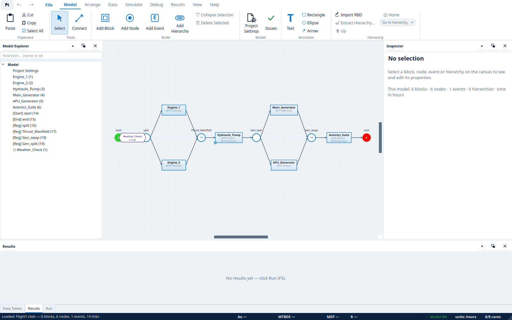
Fourteen elements: one dispatch event, two engines feeding a capacity-limited thrust manifold, a dependent hydraulic pump, a cold-standby generator pair, and an avionics block, strung through four fixed-length phases.
Run 2000 trials:
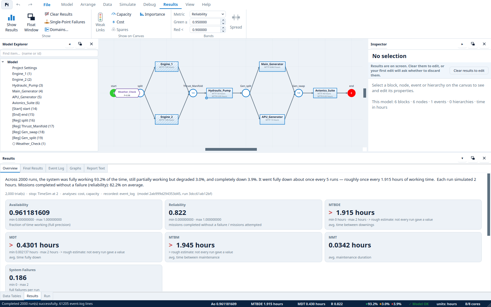
| Measure | This build |
|---|---|
Reliability |
about 82% |
Availability |
about 96.1% |
Degraded (Yellow) time |
about 2.9% |
Fully down (Red) time |
about 3.9% |
Weather scrubs |
about 1.9% of flights |
Now the question this chapter was actually built to ask. Split the 2000 runs by which engine failed:
| Which engine failed | Share of all flights | Still completed the mission |
|---|---|---|
Engine 1 alone |
about 4.6% |
0% — every single one |
Engine 2 alone |
about 4.5% |
about 88% |
Both |
about 0.3% |
0% |
Neither |
about 90.5% |
about 86% |
Check your "before you run it" prediction now. If you guessed "the same amount either way," the capacity manifold’s own logic agrees with you — 100 units from one healthy engine against a 150-unit plan is the same 50-unit shortfall no matter which engine survives. The actual numbers disagree, completely. Read one Engine-1-alone run’s event log to see why:
0.500000 Block Engine_1 Failed Operating_time=0.565413 0.565413 Block Engine_1 Done No_repair 0.565413 Block Hydraulic_Pump Idle Dependence 0.565413 Node Thrust_Manifold Degraded 1-1/2_df5_ur6 0.565413 System State_change Red _d1
The manifold does exactly what it was built to do — Degraded, not
Bad, because one engine is still delivering. But Hydraulic_Pump
goes Idle on the same event, tagged Dependence, and that is what
drags the whole system to Red. The brief’s own sentence — "Hydraulic
System 1 is driven off Engine 1’s accessory gearbox" — was the
dependency the whole time. It does not appear as a warning label. It
reads exactly like the rest of the systems description, and it costs
the flight in series, with no capacity margin or vote left to forgive
it, the moment Engine 1 specifically is the one that dies.
If your own file shows this same asymmetry, you caught the gearbox sentence and modelled it. If your two engines behave symmetrically, you built a real, coherent aircraft — just not quite this one, and that is a legitimate outcome for an open brief. Go check which is true of your file before reading further: is Engine 1 special in your model, the way the brief’s prose says it should be?
|
Note
|
Limits of this model
Two things worth stating plainly rather than discovering by surprise. First, Reliability here is zero-tolerance, exactly like every earlier reliability chapter: the Main-Generator-fails-APU-recovers case still counts as a failed mission even though the bus is back up in 72 seconds and the flight finishes the leg without another incident — a transient Red excursion is still a Red excursion. Second, the dependency mechanic only supports the all-or-nothing case this book has shown since Chapter 4, Dependency: The Backup That Wasn’t (100% Idle) — a real hydraulic crossfeed would likely degrade Hydraulic System 1 partially, not idle it completely, so this brief’s numbers are as pessimistic on that point as the engine can currently express. And as with every earlier capstone: every failure here is drawn independently, the dollar figures are teaching numbers chosen to make the arithmetic legible, not real aircraft economics, and no fault-tree detail from an actual airworthiness process is anywhere in this twelve-element model. |
23.8. Check yourself
1 |
The brief leaves some numbers undetermined — you had to just pick a value with nothing in the prose to anchor it. Name two such choices in your own file, and say which direction the headline Reliability would move if you had picked differently. |
2 |
Why does this model need two separate dollar rates ( |
3 |
Suppose the brief’s author made an error, and Hydraulic System 1 is actually crossfed from both engines, independent of which one fails. Which numbers in the worked-answer table would you expect to change, and in which direction? |
4 |
Name the field that keeps the APU at zero stress while it waits unused, and what would happen to this model’s realism if that field were 1.0 instead. |
Answers
This chapter has no single answer key — two honest builds can legitimately disagree. What follows discusses the reference build’s own choices, not a scorecard for yours.
-
Two real examples from the reference build: the engines' characteristic life (8 operating hours) and the generator’s bus-transfer delay (72 seconds) both came from nowhere in the brief’s prose — they were picked to make the mechanism visible at 2000 trials, the same "compress the numbers" move every earlier capstone has made openly. A shorter characteristic life pushes Reliability down; a shorter transfer delay nudges it up (fewer Red ticks long enough to matter, though this metric is zero-tolerance regardless of duration — see the Limits box). Your own file almost certainly has at least one number in the same position: something the brief left to your judgement.
-
redcostprices the hours the whole aircraft is grounded — a fixed, lump consequence, modelled as an hourly rate the way every earlier capstone has done.lostcostprices something continuous and partial: thrust actually missing from the 150-unit plan, which can happen without the aircraft being fully down at all (one engine out, still flying, still short). One flight can rack up either cost alone, or both at once — they are not interchangeable, and collapsing them into one rate would erase the very distinction Chapter 14, Capacity: The Thirsty Town exists to teach. -
Reliability should rise, and the Engine-1/Engine-2 asymmetry in the worked-answer table should vanish: with the dependency gone, losing either engine alone becomes an ordinary capacity shortfall — Yellow, a
lostcostbill, and (usually) a completed flight, for both engines symmetrically. The reference build’s ~82% is a pessimistic number because of the gearbox sentence; remove it and the true redundancy the manifold was built to provide finally shows up in the numbers. -
SbStress(0.0 in the reference build, and a new block’s default). At 1.0, the APU would age at full rate while sitting parked and unused — a hot standby, not the cold one the brief actually described ("sits cold and unstressed until it is needed"). The model would quietly become less realistic: an APU that has been wearing out the whole flight even though it never ran would fail more often than a real cold-stowed unit ever would.
23.9. Exercise
The airline wants one more nine of reliability, without adding any new redundancy — no third engine, no second APU. You have three honest, single-number levers already on the table: the engines' characteristic life, the hydraulic pump’s dependency, and the generator’s bus-transfer delay. Pick one, write one sentence defending why you picked it over the other two, change only that number, and run 2000 trials. Did you clear 90%? If not, name what is still costing you reliability that a single-number change on your chosen lever could never reach.
Answer
Of the three levers, the dependency is the one that costs nothing physically to fix (rewiring a hydraulic crossfeed line is a paperwork and routing change, not a heavier engine or a faster switch) and it is also the single biggest lever on the table — the worked answer’s own numbers show Engine-1 losses going from 0% survival to something close to Engine-2’s ~88% the moment the dependency is removed, which alone is worth several points of Reliability. Characteristic life and switch delay both move the number too, but neither erases an entire failure mode the way finding and cutting one bad dependency does — the same lesson Chapter 4, Dependency: The Backup That Wasn’t taught with two blocks, now worth defending with fourteen.
23.10. What you learned
-
A brief, not a click-path, is what reliability work actually looks like — Chapter 19, Phasing: The Wash That Doesn’t Run All Shift through Chapter 15, Cost: The Bill Arrives's techniques do not announce themselves; a plain sentence in a systems description is the only signal you get.
-
Two subsystems that look independent on the canvas can be wired together by one sentence in a systems description, and that single sentence can silently cancel out redundancy you built somewhere else entirely — Chapter 4, Dependency: The Backup That Wasn’t's own lesson, this time costing you a weak-link investigation to notice instead of being handed to you on page one.
-
"Defend the answer" means checking that your numbers are the ones your own modelling choices predict — not that they match this chapter’s table. Two careful engineers can read the same brief and ship two different, equally honest aircraft.
That is the whole toolbox, spent on one last machine with nobody holding your hand. Go point it at something that matters to you.
24. Appendix: Glossary
Words an engineer uses, in plain form.
| Word | Meaning |
|---|---|
Availability |
Fraction of time a system works. Answers: "is it selling soda right now, on average?" |
Block |
One part of the model that can fail. Drawn as a box. |
Capacity analysis |
Simulation that tracks how much flow reaches the end, not just whether a path exists. Adds lost flow, units produced, and the yellow "short but up" state. |
Common-cause failure (CCF) |
A shared root cause (one power feed, one flood zone, one bad batch) that breaks parts a diagram treats as independent. The main way real redundancy underperforms its paper reliability number. |
Convergence |
The settling of simulation answers as trials pile up. |
Cost analysis |
Simulation that also sums money: per-block purchase and repair costs, system red hours, and lost flow, rolled into a Grand_Total. |
Degraded |
System still works, but with less margin. Yellow on the health bar. |
Dependability |
Like availability, but scoped to one mission’s phases rather than the whole run. Only ever reported for a phased model. |
Dependency |
One element watching another and reacting to it: when the depended-upon thing goes down, the dependent one is forced Idle — paused, not failed, clock stopped — until it comes back. Elemental (one specific block), local (its own downstream node) or system (the whole model) are the three flavors. |
Distribution |
The dice rule for a random quantity — here, a lifetime or a repair time. Examples: Exponential (no memory), Weibull (wear-out), Fixed (no surprise). |
End node |
The red dot that stands for the whole system. When flow cannot reach it, the system is down. |
Event |
A single Bernoulli pass/fail decision, made once at the very start of the mission — no operating clock, no wear. Drawn as a hexagon. |
Event log |
The minute-by-minute story of one trial: every failure, repair, and status change, in order. |
Hazard function |
The risk of failing right now, given survival so far. Falling early in life, flat through Exponential’s "useful life," rising during wear-out — stack the three and you get the bathtub curve. |
Hierarchy |
A named box that hides a whole sub-diagram. Double-click to descend; the parent diagram sees only one oval. |
Idle |
A block or event deliberately or dependently paused — its failure clock stopped, not counted as a breakdown. Reached via dependency or a Cut mission phase. |
In / Out marker |
The two doors of a hierarchy: where flow enters and where it leaves. Everything between them is invisible from the parent level. |
k-of-n vote |
A junction alive while at least k of its n inputs are alive. Series is k = n; parallel redundancy is k = 1. |
Importance measures (Birnbaum, RAW, RRW, Vesely–Fussell) |
Numbers that say which block to improve. Each is estimated by re-simulating the model with one block made unable to fail and again with it dead. Birnbaum: how far the system moves when the block’s own availability moves. RAW (risk achievement worth): how much worse things are if the block is dead. RRW (risk reduction worth): how much better if it never failed. Vesely–Fussell: the block’s share of the downtime. Each is reported with its sampling error. |
Life-cycle cost |
One block’s whole bill: purchase + operating + sparing + disposal. The COST report’s per-block bottom line. |
Link |
An arrow between elements. It carries flow from Start toward End. |
Lost flow |
Demand the system could not deliver: thirst minus what survived the pipes. Availability never sees it; the capacity report does. |
MDT |
Mean Down Time. Average length of one full stoppage. |
MTBDE |
Mean Time Between Downs. Average working stretch between stoppages — a system-level number. |
MTBF |
Mean Time Between Failures. MTTF + MTTR for one repaired part — never confuse this component-level number with the system’s MTBDE. |
MTTF |
Mean Time To Failure. One part’s own average life. |
MTTR |
Mean Time To Repair. One part’s own average fix time. |
Mission |
One simulated run, Start to finish. The trip, the season, the year. |
N / N+1 |
Capacity shorthand. N = exactly enough parts (any failure bites); N+1 = one spare beyond need, the k-of-n vote with one forgiven failure. |
Node |
A junction that combines branches by a voting rule. |
Weak link |
The part whose failures cause the most system harm — frequency times consequence, not frequency alone. Fixing it promotes the runner-up. |
2N |
A complete second copy of a chain, either alone able to carry the load. The strongest redundancy badge — and the most expensive. |
Nominal / max flow |
The two sizes of a link. Nominal is the soft target filled first; max is the hard ceiling that only emergency spill touches. |
Phase |
A repeating mission stage with its own duration. A block can be Cut (out of the circuit, clock stopped), Active (normal stress) or Linked (in the circuit, no stress) differently in each one; a phase itself can be flagged Mission or non-Mission for Dependability’s own clock. |
RBD |
Reliability Block Diagram. The picture itself; also the |
Redundancy |
Extra copies of a part so one failure does not stop the system. |
Reliability |
Chance the system runs to mission end without any failure. Answers: "will it survive the whole weekend?" |
Repair distribution |
The dice for "how long does the fix take". Repair = None means the part never comes back. |
Run / trial |
One play-through of the mission with fresh dice rolls. |
SEM |
Standard error of the mean. Roughly your doubt about the answer: truth ≈ Mean ± 2 × SEM. |
Series |
All parts must work; one break kills the chain. |
Seed |
Starting number for the dice generator. Same seed, same story. |
Validation |
Checking that the model matches reality — the question no amount of stepping through a run can answer for you. |
Verification |
Checking that the simulation does what the model says. The stepping debugger’s job. |
Startup transient |
The optimistic bias every simulation starts with: every part begins "as good as new." Real for short missions, diluted by a long one, removed outright by Statistics start time. |
Statistics start time |
The instant a run’s own statistics reset to zero and start counting fresh, using the system’s current state as the new baseline. The tool for discarding a startup transient without discarding the mission time that created it. |
Steady state |
How a system behaves once the startup transient has worn off — its long-run, ordinary-day behaviour, as opposed to its brand-new-machine behaviour. |
Weibull shape |
First Weibull parameter. Below 1: infant deaths. Near 1: random. Above 1: wear-out. |
25. Appendix: Reliability block diagrams and IEC 61078
IEC 61078 is the international standard for reliability block diagrams (RBDs). It describes the logic of series, parallel and m-out-of-n structures, and two families of evaluation:
-
qualitative — minimal tie sets (success paths) and minimal cut sets (failure paths);
-
quantitative — Boolean methods, binary decision diagrams and analytical availability/reliability formulae.
RAPTOR Studio uses the same diagram vocabulary but evaluates a model by Monte Carlo simulation. That is a deliberate difference: simulation handles repair, spares, phases, dependencies and limited resources that the standard’s simple closed-form formulae do not.
25.1. What RAPTOR supports
-
Series, parallel and mixed structures.
-
m-out-of-n voting, with identical or different blocks.
-
Repaired and non-repaired blocks.
-
Hierarchies as sub-RBDs with one In and one Out marker.
-
Hot/cold standby, dependencies, spares, repair resources, PM and phases by simulation.
25.2. What RAPTOR does not do
RAPTOR does not calculate minimal cut/tie sets, Boolean/BDD expressions, analytical importance factors, PFDavg or the standard’s analytical failure intensities. (It does estimate the Annex D importance measures by re-simulation; see below.) It does not represent repeated/common blocks, multi-port transfer gates, non-coherent (inverted) blocks, PAND/SEQ gates or a common-cause beta factor.
Those are possible future work, not application features.
25.3. Reading the numbers
The standard’s measures line up with RAPTOR’s reports where the engine actually computes them:
| RAPTOR result | IEC 61078 | What it means |
|---|---|---|
Availability |
10.3.1 / 10.3.2 |
Simulated time-average system availability. |
Reliability |
10.3.3 |
Runs with no system failure over the horizon. |
System failures |
10.3.4 (input) |
Count of downing events; not a failure intensity. |
MTBDE, MDT, MTBM |
Related dependability terms |
Mean times from the event log; not Clause 10 outputs. |
Importance measures (Annex D) can be estimated for a run: switch on Run ▸ Analysis ▸ Importance measures, then open Results dock ▸ Final Results ▸ Importance. It reports Birnbaum, RAW, RRW and Vesely–Fussell importance for each block, with the sampling error of each, and ranks the blocks by Vesely–Fussell (Birnbaum cannot separate the blocks of a series system). It costs one extra batch per block — two with Birnbaum — so it is off unless you ask for it. Definitions and equations are on the Formulas page (Help ▸ Formulas); the tab does not restate them.
This appendix is the in-app clause summary. The full clause-by-clause
table is docs/IEC61078.md in the repository.
The practical rule: use the standard for analytical checks and certification paperwork; use this simulator when the system’s behaviour depends on repair logistics, phases or interactions that the standard says need simulation or a Markov/Petri model.
26. Appendix: Developer options
RAPTOR Studio has a handful of diagnostic features that add a file, a line or a column to the
output. Each is an ordinary option, off by default, under Preferences > Developer. On the command line, set them
with --dev-features LIST (or the RAPTOR_DEV_FEATURES environment variable), for example
--dev-features random_draw_count,event_log_filter=block+phase; all turns on every option
that only adds a line or column to an existing output.
|
Warning
|
Options that add a column, a line or a file change what the run writes. Leave them off when you compare output across runs or with another tool. None of them changes the simulation’s results. |
| Option | What it does |
|---|---|
|
Write only the chosen categories ( |
|
Also write every row for the named component, whatever the filter says. The name is cut at its first space. |
|
Write |
|
Write |
|
The name of a trigger that blocks whose comment is |
|
Add |
|
Show criticality in the Failure Effects View status bar, the Failure Effects text and the single point failure file. |
|
Hovering an element shows its id, parent, type and the model’s object counts in the status bar. |
|
Write a timestamped start-up and simulation trace. |
|
Write every random draw to |
|
Write a mission file: a row per block that goes down (block id, time, |
|
Every N runs, append a row of the statistics so far (Ao, Do, R, RCond, MTBDE, MDT, MTBM, MMT, each
with standard deviation and error of the mean) to a cumulative file. 0 is off. The GUI asks where to
save it; |
|
Every T time units of each run, take a snapshot of that run’s availability, MTBDE, MDT, MTBM and MMT and,
after the last run, write one row per mesh point with their cross-run statistics and the reliability
(fraction of runs with no system failure by then). Time-terminated runs only. |